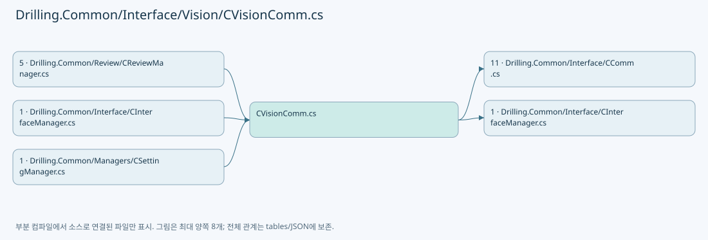

Markdown 원문 · Git 원본
Drilling.Common/Interface/Vision/CVisionComm.cs
| 항목 | 내용 |
|---|
| 원본 저장소 | https://github.com/kjuws10-rgb/A3Drilling.git |
| 원본 Commit | 5aee8e58439c9b455cae7c9593c9be986c3e682e |
| 원본 SHA256 | 3483e19c0f2d47dfc533a0b9967a0308e654dd43e582ab0b560cad020c4477a4 |
| 파일 분류 | code |
| 원본 크기/행 | 49,449 bytes / 994 physical lines |
| 인코딩 | utf-8-sig |
| 검토 범위 | 구문/부분 의미 분석에서 추출한 사실. 동작·물리 단위·실장비 합격을 보증하지 않습니다. |
| 원본 링크 | 고정 Commit 원본 |
파일의 역할과 읽는 순서
외부 통신과 장치 인터페이스를 연결합니다. 요청 생성·전송·수신·장치 실행을 같은 의미로 합치지 않습니다.

네임스페이스·타입·상속
| 타입 | 구분 | 원본 범위 | 선언/상속 |
|---|
| CVisionComm | ClassDeclaration | 10–528 | CVisionComm: CCommBase(data, option) |
| EN_VISION_COMMAND | EnumDeclaration | 530–540 | EN_VISION_COMMAND |
| ST_VISION_PACKET_HEADER | RecordStructDeclaration | 542–542 | ST_VISION_PACKET_HEADER |
| ST_VISION_MARK_SEARCH | RecordStructDeclaration | 543–543 | ST_VISION_MARK_SEARCH |
| ST_VISION_MARK_FIND | RecordStructDeclaration | 544–544 | ST_VISION_MARK_FIND |
| ST_VISION_PACKET | RecordDeclaration | 545–545 | ST_VISION_PACKET |
| ST_VISION_SINGLE_RESULT | RecordDeclaration | 546–546 | ST_VISION_SINGLE_RESULT |
| ST_VISION_LINE_RESULT | RecordDeclaration | 547–547 | ST_VISION_LINE_RESULT |
| ST_VISION_FLYING_READY | RecordDeclaration | 548–548 | ST_VISION_FLYING_READY |
| CVisionLineCountExceededException | ClassDeclaration | 549–553 | CVisionLineCountExceededException: IOException($"Vision 수신 HoleCount({actualCount})가 Setting-Review MaxHoleCountPerLine({maximumCount})을 초과했습니다.") |
| CVisionProtocol | ClassDeclaration | 554–993 | CVisionProtocol |
멤버 빠른 목록
| 이름 | 종류 | 범위 | 서명 |
|---|
| _pending | FieldDeclaration | L13–13 | System.Collections.Concurrent.ConcurrentDictionary<int, System.Threading.Tasks.TaskCompletionSource<Drilling.Common.Interface.Vision.ST_VISION_PACKET>> Drilling.Common.Interface.Vision.CVisionComm._pending |
| _lifecycleLock | FieldDeclaration | L14–14 | System.Threading.SemaphoreSlim Drilling.Common.Interface.Vision.CVisionComm._lifecycleLock |
| _writeLock | FieldDeclaration | L15–15 | System.Threading.SemaphoreSlim Drilling.Common.Interface.Vision.CVisionComm._writeLock |
| _clientReady | FieldDeclaration | L16–16 | System.Threading.SemaphoreSlim Drilling.Common.Interface.Vision.CVisionComm._clientReady |
| _listener | FieldDeclaration | L17–17 | System.Net.Sockets.TcpListener? Drilling.Common.Interface.Vision.CVisionComm._listener |
| _client | FieldDeclaration | L18–18 | System.Net.Sockets.TcpClient? Drilling.Common.Interface.Vision.CVisionComm._client |
| _stream | FieldDeclaration | L19–19 | System.Net.Sockets.NetworkStream? Drilling.Common.Interface.Vision.CVisionComm._stream |
| _serverCancellation | FieldDeclaration | L20–20 | System.Threading.CancellationTokenSource? Drilling.Common.Interface.Vision.CVisionComm._serverCancellation |
| _acceptTask | FieldDeclaration | L21–21 | System.Threading.Tasks.Task? Drilling.Common.Interface.Vision.CVisionComm._acceptTask |
| _receiveTask | FieldDeclaration | L22–22 | System.Threading.Tasks.Task? Drilling.Common.Interface.Vision.CVisionComm._receiveTask |
| _uniqueId | FieldDeclaration | L23–23 | int Drilling.Common.Interface.Vision.CVisionComm._uniqueId |
| _flyingLineCapacity | FieldDeclaration | L24–24 | int Drilling.Common.Interface.Vision.CVisionComm._flyingLineCapacity |
| HasConnectedClient | PropertyDeclaration | L27–27 | bool Drilling.Common.Interface.Vision.CVisionComm.HasConnectedClient |
| LineCapacityProvider | PropertyDeclaration | L28–28 | System.Func<int>? Drilling.Common.Interface.Vision.CVisionComm.LineCapacityProvider |
| get_LineCapacityProvider | GetAccessorDeclaration | L28–28 | System.Func<int>? Drilling.Common.Interface.Vision.CVisionComm.LineCapacityProvider.get |
| set_LineCapacityProvider | SetAccessorDeclaration | L28–28 | void Drilling.Common.Interface.Vision.CVisionComm.LineCapacityProvider.set |
| ConfiguredLineCapacity | PropertyDeclaration | L29–29 | int Drilling.Common.Interface.Vision.CVisionComm.ConfiguredLineCapacity |
| ResponseLineCapacity | PropertyDeclaration | L30–30 | int Drilling.Common.Interface.Vision.CVisionComm.ResponseLineCapacity |
| ProtocolTrace | EventFieldDeclaration | L31–31 | System.Action<Drilling.Common.Interface.ST_COMM_PROTOCOL_TRACE>? Drilling.Common.Interface.Vision.CVisionComm.ProtocolTrace |
| Connect | MethodDeclaration | L32–76 | System.Threading.Tasks.Task Drilling.Common.Interface.Vision.CVisionComm.Connect(System.Threading.CancellationToken) |
| AcceptLoopCallback | LocalFunctionStatement | L55–58 | System.Threading.Tasks.Task AcceptLoopCallback() |
| Disconnect | MethodDeclaration | L78–91 | System.Threading.Tasks.Task Drilling.Common.Interface.Vision.CVisionComm.Disconnect(System.Threading.CancellationToken) |
| Execute | MethodDeclaration | L93–142 | System.Threading.Tasks.Task<string> Drilling.Common.Interface.Vision.CVisionComm.Execute(string, System.Threading.CancellationToken) |
| AcceptLoop | MethodDeclaration | L144–165 | System.Threading.Tasks.Task Drilling.Common.Interface.Vision.CVisionComm.AcceptLoop(System.Net.Sockets.TcpListener, System.Threading.CancellationToken) |
| ReplaceClient | MethodDeclaration | L167–186 | void Drilling.Common.Interface.Vision.CVisionComm.ReplaceClient(System.Net.Sockets.TcpClient, System.Threading.CancellationToken) |
| ReceiveLoopCallback | LocalFunctionStatement | L172–175 | System.Threading.Tasks.Task ReceiveLoopCallback() |
| ReceiveLoop | MethodDeclaration | L188–249 | System.Threading.Tasks.Task Drilling.Common.Interface.Vision.CVisionComm.ReceiveLoop(System.Net.Sockets.TcpClient, System.Net.Sockets.NetworkStream, System.Threading.CancellationToken) |
| WaitForClient | MethodDeclaration | L251–270 | System.Threading.Tasks.Task<System.Net.Sockets.NetworkStream> Drilling.Common.Interface.Vision.CVisionComm.WaitForClient(System.Threading.CancellationToken) |
| SendRequest | MethodDeclaration | L272–309 | System.Threading.Tasks.Task<Drilling.Common.Interface.Vision.ST_VISION_PACKET> Drilling.Common.Interface.Vision.CVisionComm.SendRequest(System.Net.Sockets.NetworkStream, Drilling.Common.Interface.Vision.ST_VISION_PACKET, System.Threading.CancellationToken) |
| SendPacket | MethodDeclaration | L311–327 | System.Threading.Tasks.Task Drilling.Common.Interface.Vision.CVisionComm.SendPacket(System.Net.Sockets.NetworkStream, Drilling.Common.Interface.Vision.ST_VISION_PACKET, System.Threading.CancellationToken) |
| ReadPacket | MethodDeclaration | L329–341 | System.Threading.Tasks.Task<Drilling.Common.Interface.Vision.ST_VISION_PACKET> Drilling.Common.Interface.Vision.CVisionComm.ReadPacket(System.Net.Sockets.NetworkStream, System.Threading.CancellationToken) |
| ParseRequest | MethodDeclaration | L343–357 | Drilling.Common.Interface.Vision.ST_VISION_PACKET Drilling.Common.Interface.Vision.CVisionComm.ParseRequest(string, int, int) |
| ParseFlyingReady | MethodDeclaration | L359–378 | Drilling.Common.Interface.Vision.ST_VISION_PACKET Drilling.Common.Interface.Vision.CVisionComm.ParseFlyingReady(int, string, int) |
| ParseMarkSearch | MethodDeclaration | L380–389 | Drilling.Common.Interface.Vision.ST_VISION_MARK_SEARCH Drilling.Common.Interface.Vision.CVisionComm.ParseMarkSearch(string) |
| NormalizeCommand | MethodDeclaration | L391–403 | Drilling.Common.Interface.Vision.EN_VISION_COMMAND Drilling.Common.Interface.Vision.CVisionComm.NormalizeCommand(string) |
| ParseInt | MethodDeclaration | L405–405 | int Drilling.Common.Interface.Vision.CVisionComm.ParseInt(string, string) |
| DescribeResponse | MethodDeclaration | L406–441 | string Drilling.Common.Interface.Vision.CVisionComm.DescribeResponse(Drilling.Common.Interface.Vision.ST_VISION_PACKET, int) |
| DescribePacket | MethodDeclaration | L443–443 | string Drilling.Common.Interface.Vision.CVisionComm.DescribePacket(Drilling.Common.Interface.Vision.ST_VISION_PACKET) |
| NextUniqueId | MethodDeclaration | L444–454 | int Drilling.Common.Interface.Vision.CVisionComm.NextUniqueId() |
| RaiseProtocolTrace | MethodDeclaration | L456–459 | void Drilling.Common.Interface.Vision.CVisionComm.RaiseProtocolTrace(string, string) |
| IsServerListening | MethodDeclaration | L461–464 | bool Drilling.Common.Interface.Vision.CVisionComm.IsServerListening() |
| StopServer | MethodDeclaration | L466–495 | System.Threading.Tasks.Task Drilling.Common.Interface.Vision.CVisionComm.StopServer() |
| FailPending | MethodDeclaration | L497–506 | void Drilling.Common.Interface.Vision.CVisionComm.FailPending(System.Exception) |
| IgnoreCancellation | MethodDeclaration | L508–517 | System.Threading.Tasks.Task Drilling.Common.Interface.Vision.CVisionComm.IgnoreCancellation(System.Threading.Tasks.Task) |
| ResolveBindAddress | MethodDeclaration | L519–527 | System.Net.IPAddress Drilling.Common.Interface.Vision.CVisionComm.ResolveBindAddress(string) |
| MarkFindSingle | EnumMemberDeclaration | L532–532 | Drilling.Common.Interface.Vision.EN_VISION_COMMAND.MarkFindSingle |
| FlyingReady | EnumMemberDeclaration | L533–533 | Drilling.Common.Interface.Vision.EN_VISION_COMMAND.FlyingReady |
| FlyingMoveDone | EnumMemberDeclaration | L534–534 | Drilling.Common.Interface.Vision.EN_VISION_COMMAND.FlyingMoveDone |
| MarkFindLine | EnumMemberDeclaration | L535–535 | Drilling.Common.Interface.Vision.EN_VISION_COMMAND.MarkFindLine |
| MarkFindSettingSingle | EnumMemberDeclaration | L536–536 | Drilling.Common.Interface.Vision.EN_VISION_COMMAND.MarkFindSettingSingle |
| MarkFindManual | EnumMemberDeclaration | L537–537 | Drilling.Common.Interface.Vision.EN_VISION_COMMAND.MarkFindManual |
| KeepAliveRequest | EnumMemberDeclaration | L538–538 | Drilling.Common.Interface.Vision.EN_VISION_COMMAND.KeepAliveRequest |
| KeepAlive | EnumMemberDeclaration | L539–539 | Drilling.Common.Interface.Vision.EN_VISION_COMMAND.KeepAlive |
| ActualCount | PropertyDeclaration | L551–551 | int Drilling.Common.Interface.Vision.CVisionLineCountExceededException.ActualCount |
| get_ActualCount | GetAccessorDeclaration | L551–551 | int Drilling.Common.Interface.Vision.CVisionLineCountExceededException.ActualCount.get |
| MaximumCount | PropertyDeclaration | L552–552 | int Drilling.Common.Interface.Vision.CVisionLineCountExceededException.MaximumCount |
| get_MaximumCount | GetAccessorDeclaration | L552–552 | int Drilling.Common.Interface.Vision.CVisionLineCountExceededException.MaximumCount.get |
| PacketLogSeparator | FieldDeclaration | L556–556 | string Drilling.Common.Interface.Vision.CVisionProtocol.PacketLogSeparator |
| PacketLogBodyIndent | FieldDeclaration | L557–557 | string Drilling.Common.Interface.Vision.CVisionProtocol.PacketLogBodyIndent |
| HeaderSize | FieldDeclaration | L558–558 | int Drilling.Common.Interface.Vision.CVisionProtocol.HeaderSize |
| MarkSearchSize | FieldDeclaration | L559–559 | int Drilling.Common.Interface.Vision.CVisionProtocol.MarkSearchSize |
| MarkFindPackedSize | FieldDeclaration | L560–560 | int Drilling.Common.Interface.Vision.CVisionProtocol.MarkFindPackedSize |
| SingleResultBodySize | FieldDeclaration | L561–561 | int Drilling.Common.Interface.Vision.CVisionProtocol.SingleResultBodySize |
| MaximumBodySize | FieldDeclaration | L562–562 | int Drilling.Common.Interface.Vision.CVisionProtocol.MaximumBodySize |
| MaximumMarkCount | FieldDeclaration | L565–565 | int Drilling.Common.Interface.Vision.CVisionProtocol.MaximumMarkCount |
| DefaultMaxHoleCountPerLine | FieldDeclaration | L566–566 | int Drilling.Common.Interface.Vision.CVisionProtocol.DefaultMaxHoleCountPerLine |
| MaxHoleCountPerLineSettingKey | FieldDeclaration | L567–567 | string Drilling.Common.Interface.Vision.CVisionProtocol.MaxHoleCountPerLineSettingKey |
| ValidateLineCapacity | MethodDeclaration | L568–573 | int Drilling.Common.Interface.Vision.CVisionProtocol.ValidateLineCapacity(int) |
| CreateEmpty | MethodDeclaration | L574–574 | Drilling.Common.Interface.Vision.ST_VISION_PACKET Drilling.Common.Interface.Vision.CVisionProtocol.CreateEmpty(Drilling.Common.Interface.Vision.EN_VISION_COMMAND, int, int) |
| CreateMarkFindSingle | MethodDeclaration | L575–575 | Drilling.Common.Interface.Vision.ST_VISION_PACKET Drilling.Common.Interface.Vision.CVisionProtocol.CreateMarkFindSingle(int, Drilling.Common.Interface.Vision.ST_VISION_MARK_SEARCH) |
| CreateFlyingReady | MethodDeclaration | L576–595 | Drilling.Common.Interface.Vision.ST_VISION_PACKET Drilling.Common.Interface.Vision.CVisionProtocol.CreateFlyingReady(int, int, System.Collections.Generic.IReadOnlyList<Drilling.Common.Interface.Vision.ST_VISION_MARK_SEARCH>, int) |
| CreateSingleResult | MethodDeclaration | L597–608 | Drilling.Common.Interface.Vision.ST_VISION_PACKET Drilling.Common.Interface.Vision.CVisionProtocol.CreateSingleResult(Drilling.Common.Interface.Vision.EN_VISION_COMMAND, int, int, Drilling.Common.Interface.Vision.ST_VISION_MARK_FIND, int) |
| CreateLineResult | MethodDeclaration | L610–630 | Drilling.Common.Interface.Vision.ST_VISION_PACKET Drilling.Common.Interface.Vision.CVisionProtocol.CreateLineResult(int, int, System.Collections.Generic.IReadOnlyList<Drilling.Common.Interface.Vision.ST_VISION_MARK_FIND>, int, int) |
| Create | MethodDeclaration | L632–637 | Drilling.Common.Interface.Vision.ST_VISION_PACKET Drilling.Common.Interface.Vision.CVisionProtocol.Create(Drilling.Common.Interface.Vision.EN_VISION_COMMAND, int, byte[], int) |
| Encode | MethodDeclaration | L639–656 | byte[] Drilling.Common.Interface.Vision.CVisionProtocol.Encode(Drilling.Common.Interface.Vision.ST_VISION_PACKET) |
| DecodeHeader | MethodDeclaration | L658–668 | Drilling.Common.Interface.Vision.ST_VISION_PACKET_HEADER Drilling.Common.Interface.Vision.CVisionProtocol.DecodeHeader(System.ReadOnlySpan<byte>) |
| Decode | MethodDeclaration | L670–680 | Drilling.Common.Interface.Vision.ST_VISION_PACKET Drilling.Common.Interface.Vision.CVisionProtocol.Decode(System.ReadOnlySpan<byte>) |
| DecodeMarkSearchRequest | MethodDeclaration | L682–696 | Drilling.Common.Interface.Vision.ST_VISION_MARK_SEARCH Drilling.Common.Interface.Vision.CVisionProtocol.DecodeMarkSearchRequest(Drilling.Common.Interface.Vision.ST_VISION_PACKET) |
| DecodeFlyingReadyRequest | MethodDeclaration | L698–732 | Drilling.Common.Interface.Vision.ST_VISION_FLYING_READY Drilling.Common.Interface.Vision.CVisionProtocol.DecodeFlyingReadyRequest(Drilling.Common.Interface.Vision.ST_VISION_PACKET, int) |
| DecodeFlyingMoveDoneResponse | MethodDeclaration | L735–746 | int Drilling.Common.Interface.Vision.CVisionProtocol.DecodeFlyingMoveDoneResponse(Drilling.Common.Interface.Vision.ST_VISION_PACKET) |
| DecodeSingleResult | MethodDeclaration | L748–762 | Drilling.Common.Interface.Vision.ST_VISION_SINGLE_RESULT Drilling.Common.Interface.Vision.CVisionProtocol.DecodeSingleResult(Drilling.Common.Interface.Vision.ST_VISION_PACKET) |
| DecodeLineResult | MethodDeclaration | L764–803 | Drilling.Common.Interface.Vision.ST_VISION_LINE_RESULT Drilling.Common.Interface.Vision.CVisionProtocol.DecodeLineResult(Drilling.Common.Interface.Vision.ST_VISION_PACKET, int) |
| EncodeMarkSearch | MethodDeclaration | L805–810 | byte[] Drilling.Common.Interface.Vision.CVisionProtocol.EncodeMarkSearch(Drilling.Common.Interface.Vision.ST_VISION_MARK_SEARCH) |
| FormatPacketLog | MethodDeclaration | L812–827 | string Drilling.Common.Interface.Vision.CVisionProtocol.FormatPacketLog(string, Drilling.Common.Interface.Vision.ST_VISION_PACKET, string, int) |
| GetCommandName | MethodDeclaration | L829–842 | string Drilling.Common.Interface.Vision.CVisionProtocol.GetCommandName(int) |
| AppendPacketLogBody | MethodDeclaration | L844–884 | void Drilling.Common.Interface.Vision.CVisionProtocol.AppendPacketLogBody(System.Text.StringBuilder, Drilling.Common.Interface.Vision.ST_VISION_PACKET, int) |
| AppendMarkFindSingleLogBody | MethodDeclaration | L886–901 | void Drilling.Common.Interface.Vision.CVisionProtocol.AppendMarkFindSingleLogBody(System.Text.StringBuilder, Drilling.Common.Interface.Vision.ST_VISION_PACKET) |
| AppendFlyingReadyLogBody | MethodDeclaration | L903–914 | void Drilling.Common.Interface.Vision.CVisionProtocol.AppendFlyingReadyLogBody(System.Text.StringBuilder, Drilling.Common.Interface.Vision.ST_VISION_PACKET, int) |
| AppendSingleResultLogBody | MethodDeclaration | L916–921 | void Drilling.Common.Interface.Vision.CVisionProtocol.AppendSingleResultLogBody(System.Text.StringBuilder, Drilling.Common.Interface.Vision.ST_VISION_PACKET) |
| AppendLineResultLogBody | MethodDeclaration | L923–933 | void Drilling.Common.Interface.Vision.CVisionProtocol.AppendLineResultLogBody(System.Text.StringBuilder, Drilling.Common.Interface.Vision.ST_VISION_PACKET, int) |
| AppendMarkResultLog | MethodDeclaration | L935–948 | void Drilling.Common.Interface.Vision.CVisionProtocol.AppendMarkResultLog(System.Text.StringBuilder, Drilling.Common.Interface.Vision.ST_VISION_MARK_FIND, int?) |
| FormatLogNumber | MethodDeclaration | L950–953 | string Drilling.Common.Interface.Vision.CVisionProtocol.FormatLogNumber(double) |
| WriteMarkSearch | MethodDeclaration | L955–963 | void Drilling.Common.Interface.Vision.CVisionProtocol.WriteMarkSearch(System.Span<byte>, int, Drilling.Common.Interface.Vision.ST_VISION_MARK_SEARCH) |
| WriteMarkFind | MethodDeclaration | L965–972 | void Drilling.Common.Interface.Vision.CVisionProtocol.WriteMarkFind(System.Span<byte>, int, Drilling.Common.Interface.Vision.ST_VISION_MARK_FIND) |
| ReadPackedMarkFind | MethodDeclaration | L974–974 | Drilling.Common.Interface.Vision.ST_VISION_MARK_FIND Drilling.Common.Interface.Vision.CVisionProtocol.ReadPackedMarkFind(System.ReadOnlySpan<byte>, int) |
| ReadMarkSearch | MethodDeclaration | L975–975 | Drilling.Common.Interface.Vision.ST_VISION_MARK_SEARCH Drilling.Common.Interface.Vision.CVisionProtocol.ReadMarkSearch(System.ReadOnlySpan<byte>, int) |
| ValidateBodyLength | MethodDeclaration | L976–982 | void Drilling.Common.Interface.Vision.CVisionProtocol.ValidateBodyLength(int) |
| ReadInt32 | MethodDeclaration | L984–984 | int Drilling.Common.Interface.Vision.CVisionProtocol.ReadInt32(System.ReadOnlySpan<byte>, int) |
| ReadDouble | MethodDeclaration | L985–989 | double Drilling.Common.Interface.Vision.CVisionProtocol.ReadDouble(System.ReadOnlySpan<byte>, int) |
| WriteInt32 | MethodDeclaration | L991–991 | void Drilling.Common.Interface.Vision.CVisionProtocol.WriteInt32(System.Span<byte>, int, int) |
| WriteDouble | MethodDeclaration | L992–992 | void Drilling.Common.Interface.Vision.CVisionProtocol.WriteDouble(System.Span<byte>, int, double) |
멤버별 상세 계약·호출·처리 해설
FieldDeclaration _pending · L13–13
Drilling.Common/Interface/Vision/CVisionComm.cs:13–13
| 항목 | 실제 추출 값 |
|---|
| 서명 | System.Collections.Concurrent.ConcurrentDictionary<int, System.Threading.Tasks.TaskCompletionSource<Drilling.Common.Interface.Vision.ST_VISION_PACKET>> Drilling.Common.Interface.Vision.CVisionComm._pending |
| 접근/수식자 | Private / private, readonly |
| 반환/값 타입 | System.Collections.Concurrent.ConcurrentDictionary<int, System.Threading.Tasks.TaskCompletionSource<Drilling.Common.Interface.Vision.ST_VISION_PACKET>> |
| 소속 타입 | NamedType:Drilling.Common.Interface.Vision.CVisionComm |
현재 부분 분석에서 직접 연결된 호출자는 없습니다. XAML/이벤트/인터페이스·델리게이트·외부 진입을 추가 확인해야 하며, 미사용으로 판정한 것이 아닙니다.
호출하는 대상과 해석 범위:
| 원본 행 | 표현식 | 분석 상태 | 대상/소스 위치 |
|---|
| 13 | new | resolved | System.Collections.Concurrent.ConcurrentDictionary<int, System.Threading.Tasks.TaskCompletionSource<Drilling.Common.Interface.Vision.ST_VISION_PACKET>>.ConcurrentDictionary() |
본문의 실제 연산·분기·예외·반환 순서(원문 위치 순):
| 원본 행 | 종류 | 주석 해설 |
|---|
| 13 | call | 함수·델리게이트 또는 객체 생성자를 호출합니다: new() |
| 13 | variable-initializer | 변수의 초기값을 지정합니다: _pending = new() |
변경 전 점검: 입력/반환 타입, 위 호출자, 예외/취소 경로, 공유 상태와 저장·전송 소비자를 함께 확인합니다. 값의 단위나 물리 방향을 이름만으로 확정하지 않습니다.
FieldDeclaration _lifecycleLock · L14–14
Drilling.Common/Interface/Vision/CVisionComm.cs:14–14
| 항목 | 실제 추출 값 |
|---|
| 서명 | System.Threading.SemaphoreSlim Drilling.Common.Interface.Vision.CVisionComm._lifecycleLock |
| 접근/수식자 | Private / private, readonly |
| 반환/값 타입 | System.Threading.SemaphoreSlim |
| 소속 타입 | NamedType:Drilling.Common.Interface.Vision.CVisionComm |
현재 부분 분석에서 직접 연결된 호출자는 없습니다. XAML/이벤트/인터페이스·델리게이트·외부 진입을 추가 확인해야 하며, 미사용으로 판정한 것이 아닙니다.
호출하는 대상과 해석 범위:
| 원본 행 | 표현식 | 분석 상태 | 대상/소스 위치 |
|---|
| 14 | new | resolved | System.Threading.SemaphoreSlim.SemaphoreSlim(int, int) |
본문의 실제 연산·분기·예외·반환 순서(원문 위치 순):
| 원본 행 | 종류 | 주석 해설 |
|---|
| 14 | call | 함수·델리게이트 또는 객체 생성자를 호출합니다: new(1, 1) |
| 14 | variable-initializer | 변수의 초기값을 지정합니다: _lifecycleLock = new(1, 1) |
변경 전 점검: 입력/반환 타입, 위 호출자, 예외/취소 경로, 공유 상태와 저장·전송 소비자를 함께 확인합니다. 값의 단위나 물리 방향을 이름만으로 확정하지 않습니다.
FieldDeclaration _writeLock · L15–15
Drilling.Common/Interface/Vision/CVisionComm.cs:15–15
| 항목 | 실제 추출 값 |
|---|
| 서명 | System.Threading.SemaphoreSlim Drilling.Common.Interface.Vision.CVisionComm._writeLock |
| 접근/수식자 | Private / private, readonly |
| 반환/값 타입 | System.Threading.SemaphoreSlim |
| 소속 타입 | NamedType:Drilling.Common.Interface.Vision.CVisionComm |
현재 부분 분석에서 직접 연결된 호출자는 없습니다. XAML/이벤트/인터페이스·델리게이트·외부 진입을 추가 확인해야 하며, 미사용으로 판정한 것이 아닙니다.
호출하는 대상과 해석 범위:
| 원본 행 | 표현식 | 분석 상태 | 대상/소스 위치 |
|---|
| 15 | new | resolved | System.Threading.SemaphoreSlim.SemaphoreSlim(int, int) |
본문의 실제 연산·분기·예외·반환 순서(원문 위치 순):
| 원본 행 | 종류 | 주석 해설 |
|---|
| 15 | call | 함수·델리게이트 또는 객체 생성자를 호출합니다: new(1, 1) |
| 15 | variable-initializer | 변수의 초기값을 지정합니다: _writeLock = new(1, 1) |
변경 전 점검: 입력/반환 타입, 위 호출자, 예외/취소 경로, 공유 상태와 저장·전송 소비자를 함께 확인합니다. 값의 단위나 물리 방향을 이름만으로 확정하지 않습니다.
FieldDeclaration _clientReady · L16–16
Drilling.Common/Interface/Vision/CVisionComm.cs:16–16
| 항목 | 실제 추출 값 |
|---|
| 서명 | System.Threading.SemaphoreSlim Drilling.Common.Interface.Vision.CVisionComm._clientReady |
| 접근/수식자 | Private / private, readonly |
| 반환/값 타입 | System.Threading.SemaphoreSlim |
| 소속 타입 | NamedType:Drilling.Common.Interface.Vision.CVisionComm |
현재 부분 분석에서 직접 연결된 호출자는 없습니다. XAML/이벤트/인터페이스·델리게이트·외부 진입을 추가 확인해야 하며, 미사용으로 판정한 것이 아닙니다.
호출하는 대상과 해석 범위:
| 원본 행 | 표현식 | 분석 상태 | 대상/소스 위치 |
|---|
| 16 | new | resolved | System.Threading.SemaphoreSlim.SemaphoreSlim(int, int) |
본문의 실제 연산·분기·예외·반환 순서(원문 위치 순):
| 원본 행 | 종류 | 주석 해설 |
|---|
| 16 | call | 함수·델리게이트 또는 객체 생성자를 호출합니다: new(0, 1) |
| 16 | variable-initializer | 변수의 초기값을 지정합니다: _clientReady = new(0, 1) |
변경 전 점검: 입력/반환 타입, 위 호출자, 예외/취소 경로, 공유 상태와 저장·전송 소비자를 함께 확인합니다. 값의 단위나 물리 방향을 이름만으로 확정하지 않습니다.
FieldDeclaration _listener · L17–17
Drilling.Common/Interface/Vision/CVisionComm.cs:17–17
| 항목 | 실제 추출 값 |
|---|
| 서명 | System.Net.Sockets.TcpListener? Drilling.Common.Interface.Vision.CVisionComm._listener |
| 접근/수식자 | Private / private |
| 반환/값 타입 | System.Net.Sockets.TcpListener? |
| 소속 타입 | NamedType:Drilling.Common.Interface.Vision.CVisionComm |
현재 부분 분석에서 직접 연결된 호출자는 없습니다. XAML/이벤트/인터페이스·델리게이트·외부 진입을 추가 확인해야 하며, 미사용으로 판정한 것이 아닙니다.
변경 전 점검: 입력/반환 타입, 위 호출자, 예외/취소 경로, 공유 상태와 저장·전송 소비자를 함께 확인합니다. 값의 단위나 물리 방향을 이름만으로 확정하지 않습니다.
FieldDeclaration _client · L18–18
Drilling.Common/Interface/Vision/CVisionComm.cs:18–18
| 항목 | 실제 추출 값 |
|---|
| 서명 | System.Net.Sockets.TcpClient? Drilling.Common.Interface.Vision.CVisionComm._client |
| 접근/수식자 | Private / private |
| 반환/값 타입 | System.Net.Sockets.TcpClient? |
| 소속 타입 | NamedType:Drilling.Common.Interface.Vision.CVisionComm |
현재 부분 분석에서 직접 연결된 호출자는 없습니다. XAML/이벤트/인터페이스·델리게이트·외부 진입을 추가 확인해야 하며, 미사용으로 판정한 것이 아닙니다.
변경 전 점검: 입력/반환 타입, 위 호출자, 예외/취소 경로, 공유 상태와 저장·전송 소비자를 함께 확인합니다. 값의 단위나 물리 방향을 이름만으로 확정하지 않습니다.
FieldDeclaration _stream · L19–19
Drilling.Common/Interface/Vision/CVisionComm.cs:19–19
| 항목 | 실제 추출 값 |
|---|
| 서명 | System.Net.Sockets.NetworkStream? Drilling.Common.Interface.Vision.CVisionComm._stream |
| 접근/수식자 | Private / private |
| 반환/값 타입 | System.Net.Sockets.NetworkStream? |
| 소속 타입 | NamedType:Drilling.Common.Interface.Vision.CVisionComm |
현재 부분 분석에서 직접 연결된 호출자는 없습니다. XAML/이벤트/인터페이스·델리게이트·외부 진입을 추가 확인해야 하며, 미사용으로 판정한 것이 아닙니다.
변경 전 점검: 입력/반환 타입, 위 호출자, 예외/취소 경로, 공유 상태와 저장·전송 소비자를 함께 확인합니다. 값의 단위나 물리 방향을 이름만으로 확정하지 않습니다.
FieldDeclaration _serverCancellation · L20–20
Drilling.Common/Interface/Vision/CVisionComm.cs:20–20
| 항목 | 실제 추출 값 |
|---|
| 서명 | System.Threading.CancellationTokenSource? Drilling.Common.Interface.Vision.CVisionComm._serverCancellation |
| 접근/수식자 | Private / private |
| 반환/값 타입 | System.Threading.CancellationTokenSource? |
| 소속 타입 | NamedType:Drilling.Common.Interface.Vision.CVisionComm |
현재 부분 분석에서 직접 연결된 호출자는 없습니다. XAML/이벤트/인터페이스·델리게이트·외부 진입을 추가 확인해야 하며, 미사용으로 판정한 것이 아닙니다.
변경 전 점검: 입력/반환 타입, 위 호출자, 예외/취소 경로, 공유 상태와 저장·전송 소비자를 함께 확인합니다. 값의 단위나 물리 방향을 이름만으로 확정하지 않습니다.
FieldDeclaration _acceptTask · L21–21
Drilling.Common/Interface/Vision/CVisionComm.cs:21–21
| 항목 | 실제 추출 값 |
|---|
| 서명 | System.Threading.Tasks.Task? Drilling.Common.Interface.Vision.CVisionComm._acceptTask |
| 접근/수식자 | Private / private |
| 반환/값 타입 | System.Threading.Tasks.Task? |
| 소속 타입 | NamedType:Drilling.Common.Interface.Vision.CVisionComm |
현재 부분 분석에서 직접 연결된 호출자는 없습니다. XAML/이벤트/인터페이스·델리게이트·외부 진입을 추가 확인해야 하며, 미사용으로 판정한 것이 아닙니다.
변경 전 점검: 입력/반환 타입, 위 호출자, 예외/취소 경로, 공유 상태와 저장·전송 소비자를 함께 확인합니다. 값의 단위나 물리 방향을 이름만으로 확정하지 않습니다.
FieldDeclaration _receiveTask · L22–22
Drilling.Common/Interface/Vision/CVisionComm.cs:22–22
| 항목 | 실제 추출 값 |
|---|
| 서명 | System.Threading.Tasks.Task? Drilling.Common.Interface.Vision.CVisionComm._receiveTask |
| 접근/수식자 | Private / private |
| 반환/값 타입 | System.Threading.Tasks.Task? |
| 소속 타입 | NamedType:Drilling.Common.Interface.Vision.CVisionComm |
현재 부분 분석에서 직접 연결된 호출자는 없습니다. XAML/이벤트/인터페이스·델리게이트·외부 진입을 추가 확인해야 하며, 미사용으로 판정한 것이 아닙니다.
변경 전 점검: 입력/반환 타입, 위 호출자, 예외/취소 경로, 공유 상태와 저장·전송 소비자를 함께 확인합니다. 값의 단위나 물리 방향을 이름만으로 확정하지 않습니다.
FieldDeclaration _uniqueId · L23–23
Drilling.Common/Interface/Vision/CVisionComm.cs:23–23
| 항목 | 실제 추출 값 |
|---|
| 서명 | int Drilling.Common.Interface.Vision.CVisionComm._uniqueId |
| 접근/수식자 | Private / private |
| 반환/값 타입 | int |
| 소속 타입 | NamedType:Drilling.Common.Interface.Vision.CVisionComm |
현재 부분 분석에서 직접 연결된 호출자는 없습니다. XAML/이벤트/인터페이스·델리게이트·외부 진입을 추가 확인해야 하며, 미사용으로 판정한 것이 아닙니다.
변경 전 점검: 입력/반환 타입, 위 호출자, 예외/취소 경로, 공유 상태와 저장·전송 소비자를 함께 확인합니다. 값의 단위나 물리 방향을 이름만으로 확정하지 않습니다.
FieldDeclaration _flyingLineCapacity · L24–24
Drilling.Common/Interface/Vision/CVisionComm.cs:24–24
| 항목 | 실제 추출 값 |
|---|
| 서명 | int Drilling.Common.Interface.Vision.CVisionComm._flyingLineCapacity |
| 접근/수식자 | Private / private |
| 반환/값 타입 | int |
| 소속 타입 | NamedType:Drilling.Common.Interface.Vision.CVisionComm |
현재 부분 분석에서 직접 연결된 호출자는 없습니다. XAML/이벤트/인터페이스·델리게이트·외부 진입을 추가 확인해야 하며, 미사용으로 판정한 것이 아닙니다.
변경 전 점검: 입력/반환 타입, 위 호출자, 예외/취소 경로, 공유 상태와 저장·전송 소비자를 함께 확인합니다. 값의 단위나 물리 방향을 이름만으로 확정하지 않습니다.
PropertyDeclaration HasConnectedClient · L27–27
Drilling.Common/Interface/Vision/CVisionComm.cs:27–27
| 항목 | 실제 추출 값 |
|---|
| 서명 | bool Drilling.Common.Interface.Vision.CVisionComm.HasConnectedClient |
| 접근/수식자 | Internal / internal |
| 반환/값 타입 | bool |
| 소속 타입 | NamedType:Drilling.Common.Interface.Vision.CVisionComm |
현재 부분 분석에서 직접 연결된 호출자는 없습니다. XAML/이벤트/인터페이스·델리게이트·외부 진입을 추가 확인해야 하며, 미사용으로 판정한 것이 아닙니다.
호출하는 대상과 해석 범위:
| 원본 행 | 표현식 | 분석 상태 | 대상/소스 위치 |
|---|
| 27 | Volatile.Read | resolved | System.Net.Sockets.TcpClient? System.Threading.Volatile.Read<System.Net.Sockets.TcpClient?>(ref readonly System.Net.Sockets.TcpClient?) |
본문의 실제 연산·분기·예외·반환 순서(원문 위치 순):
| 원본 행 | 종류 | 주석 해설 |
|---|
| 27 | call | 함수·델리게이트 또는 객체 생성자를 호출합니다: Volatile.Read(ref _client) |
변경 전 점검: 입력/반환 타입, 위 호출자, 예외/취소 경로, 공유 상태와 저장·전송 소비자를 함께 확인합니다. 값의 단위나 물리 방향을 이름만으로 확정하지 않습니다.
PropertyDeclaration LineCapacityProvider · L28–28
Drilling.Common/Interface/Vision/CVisionComm.cs:28–28
| 항목 | 실제 추출 값 |
|---|
| 서명 | System.Func<int>? Drilling.Common.Interface.Vision.CVisionComm.LineCapacityProvider |
| 접근/수식자 | Internal / internal |
| 반환/값 타입 | System.Func<int>? |
| 소속 타입 | NamedType:Drilling.Common.Interface.Vision.CVisionComm |
현재 부분 분석에서 직접 연결된 호출자는 없습니다. XAML/이벤트/인터페이스·델리게이트·외부 진입을 추가 확인해야 하며, 미사용으로 판정한 것이 아닙니다.
변경 전 점검: 입력/반환 타입, 위 호출자, 예외/취소 경로, 공유 상태와 저장·전송 소비자를 함께 확인합니다. 값의 단위나 물리 방향을 이름만으로 확정하지 않습니다.
GetAccessorDeclaration get_LineCapacityProvider · L28–28
Drilling.Common/Interface/Vision/CVisionComm.cs:28–28
| 항목 | 실제 추출 값 |
|---|
| 서명 | System.Func<int>? Drilling.Common.Interface.Vision.CVisionComm.LineCapacityProvider.get |
| 접근/수식자 | Internal / get |
| 반환/값 타입 | System.Func<int>? |
| 소속 타입 | NamedType:Drilling.Common.Interface.Vision.CVisionComm |
현재 부분 분석에서 직접 연결된 호출자는 없습니다. XAML/이벤트/인터페이스·델리게이트·외부 진입을 추가 확인해야 하며, 미사용으로 판정한 것이 아닙니다.
변경 전 점검: 입력/반환 타입, 위 호출자, 예외/취소 경로, 공유 상태와 저장·전송 소비자를 함께 확인합니다. 값의 단위나 물리 방향을 이름만으로 확정하지 않습니다.
SetAccessorDeclaration set_LineCapacityProvider · L28–28
Drilling.Common/Interface/Vision/CVisionComm.cs:28–28
| 항목 | 실제 추출 값 |
|---|
| 서명 | void Drilling.Common.Interface.Vision.CVisionComm.LineCapacityProvider.set |
| 접근/수식자 | Internal / set |
| 반환/값 타입 | void |
| 소속 타입 | NamedType:Drilling.Common.Interface.Vision.CVisionComm |
입력 계약:
| 이름 | 타입 | 전달 | 선택/기본값 |
|---|
| value | System.Func<int>? | None | False / |
현재 부분 분석에서 직접 연결된 호출자는 없습니다. XAML/이벤트/인터페이스·델리게이트·외부 진입을 추가 확인해야 하며, 미사용으로 판정한 것이 아닙니다.
변경 전 점검: 입력/반환 타입, 위 호출자, 예외/취소 경로, 공유 상태와 저장·전송 소비자를 함께 확인합니다. 값의 단위나 물리 방향을 이름만으로 확정하지 않습니다.
PropertyDeclaration ConfiguredLineCapacity · L29–29
Drilling.Common/Interface/Vision/CVisionComm.cs:29–29
| 항목 | 실제 추출 값 |
|---|
| 서명 | int Drilling.Common.Interface.Vision.CVisionComm.ConfiguredLineCapacity |
| 접근/수식자 | Private / private |
| 반환/값 타입 | int |
| 소속 타입 | NamedType:Drilling.Common.Interface.Vision.CVisionComm |
현재 부분 분석에서 직접 연결된 호출자는 없습니다. XAML/이벤트/인터페이스·델리게이트·외부 진입을 추가 확인해야 하며, 미사용으로 판정한 것이 아닙니다.
호출하는 대상과 해석 범위:
| 원본 행 | 표현식 | 분석 상태 | 대상/소스 위치 |
|---|
| 29 | CVisionProtocol.ValidateLineCapacity | resolved | int Drilling.Common.Interface.Vision.CVisionProtocol.ValidateLineCapacity(int) · Drilling.Common/Interface/Vision/CVisionComm.cs:568 |
| 29 | .Invoke | resolved · 동적 구현 선택 가능 | int System.Func<int>.Invoke() |
본문의 실제 연산·분기·예외·반환 순서(원문 위치 순):
| 원본 행 | 종류 | 주석 해설 |
|---|
| 29 | call | 함수·델리게이트 또는 객체 생성자를 호출합니다: CVisionProtocol.ValidateLineCapacity(LineCapacityProvider?.Invoke() ?? CVisionProtocol.DefaultMaxHoleCountPerLine) |
| 29 | call | 함수·델리게이트 또는 객체 생성자를 호출합니다: .Invoke() |
변경 전 점검: 입력/반환 타입, 위 호출자, 예외/취소 경로, 공유 상태와 저장·전송 소비자를 함께 확인합니다. 값의 단위나 물리 방향을 이름만으로 확정하지 않습니다.
PropertyDeclaration ResponseLineCapacity · L30–30
Drilling.Common/Interface/Vision/CVisionComm.cs:30–30
| 항목 | 실제 추출 값 |
|---|
| 서명 | int Drilling.Common.Interface.Vision.CVisionComm.ResponseLineCapacity |
| 접근/수식자 | Private / private |
| 반환/값 타입 | int |
| 소속 타입 | NamedType:Drilling.Common.Interface.Vision.CVisionComm |
현재 부분 분석에서 직접 연결된 호출자는 없습니다. XAML/이벤트/인터페이스·델리게이트·외부 진입을 추가 확인해야 하며, 미사용으로 판정한 것이 아닙니다.
호출하는 대상과 해석 범위:
| 원본 행 | 표현식 | 분석 상태 | 대상/소스 위치 |
|---|
| 30 | Volatile.Read | resolved | int System.Threading.Volatile.Read(ref readonly int) |
본문의 실제 연산·분기·예외·반환 순서(원문 위치 순):
| 원본 행 | 종류 | 주석 해설 |
|---|
| 30 | call | 함수·델리게이트 또는 객체 생성자를 호출합니다: Volatile.Read(ref _flyingLineCapacity) |
| 30 | conditional-expression | 조건에 따라 결과식을 선택합니다: Volatile.Read(ref _flyingLineCapacity) is > 0 and var capacity ? capacity : ConfiguredLineCapacity |
변경 전 점검: 입력/반환 타입, 위 호출자, 예외/취소 경로, 공유 상태와 저장·전송 소비자를 함께 확인합니다. 값의 단위나 물리 방향을 이름만으로 확정하지 않습니다.
EventFieldDeclaration ProtocolTrace · L31–31
Drilling.Common/Interface/Vision/CVisionComm.cs:31–31
| 항목 | 실제 추출 값 |
|---|
| 서명 | System.Action<Drilling.Common.Interface.ST_COMM_PROTOCOL_TRACE>? Drilling.Common.Interface.Vision.CVisionComm.ProtocolTrace |
| 접근/수식자 | Internal / internal, event |
| 반환/값 타입 | System.Action<Drilling.Common.Interface.ST_COMM_PROTOCOL_TRACE>? |
| 소속 타입 | NamedType:Drilling.Common.Interface.Vision.CVisionComm |
현재 부분 분석에서 직접 연결된 호출자는 없습니다. XAML/이벤트/인터페이스·델리게이트·외부 진입을 추가 확인해야 하며, 미사용으로 판정한 것이 아닙니다.
변경 전 점검: 입력/반환 타입, 위 호출자, 예외/취소 경로, 공유 상태와 저장·전송 소비자를 함께 확인합니다. 값의 단위나 물리 방향을 이름만으로 확정하지 않습니다.
MethodDeclaration Connect · L32–76
Drilling.Common/Interface/Vision/CVisionComm.cs:32–76
| 항목 | 실제 추출 값 |
|---|
| 서명 | System.Threading.Tasks.Task Drilling.Common.Interface.Vision.CVisionComm.Connect(System.Threading.CancellationToken) |
| 접근/수식자 | Public / public, override, async |
| 반환/값 타입 | System.Threading.Tasks.Task |
| 소속 타입 | NamedType:Drilling.Common.Interface.Vision.CVisionComm |
입력 계약:
| 이름 | 타입 | 전달 | 선택/기본값 |
|---|
| cancellationToken | System.Threading.CancellationToken | None | True / null |
정적 호출자로 확인된 위치:
호출하는 대상과 해석 범위:
| 원본 행 | 표현식 | 분석 상태 | 대상/소스 위치 |
|---|
| 34 | _lifecycleLock.WaitAsync | resolved | System.Threading.Tasks.Task System.Threading.SemaphoreSlim.WaitAsync(System.Threading.CancellationToken) |
| 40 | SetState | resolved | void Drilling.Common.Interface.CCommBase.SetState(Drilling.Common.Interface.EN_COMM_STATE) · Drilling.Common/Interface/CComm.cs:114 |
| 44 | StopServer | resolved | System.Threading.Tasks.Task Drilling.Common.Interface.Vision.CVisionComm.StopServer() · Drilling.Common/Interface/Vision/CVisionComm.cs:466 |
| 47 | SetError | resolved | void Drilling.Common.Interface.CCommBase.SetError(string) · Drilling.Common/Interface/CComm.cs:126 |
| 51 | new TcpListener | resolved | System.Net.Sockets.TcpListener.TcpListener(System.Net.IPAddress, int) |
| 51 | ResolveBindAddress | resolved | System.Net.IPAddress Drilling.Common.Interface.Vision.CVisionComm.ResolveBindAddress(string) · Drilling.Common/Interface/Vision/CVisionComm.cs:519 |
| 52 | listener.Start | resolved | void System.Net.Sockets.TcpListener.Start(int) |
| 54 | new CancellationTokenSource | resolved | System.Threading.CancellationTokenSource.CancellationTokenSource() |
| 60 | Task.Run | resolved | System.Threading.Tasks.Task System.Threading.Tasks.Task.Run(System.Func<System.Threading.Tasks.Task?>, System.Threading.CancellationToken) |
| 64 | SetState | resolved | void Drilling.Common.Interface.CCommBase.SetState(Drilling.Common.Interface.EN_COMM_STATE) · Drilling.Common/Interface/CComm.cs:114 |
| 65 | RaiseProtocolTrace | resolved | void Drilling.Common.Interface.Vision.CVisionComm.RaiseProtocolTrace(string, string) · Drilling.Common/Interface/Vision/CVisionComm.cs:456 |
| 69 | StopServer | resolved | System.Threading.Tasks.Task Drilling.Common.Interface.Vision.CVisionComm.StopServer() · Drilling.Common/Interface/Vision/CVisionComm.cs:466 |
| 70 | SetError | resolved | void Drilling.Common.Interface.CCommBase.SetError(System.Exception) · Drilling.Common/Interface/CComm.cs:120 |
| 74 | _lifecycleLock.Release | resolved | int System.Threading.SemaphoreSlim.Release() |
본문의 실제 연산·분기·예외·반환 순서(원문 위치 순):
| 원본 행 | 종류 | 주석 해설 |
|---|
| 34 | await | 비동기 완료를 기다립니다: await _lifecycleLock.WaitAsync(cancellationToken) |
| 34 | call | 함수·델리게이트 또는 객체 생성자를 호출합니다: _lifecycleLock.WaitAsync(cancellationToken) |
| 35 | try | 예외 처리 범위입니다: try |
| 37 | if | 조건에 따라 분기합니다: if (_listener is not null && _serverCancellation is not null && !_serverCancellation.IsCancellationRequested) |
| 39 | assignment | 값을 대상에 대입합니다: LastError = "" |
| 40 | call | 함수·델리게이트 또는 객체 생성자를 호출합니다: SetState(EN_COMM_STATE.Online) |
| 41 | return | 호출자에게 값 또는 제어를 반환합니다: return; |
| 44 | await | 비동기 완료를 기다립니다: await StopServer() |
| 44 | call | 함수·델리게이트 또는 객체 생성자를 호출합니다: StopServer() |
| 45 | if | 조건에 따라 분기합니다: if (Option.Port <= 0) |
| 47 | call | 함수·델리게이트 또는 객체 생성자를 호출합니다: SetError("Vision server port is invalid.") |
| 48 | return | 호출자에게 값 또는 제어를 반환합니다: return; |
| 51 | call | 함수·델리게이트 또는 객체 생성자를 호출합니다: new TcpListener(ResolveBindAddress(Option.LocalAddress), Option.Port) |
| 51 | call | 함수·델리게이트 또는 객체 생성자를 호출합니다: ResolveBindAddress(Option.LocalAddress) |
| 51 | local-declaration | 지역 변수를 선언합니다: var listener = new TcpListener(ResolveBindAddress(Option.LocalAddress), Option.Port); |
| 51 | variable-initializer | 변수의 초기값을 지정합니다: listener = new TcpListener(ResolveBindAddress(Option.LocalAddress), Option.Port) |
| 52 | call | 함수·델리게이트 또는 객체 생성자를 호출합니다: listener.Start(1) |
| 53 | assignment | 값을 대상에 대입합니다: _listener = listener |
| 54 | assignment | 값을 대상에 대입합니다: _serverCancellation = new CancellationTokenSource() |
| 54 | call | 함수·델리게이트 또는 객체 생성자를 호출합니다: new CancellationTokenSource() |
| 60 | assignment | 값을 대상에 대입합니다: _acceptTask = Task.Run(AcceptLoopCallback, CancellationToken.None) |
| 60 | call | 함수·델리게이트 또는 객체 생성자를 호출합니다: Task.Run(AcceptLoopCallback, CancellationToken.None) |
| 61 | assignment | 값을 대상에 대입합니다: LastSent = "" |
| 62 | assignment | 값을 대상에 대입합니다: LastReceived = "" |
| 63 | assignment | 값을 대상에 대입합니다: LastError = "" |
| 64 | call | 함수·델리게이트 또는 객체 생성자를 호출합니다: SetState(EN_COMM_STATE.Online) |
| 65 | call | 함수·델리게이트 또는 객체 생성자를 호출합니다: RaiseProtocolTrace("INFO", $"SERVER_LISTENING:{Option.Endpoint}") |
| 67 | catch | 지정 예외를 처리합니다: catch (Exception ex) when (ex is SocketException or ArgumentException or InvalidOperationException) |
| 69 | await | 비동기 완료를 기다립니다: await StopServer() |
| 69 | call | 함수·델리게이트 또는 객체 생성자를 호출합니다: StopServer() |
| 70 | call | 함수·델리게이트 또는 객체 생성자를 호출합니다: SetError(ex) |
| 72 | finally | 종료 정리 구간입니다: finally |
| 74 | call | 함수·델리게이트 또는 객체 생성자를 호출합니다: _lifecycleLock.Release() |
제어 구문의 포함 구조(실제 실행 순서/CFG가 아닌 구문 탐색 그림):
flowchart TD
M["Connect"]
N0["L35 try"]
M -->|포함| N0
N1["L37 if"]
N0 -->|포함| N1
N2["L45 if"]
N0 -->|포함| N2
N3["L67 catch"]
N0 -->|포함| N3
N4["L72 finally"]
N0 -->|포함| N4
변경 전 점검: 입력/반환 타입, 위 호출자, 예외/취소 경로, 공유 상태와 저장·전송 소비자를 함께 확인합니다. 값의 단위나 물리 방향을 이름만으로 확정하지 않습니다.
LocalFunctionStatement AcceptLoopCallback · L55–58
Drilling.Common/Interface/Vision/CVisionComm.cs:55–58
| 항목 | 실제 추출 값 |
|---|
| 서명 | System.Threading.Tasks.Task AcceptLoopCallback() |
| 접근/수식자 | Private / |
| 반환/값 타입 | System.Threading.Tasks.Task |
| 소속 타입 | NamedType:Drilling.Common.Interface.Vision.CVisionComm |
현재 부분 분석에서 직접 연결된 호출자는 없습니다. XAML/이벤트/인터페이스·델리게이트·외부 진입을 추가 확인해야 하며, 미사용으로 판정한 것이 아닙니다.
호출하는 대상과 해석 범위:
| 원본 행 | 표현식 | 분석 상태 | 대상/소스 위치 |
|---|
| 57 | AcceptLoop | resolved | System.Threading.Tasks.Task Drilling.Common.Interface.Vision.CVisionComm.AcceptLoop(System.Net.Sockets.TcpListener, System.Threading.CancellationToken) · Drilling.Common/Interface/Vision/CVisionComm.cs:144 |
본문의 실제 연산·분기·예외·반환 순서(원문 위치 순):
| 원본 행 | 종류 | 주석 해설 |
|---|
| 57 | call | 함수·델리게이트 또는 객체 생성자를 호출합니다: AcceptLoop(listener, _serverCancellation.Token) |
| 57 | return | 호출자에게 값 또는 제어를 반환합니다: return AcceptLoop(listener, _serverCancellation.Token); |
변경 전 점검: 입력/반환 타입, 위 호출자, 예외/취소 경로, 공유 상태와 저장·전송 소비자를 함께 확인합니다. 값의 단위나 물리 방향을 이름만으로 확정하지 않습니다.
MethodDeclaration Disconnect · L78–91
Drilling.Common/Interface/Vision/CVisionComm.cs:78–91
| 항목 | 실제 추출 값 |
|---|
| 서명 | System.Threading.Tasks.Task Drilling.Common.Interface.Vision.CVisionComm.Disconnect(System.Threading.CancellationToken) |
| 접근/수식자 | Public / public, override, async |
| 반환/값 타입 | System.Threading.Tasks.Task |
| 소속 타입 | NamedType:Drilling.Common.Interface.Vision.CVisionComm |
입력 계약:
| 이름 | 타입 | 전달 | 선택/기본값 |
|---|
| cancellationToken | System.Threading.CancellationToken | None | True / null |
현재 부분 분석에서 직접 연결된 호출자는 없습니다. XAML/이벤트/인터페이스·델리게이트·외부 진입을 추가 확인해야 하며, 미사용으로 판정한 것이 아닙니다.
호출하는 대상과 해석 범위:
| 원본 행 | 표현식 | 분석 상태 | 대상/소스 위치 |
|---|
| 80 | cancellationToken.ThrowIfCancellationRequested | resolved | void System.Threading.CancellationToken.ThrowIfCancellationRequested() |
| 81 | _lifecycleLock.WaitAsync | resolved | System.Threading.Tasks.Task System.Threading.SemaphoreSlim.WaitAsync(System.Threading.CancellationToken) |
| 84 | StopServer | resolved | System.Threading.Tasks.Task Drilling.Common.Interface.Vision.CVisionComm.StopServer() · Drilling.Common/Interface/Vision/CVisionComm.cs:466 |
| 85 | SetState | resolved | void Drilling.Common.Interface.CCommBase.SetState(Drilling.Common.Interface.EN_COMM_STATE) · Drilling.Common/Interface/CComm.cs:114 |
| 89 | _lifecycleLock.Release | resolved | int System.Threading.SemaphoreSlim.Release() |
본문의 실제 연산·분기·예외·반환 순서(원문 위치 순):
| 원본 행 | 종류 | 주석 해설 |
|---|
| 80 | call | 함수·델리게이트 또는 객체 생성자를 호출합니다: cancellationToken.ThrowIfCancellationRequested() |
| 81 | await | 비동기 완료를 기다립니다: await _lifecycleLock.WaitAsync(cancellationToken) |
| 81 | call | 함수·델리게이트 또는 객체 생성자를 호출합니다: _lifecycleLock.WaitAsync(cancellationToken) |
| 82 | try | 예외 처리 범위입니다: try |
| 84 | await | 비동기 완료를 기다립니다: await StopServer() |
| 84 | call | 함수·델리게이트 또는 객체 생성자를 호출합니다: StopServer() |
| 85 | call | 함수·델리게이트 또는 객체 생성자를 호출합니다: SetState(EN_COMM_STATE.Offline) |
| 87 | finally | 종료 정리 구간입니다: finally |
| 89 | call | 함수·델리게이트 또는 객체 생성자를 호출합니다: _lifecycleLock.Release() |
제어 구문의 포함 구조(실제 실행 순서/CFG가 아닌 구문 탐색 그림):
flowchart TD
M["Disconnect"]
N0["L82 try"]
M -->|포함| N0
N1["L87 finally"]
N0 -->|포함| N1
변경 전 점검: 입력/반환 타입, 위 호출자, 예외/취소 경로, 공유 상태와 저장·전송 소비자를 함께 확인합니다. 값의 단위나 물리 방향을 이름만으로 확정하지 않습니다.
MethodDeclaration Execute · L93–142
Drilling.Common/Interface/Vision/CVisionComm.cs:93–142
| 항목 | 실제 추출 값 |
|---|
| 서명 | System.Threading.Tasks.Task<string> Drilling.Common.Interface.Vision.CVisionComm.Execute(string, System.Threading.CancellationToken) |
| 접근/수식자 | Public / public, override, async |
| 반환/값 타입 | System.Threading.Tasks.Task<string> |
| 소속 타입 | NamedType:Drilling.Common.Interface.Vision.CVisionComm |
입력 계약:
| 이름 | 타입 | 전달 | 선택/기본값 |
|---|
| function | string | None | False / |
| cancellationToken | System.Threading.CancellationToken | None | True / null |
현재 부분 분석에서 직접 연결된 호출자는 없습니다. XAML/이벤트/인터페이스·델리게이트·외부 진입을 추가 확인해야 하며, 미사용으로 판정한 것이 아닙니다.
호출하는 대상과 해석 범위:
| 원본 행 | 표현식 | 분석 상태 | 대상/소스 위치 |
|---|
| 97 | function.Trim | resolved | string string.Trim() |
| 98 | commandText.Equals | resolved | bool string.Equals(string?, System.StringComparison) |
| 108 | Connect | resolved · 동적 구현 선택 가능 | System.Threading.Tasks.Task Drilling.Common.Interface.Vision.CVisionComm.Connect(System.Threading.CancellationToken) · Drilling.Common/Interface/Vision/CVisionComm.cs:32 |
| 111 | WaitForClient | resolved | System.Threading.Tasks.Task<System.Net.Sockets.NetworkStream> Drilling.Common.Interface.Vision.CVisionComm.WaitForClient(System.Threading.CancellationToken) · Drilling.Common/Interface/Vision/CVisionComm.cs:251 |
| 112 | NormalizeCommand | resolved | Drilling.Common.Interface.Vision.EN_VISION_COMMAND Drilling.Common.Interface.Vision.CVisionComm.NormalizeCommand(string) · Drilling.Common/Interface/Vision/CVisionComm.cs:391 |
| 112 | commandText.Split | resolved | string[] string.Split(char, int, System.StringSplitOptions) |
| 114 | ParseRequest | resolved | Drilling.Common.Interface.Vision.ST_VISION_PACKET Drilling.Common.Interface.Vision.CVisionComm.ParseRequest(string, int, int) · Drilling.Common/Interface/Vision/CVisionComm.cs:343 |
| 114 | NextUniqueId | resolved | int Drilling.Common.Interface.Vision.CVisionComm.NextUniqueId() · Drilling.Common/Interface/Vision/CVisionComm.cs:444 |
| 116 | Volatile.Write | resolved | void System.Threading.Volatile.Write(ref int, int) |
| 117 | SendRequest | resolved | System.Threading.Tasks.Task<Drilling.Common.Interface.Vision.ST_VISION_PACKET> Drilling.Common.Interface.Vision.CVisionComm.SendRequest(System.Net.Sockets.NetworkStream, Drilling.Common.Interface.Vision.ST_VISION_PACKET, System.Threading.CancellationToken) · Drilling.Common/Interface/Vision/CVisionComm.cs:272 |
| 118 | DescribeResponse | resolved | string Drilling.Common.Interface.Vision.CVisionComm.DescribeResponse(Drilling.Common.Interface.Vision.ST_VISION_PACKET, int) · Drilling.Common/Interface/Vision/CVisionComm.cs:406 |
| 120 | Volatile.Write | resolved | void System.Threading.Volatile.Write(ref int, int) |
| 122 | SetState | resolved | void Drilling.Common.Interface.CCommBase.SetState(Drilling.Common.Interface.EN_COMM_STATE) · Drilling.Common/Interface/CComm.cs:114 |
| 129 | SetCommandError | resolved | void Drilling.Common.Interface.CCommBase.SetCommandError(string) · Drilling.Common/Interface/CComm.cs:132 |
| 139 | SetCommandError | resolved | void Drilling.Common.Interface.CCommBase.SetCommandError(string) · Drilling.Common/Interface/CComm.cs:132 |
본문의 실제 연산·분기·예외·반환 순서(원문 위치 순):
| 원본 행 | 종류 | 주석 해설 |
|---|
| 95 | try | 예외 처리 범위입니다: try |
| 97 | call | 함수·델리게이트 또는 객체 생성자를 호출합니다: function.Trim() |
| 97 | local-declaration | 지역 변수를 선언합니다: var commandText = function.Trim(); |
| 97 | variable-initializer | 변수의 초기값을 지정합니다: commandText = function.Trim() |
| 98 | call | 함수·델리게이트 또는 객체 생성자를 호출합니다: commandText.Equals("STATUS", StringComparison.OrdinalIgnoreCase) |
| 98 | if | 조건에 따라 분기합니다: if (commandText.Equals("STATUS", StringComparison.OrdinalIgnoreCase)) |
| 100 | assignment | 값을 대상에 대입합니다: LastSent = commandText |
| 101 | assignment | 값을 대상에 대입합니다: LastReceived = _client is { Connected: true } ? "OK:VISION:CLIENT_CONNECTED" : "OK:VISION:WAITING_CLIENT" |
| 101 | conditional-expression | 조건에 따라 결과식을 선택합니다: _client is { Connected: true } ? "OK:VISION:CLIENT_CONNECTED" : "OK:VISION:WAITING_CLIENT" |
| 102 | assignment | 값을 대상에 대입합니다: LastError = "" |
| 103 | return | 호출자에게 값 또는 제어를 반환합니다: return LastReceived; |
| 106 | if | 조건에 따라 분기합니다: if (_listener is null) |
| 108 | await | 비동기 완료를 기다립니다: await Connect(cancellationToken) |
| 108 | call | 함수·델리게이트 또는 객체 생성자를 호출합니다: Connect(cancellationToken) |
| 111 | await | 비동기 완료를 기다립니다: await WaitForClient(cancellationToken) |
| 111 | call | 함수·델리게이트 또는 객체 생성자를 호출합니다: WaitForClient(cancellationToken) |
| 111 | local-declaration | 지역 변수를 선언합니다: var stream = await WaitForClient(cancellationToken); |
| 111 | variable-initializer | 변수의 초기값을 지정합니다: stream = await WaitForClient(cancellationToken) |
| 112 | call | 함수·델리게이트 또는 객체 생성자를 호출합니다: NormalizeCommand(commandText.Split(':', 2, StringSplitOptions.TrimEntries)[0]) |
| 112 | call | 함수·델리게이트 또는 객체 생성자를 호출합니다: commandText.Split(':', 2, StringSplitOptions.TrimEntries) |
| 112 | local-declaration | 지역 변수를 선언합니다: var command = NormalizeCommand(commandText.Split(':', 2, StringSplitOptions.TrimEntries)[0]); |
| 112 | variable-initializer | 변수의 초기값을 지정합니다: command = NormalizeCommand(commandText.Split(':', 2, StringSplitOptions.TrimEntries)[0]) |
| 113 | conditional-expression | 조건에 따라 결과식을 선택합니다: command == EN_VISION_COMMAND.MarkFindLine ? ResponseLineCapacity : ConfiguredLineCapacity |
| 113 | local-declaration | 지역 변수를 선언합니다: var capacity = command == EN_VISION_COMMAND.MarkFindLine ? ResponseLineCapacity : ConfiguredLineCapacity; |
| 113 | variable-initializer | 변수의 초기값을 지정합니다: capacity = command == EN_VISION_COMMAND.MarkFindLine ? ResponseLineCapacity : ConfiguredLineCapacity |
| 114 | call | 함수·델리게이트 또는 객체 생성자를 호출합니다: ParseRequest(commandText, NextUniqueId(), capacity) |
| 114 | call | 함수·델리게이트 또는 객체 생성자를 호출합니다: NextUniqueId() |
| 114 | local-declaration | 지역 변수를 선언합니다: var request = ParseRequest(commandText, NextUniqueId(), capacity); |
| 114 | variable-initializer | 변수의 초기값을 지정합니다: request = ParseRequest(commandText, NextUniqueId(), capacity) |
| 115 | if | 조건에 따라 분기합니다: if (command == EN_VISION_COMMAND.FlyingReady) |
| 116 | call | 함수·델리게이트 또는 객체 생성자를 호출합니다: Volatile.Write(ref _flyingLineCapacity, capacity) |
| 117 | await | 비동기 완료를 기다립니다: await SendRequest(stream, request, cancellationToken) |
| 117 | call | 함수·델리게이트 또는 객체 생성자를 호출합니다: SendRequest(stream, request, cancellationToken) |
| 117 | local-declaration | 지역 변수를 선언합니다: var response = await SendRequest(stream, request, cancellationToken); |
| 117 | variable-initializer | 변수의 초기값을 지정합니다: response = await SendRequest(stream, request, cancellationToken) |
| 118 | assignment | 값을 대상에 대입합니다: LastReceived = DescribeResponse(response, capacity) |
| 118 | call | 함수·델리게이트 또는 객체 생성자를 호출합니다: DescribeResponse(response, capacity) |
| 119 | if | 조건에 따라 분기합니다: if (command == EN_VISION_COMMAND.MarkFindLine) |
| 120 | call | 함수·델리게이트 또는 객체 생성자를 호출합니다: Volatile.Write(ref _flyingLineCapacity, 0) |
| 121 | assignment | 값을 대상에 대입합니다: LastError = "" |
| 122 | call | 함수·델리게이트 또는 객체 생성자를 호출합니다: SetState(EN_COMM_STATE.Online) |
| 123 | return | 호출자에게 값 또는 제어를 반환합니다: return LastReceived; |
| 125 | catch | 지정 예외를 처리합니다: catch (CVisionLineCountExceededException ex) |
| 129 | call | 함수·델리게이트 또는 객체 생성자를 호출합니다: SetCommandError(ex.Message) |
| 130 | throw | 예외를 발생/전달합니다: throw; |
| 132 | catch | 지정 예외를 처리합니다: catch (Exception ex) when (ex is SocketException or IOException or InvalidDataException or InvalidOperationException or FormatException or TimeoutException or OperationCanceledException) |
| 134 | if | 조건에 따라 분기합니다: if (ex is OperationCanceledException && cancellationToken.IsCancellationRequested) |
| 136 | throw | 예외를 발생/전달합니다: throw; |
| 139 | call | 함수·델리게이트 또는 객체 생성자를 호출합니다: SetCommandError(ex.Message) |
| 140 | return | 호출자에게 값 또는 제어를 반환합니다: return ""; |
제어 구문의 포함 구조(실제 실행 순서/CFG가 아닌 구문 탐색 그림):
flowchart TD
M["Execute"]
N0["L95 try"]
M -->|포함| N0
N1["L98 if"]
N0 -->|포함| N1
N2["L106 if"]
N0 -->|포함| N2
N3["L115 if"]
N0 -->|포함| N3
N4["L119 if"]
N0 -->|포함| N4
N5["L125 catch"]
N0 -->|포함| N5
N6["L132 catch"]
N0 -->|포함| N6
N7["L134 if"]
N6 -->|포함| N7
변경 전 점검: 입력/반환 타입, 위 호출자, 예외/취소 경로, 공유 상태와 저장·전송 소비자를 함께 확인합니다. 값의 단위나 물리 방향을 이름만으로 확정하지 않습니다.
MethodDeclaration AcceptLoop · L144–165
Drilling.Common/Interface/Vision/CVisionComm.cs:144–165
| 항목 | 실제 추출 값 |
|---|
| 서명 | System.Threading.Tasks.Task Drilling.Common.Interface.Vision.CVisionComm.AcceptLoop(System.Net.Sockets.TcpListener, System.Threading.CancellationToken) |
| 접근/수식자 | Private / private, async |
| 반환/값 타입 | System.Threading.Tasks.Task |
| 소속 타입 | NamedType:Drilling.Common.Interface.Vision.CVisionComm |
입력 계약:
| 이름 | 타입 | 전달 | 선택/기본값 |
|---|
| listener | System.Net.Sockets.TcpListener | None | False / |
| cancellationToken | System.Threading.CancellationToken | None | False / |
정적 호출자로 확인된 위치:
호출하는 대상과 해석 범위:
| 원본 행 | 표현식 | 분석 상태 | 대상/소스 위치 |
|---|
| 151 | listener.AcceptTcpClientAsync | resolved | System.Threading.Tasks.ValueTask<System.Net.Sockets.TcpClient> System.Net.Sockets.TcpListener.AcceptTcpClientAsync(System.Threading.CancellationToken) |
| 153 | ReplaceClient | resolved | void Drilling.Common.Interface.Vision.CVisionComm.ReplaceClient(System.Net.Sockets.TcpClient, System.Threading.CancellationToken) · Drilling.Common/Interface/Vision/CVisionComm.cs:167 |
| 157 | .Dispose | resolved | void System.Net.Sockets.TcpClient.Dispose() |
본문의 실제 연산·분기·예외·반환 순서(원문 위치 순):
| 원본 행 | 종류 | 주석 해설 |
|---|
| 146 | while | 조건을 먼저 확인하며 반복합니다: while (!cancellationToken.IsCancellationRequested) |
| 148 | local-declaration | 지역 변수를 선언합니다: TcpClient? client = null; |
| 148 | variable-initializer | 변수의 초기값을 지정합니다: client = null |
| 149 | try | 예외 처리 범위입니다: try |
| 151 | assignment | 값을 대상에 대입합니다: client = await listener.AcceptTcpClientAsync(cancellationToken) |
| 151 | await | 비동기 완료를 기다립니다: await listener.AcceptTcpClientAsync(cancellationToken) |
| 151 | call | 함수·델리게이트 또는 객체 생성자를 호출합니다: listener.AcceptTcpClientAsync(cancellationToken) |
| 152 | assignment | 값을 대상에 대입합니다: client.NoDelay = true |
| 153 | call | 함수·델리게이트 또는 객체 생성자를 호출합니다: ReplaceClient(client, cancellationToken) |
| 155 | catch | 지정 예외를 처리합니다: catch (Exception ex) when (cancellationToken.IsCancellationRequested || ex is ObjectDisposedException or SocketException or OperationCanceledException) |
| 157 | call | 함수·델리게이트 또는 객체 생성자를 호출합니다: .Dispose() |
| 158 | if | 조건에 따라 분기합니다: if (!cancellationToken.IsCancellationRequested) |
| 160 | assignment | 값을 대상에 대입합니다: LastError = ex.Message |
| 161 | assignment | 값을 대상에 대입합니다: LastChangedAt = DateTimeOffset.Now |
제어 구문의 포함 구조(실제 실행 순서/CFG가 아닌 구문 탐색 그림):
flowchart TD
M["AcceptLoop"]
N0["L146 while"]
M -->|포함| N0
N1["L149 try"]
N0 -->|포함| N1
N2["L155 catch"]
N1 -->|포함| N2
N3["L158 if"]
N2 -->|포함| N3
변경 전 점검: 입력/반환 타입, 위 호출자, 예외/취소 경로, 공유 상태와 저장·전송 소비자를 함께 확인합니다. 값의 단위나 물리 방향을 이름만으로 확정하지 않습니다.
MethodDeclaration ReplaceClient · L167–186
Drilling.Common/Interface/Vision/CVisionComm.cs:167–186
| 항목 | 실제 추출 값 |
|---|
| 서명 | void Drilling.Common.Interface.Vision.CVisionComm.ReplaceClient(System.Net.Sockets.TcpClient, System.Threading.CancellationToken) |
| 접근/수식자 | Private / private |
| 반환/값 타입 | void |
| 소속 타입 | NamedType:Drilling.Common.Interface.Vision.CVisionComm |
입력 계약:
| 이름 | 타입 | 전달 | 선택/기본값 |
|---|
| client | System.Net.Sockets.TcpClient | None | False / |
| cancellationToken | System.Threading.CancellationToken | None | False / |
정적 호출자로 확인된 위치:
호출하는 대상과 해석 범위:
| 원본 행 | 표현식 | 분석 상태 | 대상/소스 위치 |
|---|
| 169 | .Dispose | resolved | void System.Net.Sockets.TcpClient.Dispose() |
| 171 | client.GetStream | resolved | System.Net.Sockets.NetworkStream System.Net.Sockets.TcpClient.GetStream() |
| 177 | Task.Run | resolved | System.Threading.Tasks.Task System.Threading.Tasks.Task.Run(System.Func<System.Threading.Tasks.Task?>, System.Threading.CancellationToken) |
| 180 | _clientReady.Release | resolved | int System.Threading.SemaphoreSlim.Release() |
| 184 | SetState | resolved | void Drilling.Common.Interface.CCommBase.SetState(Drilling.Common.Interface.EN_COMM_STATE) · Drilling.Common/Interface/CComm.cs:114 |
| 185 | RaiseProtocolTrace | resolved | void Drilling.Common.Interface.Vision.CVisionComm.RaiseProtocolTrace(string, string) · Drilling.Common/Interface/Vision/CVisionComm.cs:456 |
| 185 | .ToString | resolved · 동적 구현 선택 가능 | string? object.ToString() |
본문의 실제 연산·분기·예외·반환 순서(원문 위치 순):
| 원본 행 | 종류 | 주석 해설 |
|---|
| 169 | call | 함수·델리게이트 또는 객체 생성자를 호출합니다: .Dispose() |
| 170 | assignment | 값을 대상에 대입합니다: _client = client |
| 171 | assignment | 값을 대상에 대입합니다: _stream = client.GetStream() |
| 171 | call | 함수·델리게이트 또는 객체 생성자를 호출합니다: client.GetStream() |
| 177 | assignment | 값을 대상에 대입합니다: _receiveTask = Task.Run(ReceiveLoopCallback, CancellationToken.None) |
| 177 | call | 함수·델리게이트 또는 객체 생성자를 호출합니다: Task.Run(ReceiveLoopCallback, CancellationToken.None) |
| 178 | if | 조건에 따라 분기합니다: if (_clientReady.CurrentCount == 0) |
| 180 | call | 함수·델리게이트 또는 객체 생성자를 호출합니다: _clientReady.Release() |
| 183 | assignment | 값을 대상에 대입합니다: LastError = "" |
| 184 | call | 함수·델리게이트 또는 객체 생성자를 호출합니다: SetState(EN_COMM_STATE.Online) |
| 185 | call | 함수·델리게이트 또는 객체 생성자를 호출합니다: RaiseProtocolTrace("INFO", $"CLIENT_CONNECTED:{client.Client.RemoteEndPoint?.ToString() ?? "UNKNOWN"}") |
| 185 | call | 함수·델리게이트 또는 객체 생성자를 호출합니다: .ToString() |
제어 구문의 포함 구조(실제 실행 순서/CFG가 아닌 구문 탐색 그림):
flowchart TD
M["ReplaceClient"]
N0["L178 if"]
M -->|포함| N0
변경 전 점검: 입력/반환 타입, 위 호출자, 예외/취소 경로, 공유 상태와 저장·전송 소비자를 함께 확인합니다. 값의 단위나 물리 방향을 이름만으로 확정하지 않습니다.
LocalFunctionStatement ReceiveLoopCallback · L172–175
Drilling.Common/Interface/Vision/CVisionComm.cs:172–175
| 항목 | 실제 추출 값 |
|---|
| 서명 | System.Threading.Tasks.Task ReceiveLoopCallback() |
| 접근/수식자 | Private / |
| 반환/값 타입 | System.Threading.Tasks.Task |
| 소속 타입 | NamedType:Drilling.Common.Interface.Vision.CVisionComm |
현재 부분 분석에서 직접 연결된 호출자는 없습니다. XAML/이벤트/인터페이스·델리게이트·외부 진입을 추가 확인해야 하며, 미사용으로 판정한 것이 아닙니다.
호출하는 대상과 해석 범위:
| 원본 행 | 표현식 | 분석 상태 | 대상/소스 위치 |
|---|
| 174 | ReceiveLoop | resolved | System.Threading.Tasks.Task Drilling.Common.Interface.Vision.CVisionComm.ReceiveLoop(System.Net.Sockets.TcpClient, System.Net.Sockets.NetworkStream, System.Threading.CancellationToken) · Drilling.Common/Interface/Vision/CVisionComm.cs:188 |
본문의 실제 연산·분기·예외·반환 순서(원문 위치 순):
| 원본 행 | 종류 | 주석 해설 |
|---|
| 174 | call | 함수·델리게이트 또는 객체 생성자를 호출합니다: ReceiveLoop(client, _stream, cancellationToken) |
| 174 | return | 호출자에게 값 또는 제어를 반환합니다: return ReceiveLoop(client, _stream, cancellationToken); |
변경 전 점검: 입력/반환 타입, 위 호출자, 예외/취소 경로, 공유 상태와 저장·전송 소비자를 함께 확인합니다. 값의 단위나 물리 방향을 이름만으로 확정하지 않습니다.
MethodDeclaration ReceiveLoop · L188–249
Drilling.Common/Interface/Vision/CVisionComm.cs:188–249
| 항목 | 실제 추출 값 |
|---|
| 서명 | System.Threading.Tasks.Task Drilling.Common.Interface.Vision.CVisionComm.ReceiveLoop(System.Net.Sockets.TcpClient, System.Net.Sockets.NetworkStream, System.Threading.CancellationToken) |
| 접근/수식자 | Private / private, async |
| 반환/값 타입 | System.Threading.Tasks.Task |
| 소속 타입 | NamedType:Drilling.Common.Interface.Vision.CVisionComm |
입력 계약:
| 이름 | 타입 | 전달 | 선택/기본값 |
|---|
| client | System.Net.Sockets.TcpClient | None | False / |
| stream | System.Net.Sockets.NetworkStream | None | False / |
| cancellationToken | System.Threading.CancellationToken | None | False / |
정적 호출자로 확인된 위치:
호출하는 대상과 해석 범위:
| 원본 행 | 표현식 | 분석 상태 | 대상/소스 위치 |
|---|
| 194 | ReadPacket | resolved | System.Threading.Tasks.Task<Drilling.Common.Interface.Vision.ST_VISION_PACKET> Drilling.Common.Interface.Vision.CVisionComm.ReadPacket(System.Net.Sockets.NetworkStream, System.Threading.CancellationToken) · Drilling.Common/Interface/Vision/CVisionComm.cs:329 |
| 195 | DescribePacket | resolved | string Drilling.Common.Interface.Vision.CVisionComm.DescribePacket(Drilling.Common.Interface.Vision.ST_VISION_PACKET) · Drilling.Common/Interface/Vision/CVisionComm.cs:443 |
| 200 | SetState | resolved | void Drilling.Common.Interface.CCommBase.SetState(Drilling.Common.Interface.EN_COMM_STATE) · Drilling.Common/Interface/CComm.cs:114 |
| 203 | RaiseProtocolTrace | resolved | void Drilling.Common.Interface.Vision.CVisionComm.RaiseProtocolTrace(string, string) · Drilling.Common/Interface/Vision/CVisionComm.cs:456 |
| 203 | CVisionProtocol.FormatPacketLog | resolved | string Drilling.Common.Interface.Vision.CVisionProtocol.FormatPacketLog(string, Drilling.Common.Interface.Vision.ST_VISION_PACKET, string, int) · Drilling.Common/Interface/Vision/CVisionComm.cs:812 |
| 206 | SendPacket | resolved | System.Threading.Tasks.Task Drilling.Common.Interface.Vision.CVisionComm.SendPacket(System.Net.Sockets.NetworkStream, Drilling.Common.Interface.Vision.ST_VISION_PACKET, System.Threading.CancellationToken) · Drilling.Common/Interface/Vision/CVisionComm.cs:311 |
| 206 | CVisionProtocol.CreateEmpty | resolved | Drilling.Common.Interface.Vision.ST_VISION_PACKET Drilling.Common.Interface.Vision.CVisionProtocol.CreateEmpty(Drilling.Common.Interface.Vision.EN_VISION_COMMAND, int, int) · Drilling.Common/Interface/Vision/CVisionComm.cs:574 |
| 212 | SendPacket | resolved | System.Threading.Tasks.Task Drilling.Common.Interface.Vision.CVisionComm.SendPacket(System.Net.Sockets.NetworkStream, Drilling.Common.Interface.Vision.ST_VISION_PACKET, System.Threading.CancellationToken) · Drilling.Common/Interface/Vision/CVisionComm.cs:311 |
| 212 | CVisionProtocol.CreateEmpty | resolved | Drilling.Common.Interface.Vision.ST_VISION_PACKET Drilling.Common.Interface.Vision.CVisionProtocol.CreateEmpty(Drilling.Common.Interface.Vision.EN_VISION_COMMAND, int, int) · Drilling.Common/Interface/Vision/CVisionComm.cs:574 |
| 216 | _pending.TryRemove | resolved | bool System.Collections.Concurrent.ConcurrentDictionary<int, System.Threading.Tasks.TaskCompletionSource<Drilling.Common.Interface.Vision.ST_VISION_PACKET>>.TryRemove(int, out System.Threading.Tasks.TaskCompletionSource<Drilling.Common.Interface.Vision.ST_VISION_PACKET>) |
| 218 | completion.TrySetResult | resolved | bool System.Threading.Tasks.TaskCompletionSource<Drilling.Common.Interface.Vision.ST_VISION_PACKET>.TrySetResult(Drilling.Common.Interface.Vision.ST_VISION_PACKET) |
| 232 | ReferenceEquals | resolved | bool object.ReferenceEquals(object?, object?) |
| 238 | _clientReady.Wait | resolved | bool System.Threading.SemaphoreSlim.Wait(int) |
| 241 | FailPending | resolved | void Drilling.Common.Interface.Vision.CVisionComm.FailPending(System.Exception) · Drilling.Common/Interface/Vision/CVisionComm.cs:497 |
| 241 | new IOException | resolved | System.IO.IOException.IOException(string?) |
| 243 | SetState | resolved | void Drilling.Common.Interface.CCommBase.SetState(Drilling.Common.Interface.EN_COMM_STATE) · Drilling.Common/Interface/CComm.cs:114 |
| 243 | IsServerListening | resolved | bool Drilling.Common.Interface.Vision.CVisionComm.IsServerListening() · Drilling.Common/Interface/Vision/CVisionComm.cs:461 |
| 244 | RaiseProtocolTrace | resolved | void Drilling.Common.Interface.Vision.CVisionComm.RaiseProtocolTrace(string, string) · Drilling.Common/Interface/Vision/CVisionComm.cs:456 |
| 247 | client.Dispose | resolved | void System.Net.Sockets.TcpClient.Dispose() |
본문의 실제 연산·분기·예외·반환 순서(원문 위치 순):
| 원본 행 | 종류 | 주석 해설 |
|---|
| 190 | try | 예외 처리 범위입니다: try |
| 192 | while | 조건을 먼저 확인하며 반복합니다: while (!cancellationToken.IsCancellationRequested && client.Connected) |
| 194 | await | 비동기 완료를 기다립니다: await ReadPacket(stream, cancellationToken) |
| 194 | call | 함수·델리게이트 또는 객체 생성자를 호출합니다: ReadPacket(stream, cancellationToken) |
| 194 | local-declaration | 지역 변수를 선언합니다: var packet = await ReadPacket(stream, cancellationToken); |
| 194 | variable-initializer | 변수의 초기값을 지정합니다: packet = await ReadPacket(stream, cancellationToken) |
| 195 | assignment | 값을 대상에 대입합니다: LastReceived = DescribePacket(packet) |
| 195 | call | 함수·델리게이트 또는 객체 생성자를 호출합니다: DescribePacket(packet) |
| 196 | assignment | 값을 대상에 대입합니다: LastChangedAt = DateTimeOffset.Now |
| 197 | if | 조건에 따라 분기합니다: if (packet.Header.Command == (int)EN_VISION_COMMAND.KeepAlive) |
| 199 | assignment | 값을 대상에 대입합니다: LastError = "" |
| 200 | call | 함수·델리게이트 또는 객체 생성자를 호출합니다: SetState(EN_COMM_STATE.Online) |
| 203 | call | 함수·델리게이트 또는 객체 생성자를 호출합니다: RaiseProtocolTrace("PACKET", CVisionProtocol.FormatPacketLog("RECV", packet, $"{Data.NickName}[{Data.Number}]", ResponseLineCapacity)) |
| 203 | call | 함수·델리게이트 또는 객체 생성자를 호출합니다: CVisionProtocol.FormatPacketLog("RECV", packet, $"{Data.NickName}[{Data.Number}]", ResponseLineCapacity) |
| 204 | if | 조건에 따라 분기합니다: if (packet.Header.Command == (int)EN_VISION_COMMAND.KeepAlive) |
| 206 | await | 비동기 완료를 기다립니다: await SendPacket(stream, CVisionProtocol.CreateEmpty(EN_VISION_COMMAND.KeepAlive, packet.Header.UniqueId, packet.Header.ErrorCode), cancellationToken) |
| 206 | call | 함수·델리게이트 또는 객체 생성자를 호출합니다: SendPacket(stream, CVisionProtocol.CreateEmpty(EN_VISION_COMMAND.KeepAlive, packet.Header.UniqueId, packet.Header.ErrorCode), cancellationToken) |
| 206 | call | 함수·델리게이트 또는 객체 생성자를 호출합니다: CVisionProtocol.CreateEmpty(EN_VISION_COMMAND.KeepAlive, packet.Header.UniqueId, packet.Header.ErrorCode) |
| 207 | continue | 다음 반복으로 진행합니다: continue; |
| 210 | if | 조건에 따라 분기합니다: if (packet.Header.Command == (int)EN_VISION_COMMAND.MarkFindManual) |
| 212 | await | 비동기 완료를 기다립니다: await SendPacket(stream, CVisionProtocol.CreateEmpty(EN_VISION_COMMAND.MarkFindManual, packet.Header.UniqueId), cancellationToken) |
| 212 | call | 함수·델리게이트 또는 객체 생성자를 호출합니다: SendPacket(stream, CVisionProtocol.CreateEmpty(EN_VISION_COMMAND.MarkFindManual, packet.Header.UniqueId), cancellationToken) |
| 212 | call | 함수·델리게이트 또는 객체 생성자를 호출합니다: CVisionProtocol.CreateEmpty(EN_VISION_COMMAND.MarkFindManual, packet.Header.UniqueId) |
| 213 | continue | 다음 반복으로 진행합니다: continue; |
| 216 | call | 함수·델리게이트 또는 객체 생성자를 호출합니다: _pending.TryRemove(packet.Header.UniqueId, out var completion) |
| 216 | if | 조건에 따라 분기합니다: if (_pending.TryRemove(packet.Header.UniqueId, out var completion)) |
| 218 | call | 함수·델리게이트 또는 객체 생성자를 호출합니다: completion.TrySetResult(packet) |
| 222 | catch | 지정 예외를 처리합니다: catch (Exception ex) when (ex is SocketException or IOException or InvalidDataException or ObjectDisposedException or OperationCanceledException) |
| 224 | if | 조건에 따라 분기합니다: if (!cancellationToken.IsCancellationRequested) |
| 226 | assignment | 값을 대상에 대입합니다: LastError = ex.Message |
| 227 | assignment | 값을 대상에 대입합니다: LastChangedAt = DateTimeOffset.Now |
| 230 | finally | 종료 정리 구간입니다: finally |
| 232 | call | 함수·델리게이트 또는 객체 생성자를 호출합니다: ReferenceEquals(_client, client) |
| 232 | if | 조건에 따라 분기합니다: if (ReferenceEquals(_client, client)) |
| 234 | assignment | 값을 대상에 대입합니다: _stream = null |
| 235 | assignment | 값을 대상에 대입합니다: _client = null |
| 236 | while | 조건을 먼저 확인하며 반복합니다: while (_clientReady.CurrentCount > 0) |
| 238 | call | 함수·델리게이트 또는 객체 생성자를 호출합니다: _clientReady.Wait(0) |
| 241 | call | 함수·델리게이트 또는 객체 생성자를 호출합니다: FailPending(new IOException("Vision client disconnected.")) |
| 241 | call | 함수·델리게이트 또는 객체 생성자를 호출합니다: new IOException("Vision client disconnected.") |
| 242 | assignment | 값을 대상에 대입합니다: LastError = "Vision client disconnected." |
| 243 | call | 함수·델리게이트 또는 객체 생성자를 호출합니다: SetState(IsServerListening() ? EN_COMM_STATE.Online : EN_COMM_STATE.Offline) |
| 243 | call | 함수·델리게이트 또는 객체 생성자를 호출합니다: IsServerListening() |
| 243 | conditional-expression | 조건에 따라 결과식을 선택합니다: IsServerListening() ? EN_COMM_STATE.Online : EN_COMM_STATE.Offline |
| 244 | call | 함수·델리게이트 또는 객체 생성자를 호출합니다: RaiseProtocolTrace("INFO", "CLIENT_DISCONNECTED") |
| 247 | call | 함수·델리게이트 또는 객체 생성자를 호출합니다: client.Dispose() |
제어 구문의 포함 구조(실제 실행 순서/CFG가 아닌 구문 탐색 그림):
flowchart TD
M["ReceiveLoop"]
N0["L190 try"]
M -->|포함| N0
N1["L192 while"]
N0 -->|포함| N1
N2["L197 if"]
N1 -->|포함| N2
N3["L204 if"]
N1 -->|포함| N3
N4["L210 if"]
N1 -->|포함| N4
N5["L216 if"]
N1 -->|포함| N5
N6["L222 catch"]
N0 -->|포함| N6
N7["L224 if"]
N6 -->|포함| N7
N8["L230 finally"]
N0 -->|포함| N8
N9["L232 if"]
N8 -->|포함| N9
N10["L236 while"]
N9 -->|포함| N10
변경 전 점검: 입력/반환 타입, 위 호출자, 예외/취소 경로, 공유 상태와 저장·전송 소비자를 함께 확인합니다. 값의 단위나 물리 방향을 이름만으로 확정하지 않습니다.
MethodDeclaration WaitForClient · L251–270
Drilling.Common/Interface/Vision/CVisionComm.cs:251–270
| 항목 | 실제 추출 값 |
|---|
| 서명 | System.Threading.Tasks.Task<System.Net.Sockets.NetworkStream> Drilling.Common.Interface.Vision.CVisionComm.WaitForClient(System.Threading.CancellationToken) |
| 접근/수식자 | Private / private, async |
| 반환/값 타입 | System.Threading.Tasks.Task<System.Net.Sockets.NetworkStream> |
| 소속 타입 | NamedType:Drilling.Common.Interface.Vision.CVisionComm |
입력 계약:
| 이름 | 타입 | 전달 | 선택/기본값 |
|---|
| cancellationToken | System.Threading.CancellationToken | None | False / |
정적 호출자로 확인된 위치:
호출하는 대상과 해석 범위:
| 원본 행 | 표현식 | 분석 상태 | 대상/소스 위치 |
|---|
| 258 | CancellationTokenSource.CreateLinkedTokenSource | resolved | System.Threading.CancellationTokenSource System.Threading.CancellationTokenSource.CreateLinkedTokenSource(System.Threading.CancellationToken) |
| 259 | timeout.CancelAfter | resolved | void System.Threading.CancellationTokenSource.CancelAfter(int) |
| 259 | Math.Max | resolved | int System.Math.Max(int, int) |
| 262 | _clientReady.WaitAsync | resolved | System.Threading.Tasks.Task System.Threading.SemaphoreSlim.WaitAsync(System.Threading.CancellationToken) |
| 266 | new TimeoutException | resolved | System.TimeoutException.TimeoutException(string?) |
| 269 | new IOException | resolved | System.IO.IOException.IOException(string?) |
본문의 실제 연산·분기·예외·반환 순서(원문 위치 순):
| 원본 행 | 종류 | 주석 해설 |
|---|
| 253 | if | 조건에 따라 분기합니다: if (_stream is not null && _client is { Connected: true }) |
| 255 | return | 호출자에게 값 또는 제어를 반환합니다: return _stream; |
| 258 | call | 함수·델리게이트 또는 객체 생성자를 호출합니다: CancellationTokenSource.CreateLinkedTokenSource(cancellationToken) |
| 258 | using-declaration | 정리할 자원을 선언합니다: using var timeout = CancellationTokenSource.CreateLinkedTokenSource(cancellationToken); |
| 258 | variable-initializer | 변수의 초기값을 지정합니다: timeout = CancellationTokenSource.CreateLinkedTokenSource(cancellationToken) |
| 259 | call | 함수·델리게이트 또는 객체 생성자를 호출합니다: timeout.CancelAfter(Math.Max(100, Option.TimeoutMs)) |
| 259 | call | 함수·델리게이트 또는 객체 생성자를 호출합니다: Math.Max(100, Option.TimeoutMs) |
| 260 | try | 예외 처리 범위입니다: try |
| 262 | await | 비동기 완료를 기다립니다: await _clientReady.WaitAsync(timeout.Token) |
| 262 | call | 함수·델리게이트 또는 객체 생성자를 호출합니다: _clientReady.WaitAsync(timeout.Token) |
| 264 | catch | 지정 예외를 처리합니다: catch (OperationCanceledException) when (!cancellationToken.IsCancellationRequested) |
| 266 | call | 함수·델리게이트 또는 객체 생성자를 호출합니다: new TimeoutException("Vision client connection timeout.") |
| 266 | throw | 예외를 발생/전달합니다: throw new TimeoutException("Vision client connection timeout."); |
| 269 | call | 함수·델리게이트 또는 객체 생성자를 호출합니다: new IOException("Vision client disconnected before command transmission.") |
| 269 | return | 호출자에게 값 또는 제어를 반환합니다: return _stream ?? throw new IOException("Vision client disconnected before command transmission."); |
| 269 | throw | 예외를 발생/전달합니다: throw new IOException("Vision client disconnected before command transmission.") |
제어 구문의 포함 구조(실제 실행 순서/CFG가 아닌 구문 탐색 그림):
flowchart TD
M["WaitForClient"]
N0["L253 if"]
M -->|포함| N0
N1["L260 try"]
M -->|포함| N1
N2["L264 catch"]
N1 -->|포함| N2
변경 전 점검: 입력/반환 타입, 위 호출자, 예외/취소 경로, 공유 상태와 저장·전송 소비자를 함께 확인합니다. 값의 단위나 물리 방향을 이름만으로 확정하지 않습니다.
MethodDeclaration SendRequest · L272–309
Drilling.Common/Interface/Vision/CVisionComm.cs:272–309
| 항목 | 실제 추출 값 |
|---|
| 서명 | System.Threading.Tasks.Task<Drilling.Common.Interface.Vision.ST_VISION_PACKET> Drilling.Common.Interface.Vision.CVisionComm.SendRequest(System.Net.Sockets.NetworkStream, Drilling.Common.Interface.Vision.ST_VISION_PACKET, System.Threading.CancellationToken) |
| 접근/수식자 | Private / private, async |
| 반환/값 타입 | System.Threading.Tasks.Task<Drilling.Common.Interface.Vision.ST_VISION_PACKET> |
| 소속 타입 | NamedType:Drilling.Common.Interface.Vision.CVisionComm |
입력 계약:
| 이름 | 타입 | 전달 | 선택/기본값 |
|---|
| stream | System.Net.Sockets.NetworkStream | None | False / |
| request | Drilling.Common.Interface.Vision.ST_VISION_PACKET | None | False / |
| cancellationToken | System.Threading.CancellationToken | None | False / |
정적 호출자로 확인된 위치:
호출하는 대상과 해석 범위:
| 원본 행 | 표현식 | 분석 상태 | 대상/소스 위치 |
|---|
| 274 | new TaskCompletionSource<ST_VISION_PACKET> | resolved | System.Threading.Tasks.TaskCompletionSource<Drilling.Common.Interface.Vision.ST_VISION_PACKET>.TaskCompletionSource(System.Threading.Tasks.TaskCreationOptions) |
| 275 | _pending.TryAdd | resolved | bool System.Collections.Concurrent.ConcurrentDictionary<int, System.Threading.Tasks.TaskCompletionSource<Drilling.Common.Interface.Vision.ST_VISION_PACKET>>.TryAdd(int, System.Threading.Tasks.TaskCompletionSource<Drilling.Common.Interface.Vision.ST_VISION_PACKET>) |
| 277 | new InvalidOperationException | resolved | System.InvalidOperationException.InvalidOperationException(string?) |
| 282 | SendPacket | resolved | System.Threading.Tasks.Task Drilling.Common.Interface.Vision.CVisionComm.SendPacket(System.Net.Sockets.NetworkStream, Drilling.Common.Interface.Vision.ST_VISION_PACKET, System.Threading.CancellationToken) · Drilling.Common/Interface/Vision/CVisionComm.cs:311 |
| 283 | CancellationTokenSource.CreateLinkedTokenSource | resolved | System.Threading.CancellationTokenSource System.Threading.CancellationTokenSource.CreateLinkedTokenSource(System.Threading.CancellationToken) |
| 284 | timeout.CancelAfter | resolved | void System.Threading.CancellationTokenSource.CancelAfter(int) |
| 284 | Math.Max | resolved | int System.Math.Max(int, int) |
| 287 | completion.Task.WaitAsync | resolved | System.Threading.Tasks.Task<Drilling.Common.Interface.Vision.ST_VISION_PACKET> System.Threading.Tasks.Task<Drilling.Common.Interface.Vision.ST_VISION_PACKET>.WaitAsync(System.Threading.CancellationToken) |
| 290 | new InvalidDataException | resolved | System.IO.InvalidDataException.InvalidDataException(string?) |
| 295 | new InvalidDataException | resolved | System.IO.InvalidDataException.InvalidDataException(string?) |
| 302 | new TimeoutException | resolved | System.TimeoutException.TimeoutException(string?) |
| 307 | _pending.TryRemove | resolved | bool System.Collections.Concurrent.ConcurrentDictionary<int, System.Threading.Tasks.TaskCompletionSource<Drilling.Common.Interface.Vision.ST_VISION_PACKET>>.TryRemove(int, out System.Threading.Tasks.TaskCompletionSource<Drilling.Common.Interface.Vision.ST_VISION_PACKET>) |
본문의 실제 연산·분기·예외·반환 순서(원문 위치 순):
| 원본 행 | 종류 | 주석 해설 |
|---|
| 274 | call | 함수·델리게이트 또는 객체 생성자를 호출합니다: new TaskCompletionSource<ST_VISION_PACKET>(TaskCreationOptions.RunContinuationsAsynchronously) |
| 274 | local-declaration | 지역 변수를 선언합니다: var completion = new TaskCompletionSource<ST_VISION_PACKET>(TaskCreationOptions.RunContinuationsAsynchronously); |
| 274 | variable-initializer | 변수의 초기값을 지정합니다: completion = new TaskCompletionSource<ST_VISION_PACKET>(TaskCreationOptions.RunContinuationsAsynchronously) |
| 275 | call | 함수·델리게이트 또는 객체 생성자를 호출합니다: _pending.TryAdd(request.Header.UniqueId, completion) |
| 275 | if | 조건에 따라 분기합니다: if (!_pending.TryAdd(request.Header.UniqueId, completion)) |
| 277 | call | 함수·델리게이트 또는 객체 생성자를 호출합니다: new InvalidOperationException($"Vision Unique ID is already pending: {request.Header.UniqueId}.") |
| 277 | throw | 예외를 발생/전달합니다: throw new InvalidOperationException($"Vision Unique ID is already pending: {request.Header.UniqueId}."); |
| 280 | try | 예외 처리 범위입니다: try |
| 282 | await | 비동기 완료를 기다립니다: await SendPacket(stream, request, cancellationToken) |
| 282 | call | 함수·델리게이트 또는 객체 생성자를 호출합니다: SendPacket(stream, request, cancellationToken) |
| 283 | call | 함수·델리게이트 또는 객체 생성자를 호출합니다: CancellationTokenSource.CreateLinkedTokenSource(cancellationToken) |
| 283 | using-declaration | 정리할 자원을 선언합니다: using var timeout = CancellationTokenSource.CreateLinkedTokenSource(cancellationToken); |
| 283 | variable-initializer | 변수의 초기값을 지정합니다: timeout = CancellationTokenSource.CreateLinkedTokenSource(cancellationToken) |
| 284 | call | 함수·델리게이트 또는 객체 생성자를 호출합니다: timeout.CancelAfter(Math.Max(100, Option.TimeoutMs)) |
| 284 | call | 함수·델리게이트 또는 객체 생성자를 호출합니다: Math.Max(100, Option.TimeoutMs) |
| 285 | try | 예외 처리 범위입니다: try |
| 287 | await | 비동기 완료를 기다립니다: await completion.Task.WaitAsync(timeout.Token) |
| 287 | call | 함수·델리게이트 또는 객체 생성자를 호출합니다: completion.Task.WaitAsync(timeout.Token) |
| 287 | local-declaration | 지역 변수를 선언합니다: var response = await completion.Task.WaitAsync(timeout.Token); |
| 287 | variable-initializer | 변수의 초기값을 지정합니다: response = await completion.Task.WaitAsync(timeout.Token) |
| 288 | if | 조건에 따라 분기합니다: if (response.Header.Command != request.Header.Command) |
| 290 | call | 함수·델리게이트 또는 객체 생성자를 호출합니다: new InvalidDataException($"Vision response command mismatch. Request={request.Header.Command}, Response={response.Header.Command}.") |
| 290 | throw | 예외를 발생/전달합니다: throw new InvalidDataException($"Vision response command mismatch. Request={request.Header.Command}, Response={response.Header.Command}."); |
| 293 | if | 조건에 따라 분기합니다: if (response.Header.ErrorCode != 0) |
| 295 | call | 함수·델리게이트 또는 객체 생성자를 호출합니다: new InvalidDataException($"Vision returned error code {response.Header.ErrorCode} for command {response.Header.Command}.") |
| 295 | throw | 예외를 발생/전달합니다: throw new InvalidDataException($"Vision returned error code {response.Header.ErrorCode} for command {response.Header.Command}."); |
| 298 | return | 호출자에게 값 또는 제어를 반환합니다: return response; |
| 300 | catch | 지정 예외를 처리합니다: catch (OperationCanceledException) when (!cancellationToken.IsCancellationRequested) |
| 302 | call | 함수·델리게이트 또는 객체 생성자를 호출합니다: new TimeoutException($"Vision command {request.Header.Command} response timeout.") |
| 302 | throw | 예외를 발생/전달합니다: throw new TimeoutException($"Vision command {request.Header.Command} response timeout."); |
| 305 | finally | 종료 정리 구간입니다: finally |
| 307 | call | 함수·델리게이트 또는 객체 생성자를 호출합니다: _pending.TryRemove(request.Header.UniqueId, out _) |
제어 구문의 포함 구조(실제 실행 순서/CFG가 아닌 구문 탐색 그림):
flowchart TD
M["SendRequest"]
N0["L275 if"]
M -->|포함| N0
N1["L280 try"]
M -->|포함| N1
N2["L285 try"]
N1 -->|포함| N2
N3["L288 if"]
N2 -->|포함| N3
N4["L293 if"]
N2 -->|포함| N4
N5["L300 catch"]
N2 -->|포함| N5
N6["L305 finally"]
N1 -->|포함| N6
변경 전 점검: 입력/반환 타입, 위 호출자, 예외/취소 경로, 공유 상태와 저장·전송 소비자를 함께 확인합니다. 값의 단위나 물리 방향을 이름만으로 확정하지 않습니다.
MethodDeclaration SendPacket · L311–327
Drilling.Common/Interface/Vision/CVisionComm.cs:311–327
| 항목 | 실제 추출 값 |
|---|
| 서명 | System.Threading.Tasks.Task Drilling.Common.Interface.Vision.CVisionComm.SendPacket(System.Net.Sockets.NetworkStream, Drilling.Common.Interface.Vision.ST_VISION_PACKET, System.Threading.CancellationToken) |
| 접근/수식자 | Private / private, async |
| 반환/값 타입 | System.Threading.Tasks.Task |
| 소속 타입 | NamedType:Drilling.Common.Interface.Vision.CVisionComm |
입력 계약:
| 이름 | 타입 | 전달 | 선택/기본값 |
|---|
| stream | System.Net.Sockets.NetworkStream | None | False / |
| packet | Drilling.Common.Interface.Vision.ST_VISION_PACKET | None | False / |
| cancellationToken | System.Threading.CancellationToken | None | False / |
정적 호출자로 확인된 위치:
호출하는 대상과 해석 범위:
| 원본 행 | 표현식 | 분석 상태 | 대상/소스 위치 |
|---|
| 313 | CVisionProtocol.Encode | resolved | byte[] Drilling.Common.Interface.Vision.CVisionProtocol.Encode(Drilling.Common.Interface.Vision.ST_VISION_PACKET) · Drilling.Common/Interface/Vision/CVisionComm.cs:639 |
| 314 | _writeLock.WaitAsync | resolved | System.Threading.Tasks.Task System.Threading.SemaphoreSlim.WaitAsync(System.Threading.CancellationToken) |
| 317 | stream.WriteAsync | resolved · 동적 구현 선택 가능 | System.Threading.Tasks.ValueTask System.Net.Sockets.NetworkStream.WriteAsync(System.ReadOnlyMemory<byte>, System.Threading.CancellationToken) |
| 318 | stream.FlushAsync | resolved · 동적 구현 선택 가능 | System.Threading.Tasks.Task System.Net.Sockets.NetworkStream.FlushAsync(System.Threading.CancellationToken) |
| 319 | DescribePacket | resolved | string Drilling.Common.Interface.Vision.CVisionComm.DescribePacket(Drilling.Common.Interface.Vision.ST_VISION_PACKET) · Drilling.Common/Interface/Vision/CVisionComm.cs:443 |
| 321 | RaiseProtocolTrace | resolved | void Drilling.Common.Interface.Vision.CVisionComm.RaiseProtocolTrace(string, string) · Drilling.Common/Interface/Vision/CVisionComm.cs:456 |
| 321 | CVisionProtocol.FormatPacketLog | resolved | string Drilling.Common.Interface.Vision.CVisionProtocol.FormatPacketLog(string, Drilling.Common.Interface.Vision.ST_VISION_PACKET, string, int) · Drilling.Common/Interface/Vision/CVisionComm.cs:812 |
| 325 | _writeLock.Release | resolved | int System.Threading.SemaphoreSlim.Release() |
본문의 실제 연산·분기·예외·반환 순서(원문 위치 순):
| 원본 행 | 종류 | 주석 해설 |
|---|
| 313 | call | 함수·델리게이트 또는 객체 생성자를 호출합니다: CVisionProtocol.Encode(packet) |
| 313 | local-declaration | 지역 변수를 선언합니다: var bytes = CVisionProtocol.Encode(packet); |
| 313 | variable-initializer | 변수의 초기값을 지정합니다: bytes = CVisionProtocol.Encode(packet) |
| 314 | await | 비동기 완료를 기다립니다: await _writeLock.WaitAsync(cancellationToken) |
| 314 | call | 함수·델리게이트 또는 객체 생성자를 호출합니다: _writeLock.WaitAsync(cancellationToken) |
| 315 | try | 예외 처리 범위입니다: try |
| 317 | await | 비동기 완료를 기다립니다: await stream.WriteAsync(bytes, cancellationToken) |
| 317 | call | 함수·델리게이트 또는 객체 생성자를 호출합니다: stream.WriteAsync(bytes, cancellationToken) |
| 318 | await | 비동기 완료를 기다립니다: await stream.FlushAsync(cancellationToken) |
| 318 | call | 함수·델리게이트 또는 객체 생성자를 호출합니다: stream.FlushAsync(cancellationToken) |
| 319 | assignment | 값을 대상에 대입합니다: LastSent = DescribePacket(packet) |
| 319 | call | 함수·델리게이트 또는 객체 생성자를 호출합니다: DescribePacket(packet) |
| 320 | assignment | 값을 대상에 대입합니다: LastChangedAt = DateTimeOffset.Now |
| 321 | call | 함수·델리게이트 또는 객체 생성자를 호출합니다: RaiseProtocolTrace("PACKET", CVisionProtocol.FormatPacketLog("SEND", packet, $"{Data.NickName}[{Data.Number}]", ResponseLineCapacity)) |
| 321 | call | 함수·델리게이트 또는 객체 생성자를 호출합니다: CVisionProtocol.FormatPacketLog("SEND", packet, $"{Data.NickName}[{Data.Number}]", ResponseLineCapacity) |
| 323 | finally | 종료 정리 구간입니다: finally |
| 325 | call | 함수·델리게이트 또는 객체 생성자를 호출합니다: _writeLock.Release() |
제어 구문의 포함 구조(실제 실행 순서/CFG가 아닌 구문 탐색 그림):
flowchart TD
M["SendPacket"]
N0["L315 try"]
M -->|포함| N0
N1["L323 finally"]
N0 -->|포함| N1
변경 전 점검: 입력/반환 타입, 위 호출자, 예외/취소 경로, 공유 상태와 저장·전송 소비자를 함께 확인합니다. 값의 단위나 물리 방향을 이름만으로 확정하지 않습니다.
MethodDeclaration ReadPacket · L329–341
Drilling.Common/Interface/Vision/CVisionComm.cs:329–341
| 항목 | 실제 추출 값 |
|---|
| 서명 | System.Threading.Tasks.Task<Drilling.Common.Interface.Vision.ST_VISION_PACKET> Drilling.Common.Interface.Vision.CVisionComm.ReadPacket(System.Net.Sockets.NetworkStream, System.Threading.CancellationToken) |
| 접근/수식자 | Private / private, static, async |
| 반환/값 타입 | System.Threading.Tasks.Task<Drilling.Common.Interface.Vision.ST_VISION_PACKET> |
| 소속 타입 | NamedType:Drilling.Common.Interface.Vision.CVisionComm |
입력 계약:
| 이름 | 타입 | 전달 | 선택/기본값 |
|---|
| stream | System.Net.Sockets.NetworkStream | None | False / |
| cancellationToken | System.Threading.CancellationToken | None | False / |
정적 호출자로 확인된 위치:
호출하는 대상과 해석 범위:
| 원본 행 | 표현식 | 분석 상태 | 대상/소스 위치 |
|---|
| 332 | stream.ReadExactlyAsync | resolved | System.Threading.Tasks.ValueTask System.IO.Stream.ReadExactlyAsync(System.Memory<byte>, System.Threading.CancellationToken) |
| 333 | CVisionProtocol.DecodeHeader | resolved | Drilling.Common.Interface.Vision.ST_VISION_PACKET_HEADER Drilling.Common.Interface.Vision.CVisionProtocol.DecodeHeader(System.ReadOnlySpan<byte>) · Drilling.Common/Interface/Vision/CVisionComm.cs:658 |
| 337 | stream.ReadExactlyAsync | resolved | System.Threading.Tasks.ValueTask System.IO.Stream.ReadExactlyAsync(System.Memory<byte>, System.Threading.CancellationToken) |
| 340 | new ST_VISION_PACKET | resolved | Drilling.Common.Interface.Vision.ST_VISION_PACKET.ST_VISION_PACKET(Drilling.Common.Interface.Vision.ST_VISION_PACKET_HEADER, byte[]) · Drilling.Common/Interface/Vision/CVisionComm.cs:545 |
본문의 실제 연산·분기·예외·반환 순서(원문 위치 순):
| 원본 행 | 종류 | 주석 해설 |
|---|
| 331 | local-declaration | 지역 변수를 선언합니다: var headerBytes = new byte[CVisionProtocol.HeaderSize]; |
| 331 | variable-initializer | 변수의 초기값을 지정합니다: headerBytes = new byte[CVisionProtocol.HeaderSize] |
| 332 | await | 비동기 완료를 기다립니다: await stream.ReadExactlyAsync(headerBytes, cancellationToken) |
| 332 | call | 함수·델리게이트 또는 객체 생성자를 호출합니다: stream.ReadExactlyAsync(headerBytes, cancellationToken) |
| 333 | call | 함수·델리게이트 또는 객체 생성자를 호출합니다: CVisionProtocol.DecodeHeader(headerBytes) |
| 333 | local-declaration | 지역 변수를 선언합니다: var header = CVisionProtocol.DecodeHeader(headerBytes); |
| 333 | variable-initializer | 변수의 초기값을 지정합니다: header = CVisionProtocol.DecodeHeader(headerBytes) |
| 334 | local-declaration | 지역 변수를 선언합니다: var body = new byte[header.DataLength]; |
| 334 | variable-initializer | 변수의 초기값을 지정합니다: body = new byte[header.DataLength] |
| 335 | if | 조건에 따라 분기합니다: if (body.Length > 0) |
| 337 | await | 비동기 완료를 기다립니다: await stream.ReadExactlyAsync(body, cancellationToken) |
| 337 | call | 함수·델리게이트 또는 객체 생성자를 호출합니다: stream.ReadExactlyAsync(body, cancellationToken) |
| 340 | call | 함수·델리게이트 또는 객체 생성자를 호출합니다: new ST_VISION_PACKET(header, body) |
| 340 | return | 호출자에게 값 또는 제어를 반환합니다: return new ST_VISION_PACKET(header, body); |
제어 구문의 포함 구조(실제 실행 순서/CFG가 아닌 구문 탐색 그림):
flowchart TD
M["ReadPacket"]
N0["L335 if"]
M -->|포함| N0
변경 전 점검: 입력/반환 타입, 위 호출자, 예외/취소 경로, 공유 상태와 저장·전송 소비자를 함께 확인합니다. 값의 단위나 물리 방향을 이름만으로 확정하지 않습니다.
MethodDeclaration ParseRequest · L343–357
Drilling.Common/Interface/Vision/CVisionComm.cs:343–357
| 항목 | 실제 추출 값 |
|---|
| 서명 | Drilling.Common.Interface.Vision.ST_VISION_PACKET Drilling.Common.Interface.Vision.CVisionComm.ParseRequest(string, int, int) |
| 접근/수식자 | Private / private, static |
| 반환/값 타입 | Drilling.Common.Interface.Vision.ST_VISION_PACKET |
| 소속 타입 | NamedType:Drilling.Common.Interface.Vision.CVisionComm |
입력 계약:
| 이름 | 타입 | 전달 | 선택/기본값 |
|---|
| function | string | None | False / |
| uniqueId | int | None | False / |
| maxHoleCountPerLine | int | None | False / |
정적 호출자로 확인된 위치:
호출하는 대상과 해석 범위:
| 원본 행 | 표현식 | 분석 상태 | 대상/소스 위치 |
|---|
| 345 | function.Split | resolved | string[] string.Split(char, int, System.StringSplitOptions) |
| 346 | NormalizeCommand | resolved | Drilling.Common.Interface.Vision.EN_VISION_COMMAND Drilling.Common.Interface.Vision.CVisionComm.NormalizeCommand(string) · Drilling.Common/Interface/Vision/CVisionComm.cs:391 |
| 350 | CVisionProtocol.CreateMarkFindSingle | resolved | Drilling.Common.Interface.Vision.ST_VISION_PACKET Drilling.Common.Interface.Vision.CVisionProtocol.CreateMarkFindSingle(int, Drilling.Common.Interface.Vision.ST_VISION_MARK_SEARCH) · Drilling.Common/Interface/Vision/CVisionComm.cs:575 |
| 350 | ParseMarkSearch | resolved | Drilling.Common.Interface.Vision.ST_VISION_MARK_SEARCH Drilling.Common.Interface.Vision.CVisionComm.ParseMarkSearch(string) · Drilling.Common/Interface/Vision/CVisionComm.cs:380 |
| 351 | ParseFlyingReady | resolved | Drilling.Common.Interface.Vision.ST_VISION_PACKET Drilling.Common.Interface.Vision.CVisionComm.ParseFlyingReady(int, string, int) · Drilling.Common/Interface/Vision/CVisionComm.cs:359 |
| 352 | CVisionProtocol.CreateEmpty | resolved | Drilling.Common.Interface.Vision.ST_VISION_PACKET Drilling.Common.Interface.Vision.CVisionProtocol.CreateEmpty(Drilling.Common.Interface.Vision.EN_VISION_COMMAND, int, int) · Drilling.Common/Interface/Vision/CVisionComm.cs:574 |
| 353 | CVisionProtocol.CreateEmpty | resolved | Drilling.Common.Interface.Vision.ST_VISION_PACKET Drilling.Common.Interface.Vision.CVisionProtocol.CreateEmpty(Drilling.Common.Interface.Vision.EN_VISION_COMMAND, int, int) · Drilling.Common/Interface/Vision/CVisionComm.cs:574 |
| 354 | CVisionProtocol.CreateEmpty | resolved | Drilling.Common.Interface.Vision.ST_VISION_PACKET Drilling.Common.Interface.Vision.CVisionProtocol.CreateEmpty(Drilling.Common.Interface.Vision.EN_VISION_COMMAND, int, int) · Drilling.Common/Interface/Vision/CVisionComm.cs:574 |
| 355 | CVisionProtocol.CreateEmpty | resolved | Drilling.Common.Interface.Vision.ST_VISION_PACKET Drilling.Common.Interface.Vision.CVisionProtocol.CreateEmpty(Drilling.Common.Interface.Vision.EN_VISION_COMMAND, int, int) · Drilling.Common/Interface/Vision/CVisionComm.cs:574 |
| 356 | new InvalidOperationException | resolved | System.InvalidOperationException.InvalidOperationException(string?) |
본문의 실제 연산·분기·예외·반환 순서(원문 위치 순):
| 원본 행 | 종류 | 주석 해설 |
|---|
| 345 | call | 함수·델리게이트 또는 객체 생성자를 호출합니다: function.Split(':', 2, StringSplitOptions.TrimEntries) |
| 345 | local-declaration | 지역 변수를 선언합니다: var fields = function.Split(':', 2, StringSplitOptions.TrimEntries); |
| 345 | variable-initializer | 변수의 초기값을 지정합니다: fields = function.Split(':', 2, StringSplitOptions.TrimEntries) |
| 346 | call | 함수·델리게이트 또는 객체 생성자를 호출합니다: NormalizeCommand(fields[0]) |
| 346 | local-declaration | 지역 변수를 선언합니다: var command = NormalizeCommand(fields[0]); |
| 346 | variable-initializer | 변수의 초기값을 지정합니다: command = NormalizeCommand(fields[0]) |
| 347 | conditional-expression | 조건에 따라 결과식을 선택합니다: fields.Length > 1 ? fields[1] : "" |
| 347 | local-declaration | 지역 변수를 선언합니다: var body = fields.Length > 1 ? fields[1] : ""; |
| 347 | variable-initializer | 변수의 초기값을 지정합니다: body = fields.Length > 1 ? fields[1] : "" |
| 348 | return | 호출자에게 값 또는 제어를 반환합니다: return command switch { EN_VISION_COMMAND.MarkFindSingle => CVisionProtocol.CreateMarkFindSingle(uniqueId, ParseMarkSearch(body)), EN_VISION_COMMAND.FlyingReady => ParseFlyingReady(uniqueId, body, maxHoleCountPerLine), EN_VISION_C |
| 348 | switch-expression | 값별 결과식을 선택합니다: command switch { EN_VISION_COMMAND.MarkFindSingle => CVisionProtocol.CreateMarkFindSingle(uniqueId, ParseMarkSearch(body)), EN_VISION_COMMAND.FlyingReady => ParseFlyingReady(uniqueId, body, maxHoleCountPerLine), EN_VISION_COMMAND. |
| 350 | call | 함수·델리게이트 또는 객체 생성자를 호출합니다: CVisionProtocol.CreateMarkFindSingle(uniqueId, ParseMarkSearch(body)) |
| 350 | call | 함수·델리게이트 또는 객체 생성자를 호출합니다: ParseMarkSearch(body) |
| 351 | call | 함수·델리게이트 또는 객체 생성자를 호출합니다: ParseFlyingReady(uniqueId, body, maxHoleCountPerLine) |
| 352 | call | 함수·델리게이트 또는 객체 생성자를 호출합니다: CVisionProtocol.CreateEmpty(command, uniqueId) |
| 353 | call | 함수·델리게이트 또는 객체 생성자를 호출합니다: CVisionProtocol.CreateEmpty(command, uniqueId) |
| 354 | call | 함수·델리게이트 또는 객체 생성자를 호출합니다: CVisionProtocol.CreateEmpty(command, uniqueId) |
| 355 | call | 함수·델리게이트 또는 객체 생성자를 호출합니다: CVisionProtocol.CreateEmpty(command, 0) |
| 356 | call | 함수·델리게이트 또는 객체 생성자를 호출합니다: new InvalidOperationException($"Vision command cannot be sent by Process: {(int)command}.") |
| 356 | throw | 예외를 발생/전달합니다: throw new InvalidOperationException($"Vision command cannot be sent by Process: {(int)command}.") |
제어 구문의 포함 구조(실제 실행 순서/CFG가 아닌 구문 탐색 그림):
flowchart TD
M["ParseRequest"]
N0["L348 switch-expression"]
M -->|포함| N0
변경 전 점검: 입력/반환 타입, 위 호출자, 예외/취소 경로, 공유 상태와 저장·전송 소비자를 함께 확인합니다. 값의 단위나 물리 방향을 이름만으로 확정하지 않습니다.
MethodDeclaration ParseFlyingReady · L359–378
Drilling.Common/Interface/Vision/CVisionComm.cs:359–378
| 항목 | 실제 추출 값 |
|---|
| 서명 | Drilling.Common.Interface.Vision.ST_VISION_PACKET Drilling.Common.Interface.Vision.CVisionComm.ParseFlyingReady(int, string, int) |
| 접근/수식자 | Private / private, static |
| 반환/값 타입 | Drilling.Common.Interface.Vision.ST_VISION_PACKET |
| 소속 타입 | NamedType:Drilling.Common.Interface.Vision.CVisionComm |
입력 계약:
| 이름 | 타입 | 전달 | 선택/기본값 |
|---|
| uniqueId | int | None | False / |
| body | string | None | False / |
| maxHoleCountPerLine | int | None | False / |
정적 호출자로 확인된 위치:
호출하는 대상과 해석 범위:
| 원본 행 | 표현식 | 분석 상태 | 대상/소스 위치 |
|---|
| 361 | body.Split | resolved | string[] string.Split(char, int, System.StringSplitOptions) |
| 362 | int.TryParse | resolved | bool int.TryParse(string?, System.Globalization.NumberStyles, System.IFormatProvider?, out int) |
| 364 | new FormatException | resolved | System.FormatException.FormatException(string?) |
| 367 | new List<ST_VISION_MARK_SEARCH> | resolved | System.Collections.Generic.List<Drilling.Common.Interface.Vision.ST_VISION_MARK_SEARCH>.List() |
| 368 | string.IsNullOrWhiteSpace | resolved | bool string.IsNullOrWhiteSpace(string?) |
| 370 | parts[1].Split | resolved | string[] string.Split(char, System.StringSplitOptions) |
| 373 | searches.Add | resolved | void System.Collections.Generic.List<Drilling.Common.Interface.Vision.ST_VISION_MARK_SEARCH>.Add(Drilling.Common.Interface.Vision.ST_VISION_MARK_SEARCH) |
| 373 | ParseMarkSearch | resolved | Drilling.Common.Interface.Vision.ST_VISION_MARK_SEARCH Drilling.Common.Interface.Vision.CVisionComm.ParseMarkSearch(string) · Drilling.Common/Interface/Vision/CVisionComm.cs:380 |
| 377 | CVisionProtocol.CreateFlyingReady | resolved | Drilling.Common.Interface.Vision.ST_VISION_PACKET Drilling.Common.Interface.Vision.CVisionProtocol.CreateFlyingReady(int, int, System.Collections.Generic.IReadOnlyList<Drilling.Common.Interface.Vision.ST_VISION_MARK_SEARCH>, int) · Drilling.Common/Interface/Vision/CVisionComm.cs:576 |
본문의 실제 연산·분기·예외·반환 순서(원문 위치 순):
| 원본 행 | 종류 | 주석 해설 |
|---|
| 361 | call | 함수·델리게이트 또는 객체 생성자를 호출합니다: body.Split(':', 2, StringSplitOptions.TrimEntries) |
| 361 | local-declaration | 지역 변수를 선언합니다: var parts = body.Split(':', 2, StringSplitOptions.TrimEntries); |
| 361 | variable-initializer | 변수의 초기값을 지정합니다: parts = body.Split(':', 2, StringSplitOptions.TrimEntries) |
| 362 | call | 함수·델리게이트 또는 객체 생성자를 호출합니다: int.TryParse(parts[0], NumberStyles.Integer, CultureInfo.InvariantCulture, out var inspectionType) |
| 362 | if | 조건에 따라 분기합니다: if (parts.Length == 0 || !int.TryParse(parts[0], NumberStyles.Integer, CultureInfo.InvariantCulture, out var inspectionType)) |
| 364 | call | 함수·델리게이트 또는 객체 생성자를 호출합니다: new FormatException("FLYING_READY format: FLYING_READY:type:cell,doe,line,indexX,indexY,head;...") |
| 364 | throw | 예외를 발생/전달합니다: throw new FormatException("FLYING_READY format: FLYING_READY:type:cell,doe,line,indexX,indexY,head;..."); |
| 367 | call | 함수·델리게이트 또는 객체 생성자를 호출합니다: new List<ST_VISION_MARK_SEARCH>() |
| 367 | local-declaration | 지역 변수를 선언합니다: var searches = new List<ST_VISION_MARK_SEARCH>(); |
| 367 | variable-initializer | 변수의 초기값을 지정합니다: searches = new List<ST_VISION_MARK_SEARCH>() |
| 368 | call | 함수·델리게이트 또는 객체 생성자를 호출합니다: string.IsNullOrWhiteSpace(parts[1]) |
| 368 | if | 조건에 따라 분기합니다: if (parts.Length > 1 && !string.IsNullOrWhiteSpace(parts[1])) |
| 370 | call | 함수·델리게이트 또는 객체 생성자를 호출합니다: parts[1].Split(';', StringSplitOptions.RemoveEmptyEntries | StringSplitOptions.TrimEntries) |
| 370 | local-declaration | 지역 변수를 선언합니다: var values = parts[1].Split(';', StringSplitOptions.RemoveEmptyEntries | StringSplitOptions.TrimEntries); |
| 370 | variable-initializer | 변수의 초기값을 지정합니다: values = parts[1].Split(';', StringSplitOptions.RemoveEmptyEntries | StringSplitOptions.TrimEntries) |
| 371 | foreach | 컬렉션 요소를 순회합니다: foreach (var value in values) |
| 373 | call | 함수·델리게이트 또는 객체 생성자를 호출합니다: searches.Add(ParseMarkSearch(value)) |
| 373 | call | 함수·델리게이트 또는 객체 생성자를 호출합니다: ParseMarkSearch(value) |
| 377 | call | 함수·델리게이트 또는 객체 생성자를 호출합니다: CVisionProtocol.CreateFlyingReady(uniqueId, inspectionType, searches, maxHoleCountPerLine) |
| 377 | return | 호출자에게 값 또는 제어를 반환합니다: return CVisionProtocol.CreateFlyingReady(uniqueId, inspectionType, searches, maxHoleCountPerLine); |
제어 구문의 포함 구조(실제 실행 순서/CFG가 아닌 구문 탐색 그림):
flowchart TD
M["ParseFlyingReady"]
N0["L362 if"]
M -->|포함| N0
N1["L368 if"]
M -->|포함| N1
N2["L371 foreach"]
N1 -->|포함| N2
변경 전 점검: 입력/반환 타입, 위 호출자, 예외/취소 경로, 공유 상태와 저장·전송 소비자를 함께 확인합니다. 값의 단위나 물리 방향을 이름만으로 확정하지 않습니다.
MethodDeclaration ParseMarkSearch · L380–389
Drilling.Common/Interface/Vision/CVisionComm.cs:380–389
| 항목 | 실제 추출 값 |
|---|
| 서명 | Drilling.Common.Interface.Vision.ST_VISION_MARK_SEARCH Drilling.Common.Interface.Vision.CVisionComm.ParseMarkSearch(string) |
| 접근/수식자 | Private / private, static |
| 반환/값 타입 | Drilling.Common.Interface.Vision.ST_VISION_MARK_SEARCH |
| 소속 타입 | NamedType:Drilling.Common.Interface.Vision.CVisionComm |
입력 계약:
| 이름 | 타입 | 전달 | 선택/기본값 |
|---|
| value | string | None | False / |
정적 호출자로 확인된 위치:
호출하는 대상과 해석 범위:
| 원본 행 | 표현식 | 분석 상태 | 대상/소스 위치 |
|---|
| 382 | value.Split | resolved | string[] string.Split(char, System.StringSplitOptions) |
| 385 | new FormatException | resolved | System.FormatException.FormatException(string?) |
| 388 | new ST_VISION_MARK_SEARCH | resolved | Drilling.Common.Interface.Vision.ST_VISION_MARK_SEARCH.ST_VISION_MARK_SEARCH(int, int, int, int, int, int) · Drilling.Common/Interface/Vision/CVisionComm.cs:543 |
| 388 | ParseInt | resolved | int Drilling.Common.Interface.Vision.CVisionComm.ParseInt(string, string) · Drilling.Common/Interface/Vision/CVisionComm.cs:405 |
| 388 | ParseInt | resolved | int Drilling.Common.Interface.Vision.CVisionComm.ParseInt(string, string) · Drilling.Common/Interface/Vision/CVisionComm.cs:405 |
| 388 | ParseInt | resolved | int Drilling.Common.Interface.Vision.CVisionComm.ParseInt(string, string) · Drilling.Common/Interface/Vision/CVisionComm.cs:405 |
| 388 | ParseInt | resolved | int Drilling.Common.Interface.Vision.CVisionComm.ParseInt(string, string) · Drilling.Common/Interface/Vision/CVisionComm.cs:405 |
| 388 | ParseInt | resolved | int Drilling.Common.Interface.Vision.CVisionComm.ParseInt(string, string) · Drilling.Common/Interface/Vision/CVisionComm.cs:405 |
| 388 | ParseInt | resolved | int Drilling.Common.Interface.Vision.CVisionComm.ParseInt(string, string) · Drilling.Common/Interface/Vision/CVisionComm.cs:405 |
본문의 실제 연산·분기·예외·반환 순서(원문 위치 순):
| 원본 행 | 종류 | 주석 해설 |
|---|
| 382 | call | 함수·델리게이트 또는 객체 생성자를 호출합니다: value.Split(',', StringSplitOptions.TrimEntries) |
| 382 | local-declaration | 지역 변수를 선언합니다: var fields = value.Split(',', StringSplitOptions.TrimEntries); |
| 382 | variable-initializer | 변수의 초기값을 지정합니다: fields = value.Split(',', StringSplitOptions.TrimEntries) |
| 383 | if | 조건에 따라 분기합니다: if (fields.Length != 6) |
| 385 | call | 함수·델리게이트 또는 객체 생성자를 호출합니다: new FormatException("Mark Search format: cell,doe,line,indexX,indexY,head") |
| 385 | throw | 예외를 발생/전달합니다: throw new FormatException("Mark Search format: cell,doe,line,indexX,indexY,head"); |
| 388 | call | 함수·델리게이트 또는 객체 생성자를 호출합니다: new ST_VISION_MARK_SEARCH(ParseInt(fields[0], "cell"), ParseInt(fields[1], "doe"), ParseInt(fields[2], "line"), ParseInt(fields[3], "indexX"), ParseInt(fields[4], "indexY"), ParseInt(fields[5], "head")) |
| 388 | call | 함수·델리게이트 또는 객체 생성자를 호출합니다: ParseInt(fields[0], "cell") |
| 388 | call | 함수·델리게이트 또는 객체 생성자를 호출합니다: ParseInt(fields[1], "doe") |
| 388 | call | 함수·델리게이트 또는 객체 생성자를 호출합니다: ParseInt(fields[2], "line") |
| 388 | call | 함수·델리게이트 또는 객체 생성자를 호출합니다: ParseInt(fields[3], "indexX") |
| 388 | call | 함수·델리게이트 또는 객체 생성자를 호출합니다: ParseInt(fields[4], "indexY") |
| 388 | call | 함수·델리게이트 또는 객체 생성자를 호출합니다: ParseInt(fields[5], "head") |
| 388 | return | 호출자에게 값 또는 제어를 반환합니다: return new ST_VISION_MARK_SEARCH(ParseInt(fields[0], "cell"), ParseInt(fields[1], "doe"), ParseInt(fields[2], "line"), ParseInt(fields[3], "indexX"), ParseInt(fields[4], "indexY"), ParseInt(fields[5], "head")); |
제어 구문의 포함 구조(실제 실행 순서/CFG가 아닌 구문 탐색 그림):
flowchart TD
M["ParseMarkSearch"]
N0["L383 if"]
M -->|포함| N0
변경 전 점검: 입력/반환 타입, 위 호출자, 예외/취소 경로, 공유 상태와 저장·전송 소비자를 함께 확인합니다. 값의 단위나 물리 방향을 이름만으로 확정하지 않습니다.
MethodDeclaration NormalizeCommand · L391–403
Drilling.Common/Interface/Vision/CVisionComm.cs:391–403
| 항목 | 실제 추출 값 |
|---|
| 서명 | Drilling.Common.Interface.Vision.EN_VISION_COMMAND Drilling.Common.Interface.Vision.CVisionComm.NormalizeCommand(string) |
| 접근/수식자 | Private / private, static |
| 반환/값 타입 | Drilling.Common.Interface.Vision.EN_VISION_COMMAND |
| 소속 타입 | NamedType:Drilling.Common.Interface.Vision.CVisionComm |
입력 계약:
| 이름 | 타입 | 전달 | 선택/기본값 |
|---|
| value | string | None | False / |
정적 호출자로 확인된 위치:
호출하는 대상과 해석 범위:
| 원본 행 | 표현식 | 분석 상태 | 대상/소스 위치 |
|---|
| 393 | value.Trim().Replace("-", "_", StringComparison.Ordinal).ToUpperInvariant | resolved | string string.ToUpperInvariant() |
| 393 | value.Trim().Replace | resolved | string string.Replace(string, string?, System.StringComparison) |
| 393 | value.Trim | resolved | string string.Trim() |
| 402 | new InvalidOperationException | resolved | System.InvalidOperationException.InvalidOperationException(string?) |
본문의 실제 연산·분기·예외·반환 순서(원문 위치 순):
| 원본 행 | 종류 | 주석 해설 |
|---|
| 393 | call | 함수·델리게이트 또는 객체 생성자를 호출합니다: value.Trim().Replace("-", "_", StringComparison.Ordinal).ToUpperInvariant() |
| 393 | call | 함수·델리게이트 또는 객체 생성자를 호출합니다: value.Trim().Replace("-", "_", StringComparison.Ordinal) |
| 393 | call | 함수·델리게이트 또는 객체 생성자를 호출합니다: value.Trim() |
| 393 | local-declaration | 지역 변수를 선언합니다: var normalized = value.Trim().Replace("-", "_", StringComparison.Ordinal).ToUpperInvariant(); |
| 393 | variable-initializer | 변수의 초기값을 지정합니다: normalized = value.Trim().Replace("-", "_", StringComparison.Ordinal).ToUpperInvariant() |
| 394 | return | 호출자에게 값 또는 제어를 반환합니다: return normalized switch { "1000" or "MARK_FIND_SINGLE" => EN_VISION_COMMAND.MarkFindSingle, "1001" or "FLYING_READY" => EN_VISION_COMMAND.FlyingReady, "1002" or "FLYING_MOVE_DONE" => EN_VISION_COMMAND.FlyingMoveDone, "1003" or "M |
| 394 | switch-expression | 값별 결과식을 선택합니다: normalized switch { "1000" or "MARK_FIND_SINGLE" => EN_VISION_COMMAND.MarkFindSingle, "1001" or "FLYING_READY" => EN_VISION_COMMAND.FlyingReady, "1002" or "FLYING_MOVE_DONE" => EN_VISION_COMMAND.FlyingMoveDone, "1003" or "MARK_FIN |
| 402 | call | 함수·델리게이트 또는 객체 생성자를 호출합니다: new InvalidOperationException($"Unsupported Vision command: {value}.") |
| 402 | throw | 예외를 발생/전달합니다: throw new InvalidOperationException($"Unsupported Vision command: {value}.") |
제어 구문의 포함 구조(실제 실행 순서/CFG가 아닌 구문 탐색 그림):
flowchart TD
M["NormalizeCommand"]
N0["L394 switch-expression"]
M -->|포함| N0
변경 전 점검: 입력/반환 타입, 위 호출자, 예외/취소 경로, 공유 상태와 저장·전송 소비자를 함께 확인합니다. 값의 단위나 물리 방향을 이름만으로 확정하지 않습니다.
MethodDeclaration ParseInt · L405–405
Drilling.Common/Interface/Vision/CVisionComm.cs:405–405
| 항목 | 실제 추출 값 |
|---|
| 서명 | int Drilling.Common.Interface.Vision.CVisionComm.ParseInt(string, string) |
| 접근/수식자 | Private / private, static |
| 반환/값 타입 | int |
| 소속 타입 | NamedType:Drilling.Common.Interface.Vision.CVisionComm |
입력 계약:
| 이름 | 타입 | 전달 | 선택/기본값 |
|---|
| value | string | None | False / |
| name | string | None | False / |
정적 호출자로 확인된 위치:
호출하는 대상과 해석 범위:
| 원본 행 | 표현식 | 분석 상태 | 대상/소스 위치 |
|---|
| 405 | int.TryParse | resolved | bool int.TryParse(string?, System.Globalization.NumberStyles, System.IFormatProvider?, out int) |
| 405 | new FormatException | resolved | System.FormatException.FormatException(string?) |
본문의 실제 연산·분기·예외·반환 순서(원문 위치 순):
| 원본 행 | 종류 | 주석 해설 |
|---|
| 405 | call | 함수·델리게이트 또는 객체 생성자를 호출합니다: int.TryParse(value, NumberStyles.Integer, CultureInfo.InvariantCulture, out var result) |
| 405 | call | 함수·델리게이트 또는 객체 생성자를 호출합니다: new FormatException($"Vision {name} must be an integer. Value={value}.") |
| 405 | conditional-expression | 조건에 따라 결과식을 선택합니다: int.TryParse(value, NumberStyles.Integer, CultureInfo.InvariantCulture, out var result) ? result : throw new FormatException($"Vision {name} must be an integer. Value={value}.") |
| 405 | throw | 예외를 발생/전달합니다: throw new FormatException($"Vision {name} must be an integer. Value={value}.") |
변경 전 점검: 입력/반환 타입, 위 호출자, 예외/취소 경로, 공유 상태와 저장·전송 소비자를 함께 확인합니다. 값의 단위나 물리 방향을 이름만으로 확정하지 않습니다.
MethodDeclaration DescribeResponse · L406–441
Drilling.Common/Interface/Vision/CVisionComm.cs:406–441
| 항목 | 실제 추출 값 |
|---|
| 서명 | string Drilling.Common.Interface.Vision.CVisionComm.DescribeResponse(Drilling.Common.Interface.Vision.ST_VISION_PACKET, int) |
| 접근/수식자 | Private / private, static |
| 반환/값 타입 | string |
| 소속 타입 | NamedType:Drilling.Common.Interface.Vision.CVisionComm |
입력 계약:
| 이름 | 타입 | 전달 | 선택/기본값 |
|---|
| packet | Drilling.Common.Interface.Vision.ST_VISION_PACKET | None | False / |
| maxHoleCountPerLine | int | None | False / |
정적 호출자로 확인된 위치:
호출하는 대상과 해석 범위:
| 원본 행 | 표현식 | 분석 상태 | 대상/소스 위치 |
|---|
| 412 | CVisionProtocol.DecodeFlyingMoveDoneResponse | resolved | int Drilling.Common.Interface.Vision.CVisionProtocol.DecodeFlyingMoveDoneResponse(Drilling.Common.Interface.Vision.ST_VISION_PACKET) · Drilling.Common/Interface/Vision/CVisionComm.cs:735 |
| 417 | CVisionProtocol.DecodeSingleResult | resolved | Drilling.Common.Interface.Vision.ST_VISION_SINGLE_RESULT Drilling.Common.Interface.Vision.CVisionProtocol.DecodeSingleResult(Drilling.Common.Interface.Vision.ST_VISION_PACKET) · Drilling.Common/Interface/Vision/CVisionComm.cs:748 |
| 418 | string.Create | resolved | string string.Create(System.IFormatProvider?, ref System.Runtime.CompilerServices.DefaultInterpolatedStringHandler) |
| 423 | CVisionProtocol.DecodeLineResult | resolved | Drilling.Common.Interface.Vision.ST_VISION_LINE_RESULT Drilling.Common.Interface.Vision.CVisionProtocol.DecodeLineResult(Drilling.Common.Interface.Vision.ST_VISION_PACKET, int) · Drilling.Common/Interface/Vision/CVisionComm.cs:764 |
| 424 | new StringBuilder | resolved | System.Text.StringBuilder.StringBuilder() |
| 425 | builder.Append("OK:").Append(packet.Header.Command).Append(":UID=").Append(packet.Header.UniqueId).Append(":RESOLUTION=").Append(result.Resolution).Append(":COUNT=").Append(result.FindHoleCount).Append | resolved | System.Text.StringBuilder System.Text.StringBuilder.Append(string?) |
| 425 | builder.Append("OK:").Append(packet.Header.Command).Append(":UID=").Append(packet.Header.UniqueId).Append(":RESOLUTION=").Append(result.Resolution).Append(":COUNT=").Append | resolved | System.Text.StringBuilder System.Text.StringBuilder.Append(int) |
| 425 | builder.Append("OK:").Append(packet.Header.Command).Append(":UID=").Append(packet.Header.UniqueId).Append(":RESOLUTION=").Append(result.Resolution).Append | resolved | System.Text.StringBuilder System.Text.StringBuilder.Append(string?) |
| 425 | builder.Append("OK:").Append(packet.Header.Command).Append(":UID=").Append(packet.Header.UniqueId).Append(":RESOLUTION=").Append | resolved | System.Text.StringBuilder System.Text.StringBuilder.Append(int) |
| 425 | builder.Append("OK:").Append(packet.Header.Command).Append(":UID=").Append(packet.Header.UniqueId).Append | resolved | System.Text.StringBuilder System.Text.StringBuilder.Append(string?) |
| 425 | builder.Append("OK:").Append(packet.Header.Command).Append(":UID=").Append | resolved | System.Text.StringBuilder System.Text.StringBuilder.Append(int) |
| 425 | builder.Append("OK:").Append(packet.Header.Command).Append | resolved | System.Text.StringBuilder System.Text.StringBuilder.Append(string?) |
| 425 | builder.Append("OK:").Append | resolved | System.Text.StringBuilder System.Text.StringBuilder.Append(int) |
| 425 | builder.Append | resolved | System.Text.StringBuilder System.Text.StringBuilder.Append(string?) |
| 430 | builder.Append | resolved | System.Text.StringBuilder System.Text.StringBuilder.Append(char) |
| 434 | builder.Append(mark.Result).Append(',').Append(mark.TargetMarkX.ToString("R", CultureInfo.InvariantCulture)).Append(',').Append(mark.TargetMarkY.ToString("R", CultureInfo.InvariantCulture)).Append(',').Append(mark.HoleX.ToString("R", CultureInfo.InvariantCulture)).Append(',').Append | resolved | System.Text.StringBuilder System.Text.StringBuilder.Append(string?) |
| 434 | builder.Append(mark.Result).Append(',').Append(mark.TargetMarkX.ToString("R", CultureInfo.InvariantCulture)).Append(',').Append(mark.TargetMarkY.ToString("R", CultureInfo.InvariantCulture)).Append(',').Append(mark.HoleX.ToString("R", CultureInfo.InvariantCulture)).Append | resolved | System.Text.StringBuilder System.Text.StringBuilder.Append(char) |
| 434 | builder.Append(mark.Result).Append(',').Append(mark.TargetMarkX.ToString("R", CultureInfo.InvariantCulture)).Append(',').Append(mark.TargetMarkY.ToString("R", CultureInfo.InvariantCulture)).Append(',').Append | resolved | System.Text.StringBuilder System.Text.StringBuilder.Append(string?) |
| 434 | builder.Append(mark.Result).Append(',').Append(mark.TargetMarkX.ToString("R", CultureInfo.InvariantCulture)).Append(',').Append(mark.TargetMarkY.ToString("R", CultureInfo.InvariantCulture)).Append | resolved | System.Text.StringBuilder System.Text.StringBuilder.Append(char) |
| 434 | builder.Append(mark.Result).Append(',').Append(mark.TargetMarkX.ToString("R", CultureInfo.InvariantCulture)).Append(',').Append | resolved | System.Text.StringBuilder System.Text.StringBuilder.Append(string?) |
| 434 | builder.Append(mark.Result).Append(',').Append(mark.TargetMarkX.ToString("R", CultureInfo.InvariantCulture)).Append | resolved | System.Text.StringBuilder System.Text.StringBuilder.Append(char) |
| 434 | builder.Append(mark.Result).Append(',').Append | resolved | System.Text.StringBuilder System.Text.StringBuilder.Append(string?) |
| 434 | builder.Append(mark.Result).Append | resolved | System.Text.StringBuilder System.Text.StringBuilder.Append(char) |
| 434 | builder.Append | resolved | System.Text.StringBuilder System.Text.StringBuilder.Append(int) |
| 434 | mark.TargetMarkX.ToString | resolved | string double.ToString(string?, System.IFormatProvider?) |
| 434 | mark.TargetMarkY.ToString | resolved | string double.ToString(string?, System.IFormatProvider?) |
| 434 | mark.HoleX.ToString | resolved | string double.ToString(string?, System.IFormatProvider?) |
| 434 | mark.HoleY.ToString | resolved | string double.ToString(string?, System.IFormatProvider?) |
| 437 | builder.ToString | resolved · 동적 구현 선택 가능 | string System.Text.StringBuilder.ToString() |
본문의 실제 연산·분기·예외·반환 순서(원문 위치 순):
| 원본 행 | 종류 | 주석 해설 |
|---|
| 408 | if | 조건에 따라 분기합니다: if (packet.Header.Command == (int)EN_VISION_COMMAND.FlyingMoveDone) |
| 412 | call | 함수·델리게이트 또는 객체 생성자를 호출합니다: CVisionProtocol.DecodeFlyingMoveDoneResponse(packet) |
| 412 | local-declaration | 지역 변수를 선언합니다: var countMatch = CVisionProtocol.DecodeFlyingMoveDoneResponse(packet); |
| 412 | variable-initializer | 변수의 초기값을 지정합니다: countMatch = CVisionProtocol.DecodeFlyingMoveDoneResponse(packet) |
| 413 | conditional-expression | 조건에 따라 결과식을 선택합니다: countMatch == 0 ? "OK" : "NCK" |
| 413 | return | 호출자에게 값 또는 제어를 반환합니다: return $"{(countMatch == 0 ? "OK" : "NCK")}:1002:UID={packet.Header.UniqueId}:HOLE_COUNT_MATCH={countMatch}"; |
| 415 | if | 조건에 따라 분기합니다: if (packet.Header.Command is (int)EN_VISION_COMMAND.MarkFindSingle or (int)EN_VISION_COMMAND.MarkFindSettingSingle or (int)EN_VISION_COMMAND.MarkFindManual) |
| 417 | call | 함수·델리게이트 또는 객체 생성자를 호출합니다: CVisionProtocol.DecodeSingleResult(packet) |
| 417 | local-declaration | 지역 변수를 선언합니다: var result = CVisionProtocol.DecodeSingleResult(packet); |
| 417 | variable-initializer | 변수의 초기값을 지정합니다: result = CVisionProtocol.DecodeSingleResult(packet) |
| 418 | call | 함수·델리게이트 또는 객체 생성자를 호출합니다: string.Create(CultureInfo.InvariantCulture, $"OK:{packet.Header.Command}:UID={packet.Header.UniqueId}:RESOLUTION={result.Resolution}:RESULT={result.Mark.Result}:TARGET_X={result.Mark.TargetMarkX:R}:TARGET_Y={result.Mark.… |
| 418 | return | 호출자에게 값 또는 제어를 반환합니다: return string.Create(CultureInfo.InvariantCulture, $"OK:{packet.Header.Command}:UID={packet.Header.UniqueId}:RESOLUTION={result.Resolution}:RESULT={result.Mark.Result}:TARGET_X={result.Mark.TargetMarkX:R}:TARGET_Y={result.Mark.Tar |
| 421 | if | 조건에 따라 분기합니다: if (packet.Header.Command == (int)EN_VISION_COMMAND.MarkFindLine) |
| 423 | call | 함수·델리게이트 또는 객체 생성자를 호출합니다: CVisionProtocol.DecodeLineResult(packet, maxHoleCountPerLine) |
| 423 | local-declaration | 지역 변수를 선언합니다: var result = CVisionProtocol.DecodeLineResult(packet, maxHoleCountPerLine); |
| 423 | variable-initializer | 변수의 초기값을 지정합니다: result = CVisionProtocol.DecodeLineResult(packet, maxHoleCountPerLine) |
| 424 | call | 함수·델리게이트 또는 객체 생성자를 호출합니다: new StringBuilder() |
| 424 | local-declaration | 지역 변수를 선언합니다: var builder = new StringBuilder(); |
| 424 | variable-initializer | 변수의 초기값을 지정합니다: builder = new StringBuilder() |
| 425 | call | 함수·델리게이트 또는 객체 생성자를 호출합니다: builder.Append("OK:").Append(packet.Header.Command).Append(":UID=").Append(packet.Header.UniqueId).Append(":RESOLUTION=").Append(result.Resolution).Append(":COUNT=").Append(result.FindHoleCount).Append(":MARKS=") |
| 425 | call | 함수·델리게이트 또는 객체 생성자를 호출합니다: builder.Append("OK:").Append(packet.Header.Command).Append(":UID=").Append(packet.Header.UniqueId).Append(":RESOLUTION=").Append(result.Resolution).Append(":COUNT=").Append(result.FindHoleCount) |
| 425 | call | 함수·델리게이트 또는 객체 생성자를 호출합니다: builder.Append("OK:").Append(packet.Header.Command).Append(":UID=").Append(packet.Header.UniqueId).Append(":RESOLUTION=").Append(result.Resolution).Append(":COUNT=") |
| 425 | call | 함수·델리게이트 또는 객체 생성자를 호출합니다: builder.Append("OK:").Append(packet.Header.Command).Append(":UID=").Append(packet.Header.UniqueId).Append(":RESOLUTION=").Append(result.Resolution) |
| 425 | call | 함수·델리게이트 또는 객체 생성자를 호출합니다: builder.Append("OK:").Append(packet.Header.Command).Append(":UID=").Append(packet.Header.UniqueId).Append(":RESOLUTION=") |
| 425 | call | 함수·델리게이트 또는 객체 생성자를 호출합니다: builder.Append("OK:").Append(packet.Header.Command).Append(":UID=").Append(packet.Header.UniqueId) |
| 425 | call | 함수·델리게이트 또는 객체 생성자를 호출합니다: builder.Append("OK:").Append(packet.Header.Command).Append(":UID=") |
| 425 | call | 함수·델리게이트 또는 객체 생성자를 호출합니다: builder.Append("OK:").Append(packet.Header.Command) |
| 425 | call | 함수·델리게이트 또는 객체 생성자를 호출합니다: builder.Append("OK:") |
| 426 | variable-initializer | 변수의 초기값을 지정합니다: index = 0 |
| 426 | for | 초기화·조건·증감이 있는 반복입니다: for (var index = 0; index < result.Marks.Count; index++) |
| 428 | if | 조건에 따라 분기합니다: if (index > 0) |
| 430 | call | 함수·델리게이트 또는 객체 생성자를 호출합니다: builder.Append(';') |
| 433 | local-declaration | 지역 변수를 선언합니다: var mark = result.Marks[index]; |
| 433 | variable-initializer | 변수의 초기값을 지정합니다: mark = result.Marks[index] |
| 434 | call | 함수·델리게이트 또는 객체 생성자를 호출합니다: builder.Append(mark.Result).Append(',').Append(mark.TargetMarkX.ToString("R", CultureInfo.InvariantCulture)).Append(',').Append(mark.TargetMarkY.ToString("R", CultureInfo.InvariantCulture)).Append(',').Append(mark.HoleX.… |
| 434 | call | 함수·델리게이트 또는 객체 생성자를 호출합니다: builder.Append(mark.Result).Append(',').Append(mark.TargetMarkX.ToString("R", CultureInfo.InvariantCulture)).Append(',').Append(mark.TargetMarkY.ToString("R", CultureInfo.InvariantCulture)).Append(',').Append(mark.HoleX.… |
| 434 | call | 함수·델리게이트 또는 객체 생성자를 호출합니다: builder.Append(mark.Result).Append(',').Append(mark.TargetMarkX.ToString("R", CultureInfo.InvariantCulture)).Append(',').Append(mark.TargetMarkY.ToString("R", CultureInfo.InvariantCulture)).Append(',').Append(mark.HoleX.… |
| 434 | call | 함수·델리게이트 또는 객체 생성자를 호출합니다: builder.Append(mark.Result).Append(',').Append(mark.TargetMarkX.ToString("R", CultureInfo.InvariantCulture)).Append(',').Append(mark.TargetMarkY.ToString("R", CultureInfo.InvariantCulture)).Append(',') |
| 434 | call | 함수·델리게이트 또는 객체 생성자를 호출합니다: builder.Append(mark.Result).Append(',').Append(mark.TargetMarkX.ToString("R", CultureInfo.InvariantCulture)).Append(',').Append(mark.TargetMarkY.ToString("R", CultureInfo.InvariantCulture)) |
| 434 | call | 함수·델리게이트 또는 객체 생성자를 호출합니다: builder.Append(mark.Result).Append(',').Append(mark.TargetMarkX.ToString("R", CultureInfo.InvariantCulture)).Append(',') |
| 434 | call | 함수·델리게이트 또는 객체 생성자를 호출합니다: builder.Append(mark.Result).Append(',').Append(mark.TargetMarkX.ToString("R", CultureInfo.InvariantCulture)) |
| 434 | call | 함수·델리게이트 또는 객체 생성자를 호출합니다: builder.Append(mark.Result).Append(',') |
| 434 | call | 함수·델리게이트 또는 객체 생성자를 호출합니다: builder.Append(mark.Result) |
| 434 | call | 함수·델리게이트 또는 객체 생성자를 호출합니다: mark.TargetMarkX.ToString("R", CultureInfo.InvariantCulture) |
| 434 | call | 함수·델리게이트 또는 객체 생성자를 호출합니다: mark.TargetMarkY.ToString("R", CultureInfo.InvariantCulture) |
| 434 | call | 함수·델리게이트 또는 객체 생성자를 호출합니다: mark.HoleX.ToString("R", CultureInfo.InvariantCulture) |
| 434 | call | 함수·델리게이트 또는 객체 생성자를 호출합니다: mark.HoleY.ToString("R", CultureInfo.InvariantCulture) |
| 437 | call | 함수·델리게이트 또는 객체 생성자를 호출합니다: builder.ToString() |
| 437 | return | 호출자에게 값 또는 제어를 반환합니다: return builder.ToString(); |
| 440 | return | 호출자에게 값 또는 제어를 반환합니다: return $"OK:{packet.Header.Command}:UID={packet.Header.UniqueId}"; |
제어 구문의 포함 구조(실제 실행 순서/CFG가 아닌 구문 탐색 그림):
flowchart TD
M["DescribeResponse"]
N0["L408 if"]
M -->|포함| N0
N1["L415 if"]
M -->|포함| N1
N2["L421 if"]
M -->|포함| N2
N3["L426 for"]
N2 -->|포함| N3
N4["L428 if"]
N3 -->|포함| N4
변경 전 점검: 입력/반환 타입, 위 호출자, 예외/취소 경로, 공유 상태와 저장·전송 소비자를 함께 확인합니다. 값의 단위나 물리 방향을 이름만으로 확정하지 않습니다.
MethodDeclaration DescribePacket · L443–443
Drilling.Common/Interface/Vision/CVisionComm.cs:443–443
| 항목 | 실제 추출 값 |
|---|
| 서명 | string Drilling.Common.Interface.Vision.CVisionComm.DescribePacket(Drilling.Common.Interface.Vision.ST_VISION_PACKET) |
| 접근/수식자 | Private / private, static |
| 반환/값 타입 | string |
| 소속 타입 | NamedType:Drilling.Common.Interface.Vision.CVisionComm |
입력 계약:
| 이름 | 타입 | 전달 | 선택/기본값 |
|---|
| packet | Drilling.Common.Interface.Vision.ST_VISION_PACKET | None | False / |
정적 호출자로 확인된 위치:
변경 전 점검: 입력/반환 타입, 위 호출자, 예외/취소 경로, 공유 상태와 저장·전송 소비자를 함께 확인합니다. 값의 단위나 물리 방향을 이름만으로 확정하지 않습니다.
MethodDeclaration NextUniqueId · L444–454
Drilling.Common/Interface/Vision/CVisionComm.cs:444–454
| 항목 | 실제 추출 값 |
|---|
| 서명 | int Drilling.Common.Interface.Vision.CVisionComm.NextUniqueId() |
| 접근/수식자 | Private / private |
| 반환/값 타입 | int |
| 소속 타입 | NamedType:Drilling.Common.Interface.Vision.CVisionComm |
정적 호출자로 확인된 위치:
호출하는 대상과 해석 범위:
| 원본 행 | 표현식 | 분석 상태 | 대상/소스 위치 |
|---|
| 446 | Interlocked.Increment | resolved | int System.Threading.Interlocked.Increment(ref int) |
| 452 | Interlocked.Exchange | resolved | int System.Threading.Interlocked.Exchange(ref int, int) |
본문의 실제 연산·분기·예외·반환 순서(원문 위치 순):
| 원본 행 | 종류 | 주석 해설 |
|---|
| 446 | call | 함수·델리게이트 또는 객체 생성자를 호출합니다: Interlocked.Increment(ref _uniqueId) |
| 446 | local-declaration | 지역 변수를 선언합니다: var value = Interlocked.Increment(ref _uniqueId); |
| 446 | variable-initializer | 변수의 초기값을 지정합니다: value = Interlocked.Increment(ref _uniqueId) |
| 447 | if | 조건에 따라 분기합니다: if (value > 0) |
| 449 | return | 호출자에게 값 또는 제어를 반환합니다: return value; |
| 452 | call | 함수·델리게이트 또는 객체 생성자를 호출합니다: Interlocked.Exchange(ref _uniqueId, 1) |
| 453 | return | 호출자에게 값 또는 제어를 반환합니다: return 1; |
제어 구문의 포함 구조(실제 실행 순서/CFG가 아닌 구문 탐색 그림):
flowchart TD
M["NextUniqueId"]
N0["L447 if"]
M -->|포함| N0
변경 전 점검: 입력/반환 타입, 위 호출자, 예외/취소 경로, 공유 상태와 저장·전송 소비자를 함께 확인합니다. 값의 단위나 물리 방향을 이름만으로 확정하지 않습니다.
MethodDeclaration RaiseProtocolTrace · L456–459
Drilling.Common/Interface/Vision/CVisionComm.cs:456–459
| 항목 | 실제 추출 값 |
|---|
| 서명 | void Drilling.Common.Interface.Vision.CVisionComm.RaiseProtocolTrace(string, string) |
| 접근/수식자 | Private / private |
| 반환/값 타입 | void |
| 소속 타입 | NamedType:Drilling.Common.Interface.Vision.CVisionComm |
입력 계약:
| 이름 | 타입 | 전달 | 선택/기본값 |
|---|
| direction | string | None | False / |
| message | string | None | False / |
정적 호출자로 확인된 위치:
호출하는 대상과 해석 범위:
| 원본 행 | 표현식 | 분석 상태 | 대상/소스 위치 |
|---|
| 458 | .Invoke | resolved · 동적 구현 선택 가능 | void System.Action<Drilling.Common.Interface.ST_COMM_PROTOCOL_TRACE>.Invoke(Drilling.Common.Interface.ST_COMM_PROTOCOL_TRACE) |
| 458 | new ST_COMM_PROTOCOL_TRACE | resolved | Drilling.Common.Interface.ST_COMM_PROTOCOL_TRACE.ST_COMM_PROTOCOL_TRACE(System.DateTimeOffset, string, string) · Drilling.Common/Interface/CInterfaceManager.cs:2939 |
본문의 실제 연산·분기·예외·반환 순서(원문 위치 순):
| 원본 행 | 종류 | 주석 해설 |
|---|
| 458 | call | 함수·델리게이트 또는 객체 생성자를 호출합니다: .Invoke(new ST_COMM_PROTOCOL_TRACE(DateTimeOffset.Now, direction, message)) |
| 458 | call | 함수·델리게이트 또는 객체 생성자를 호출합니다: new ST_COMM_PROTOCOL_TRACE(DateTimeOffset.Now, direction, message) |
변경 전 점검: 입력/반환 타입, 위 호출자, 예외/취소 경로, 공유 상태와 저장·전송 소비자를 함께 확인합니다. 값의 단위나 물리 방향을 이름만으로 확정하지 않습니다.
MethodDeclaration IsServerListening · L461–464
Drilling.Common/Interface/Vision/CVisionComm.cs:461–464
| 항목 | 실제 추출 값 |
|---|
| 서명 | bool Drilling.Common.Interface.Vision.CVisionComm.IsServerListening() |
| 접근/수식자 | Private / private |
| 반환/값 타입 | bool |
| 소속 타입 | NamedType:Drilling.Common.Interface.Vision.CVisionComm |
정적 호출자로 확인된 위치:
본문의 실제 연산·분기·예외·반환 순서(원문 위치 순):
| 원본 행 | 종류 | 주석 해설 |
|---|
| 463 | return | 호출자에게 값 또는 제어를 반환합니다: return _listener is not null && _serverCancellation is not null && !_serverCancellation.IsCancellationRequested; |
변경 전 점검: 입력/반환 타입, 위 호출자, 예외/취소 경로, 공유 상태와 저장·전송 소비자를 함께 확인합니다. 값의 단위나 물리 방향을 이름만으로 확정하지 않습니다.
MethodDeclaration StopServer · L466–495
Drilling.Common/Interface/Vision/CVisionComm.cs:466–495
| 항목 | 실제 추출 값 |
|---|
| 서명 | System.Threading.Tasks.Task Drilling.Common.Interface.Vision.CVisionComm.StopServer() |
| 접근/수식자 | Private / private, async |
| 반환/값 타입 | System.Threading.Tasks.Task |
| 소속 타입 | NamedType:Drilling.Common.Interface.Vision.CVisionComm |
정적 호출자로 확인된 위치:
호출하는 대상과 해석 범위:
| 원본 행 | 표현식 | 분석 상태 | 대상/소스 위치 |
|---|
| 468 | Volatile.Write | resolved | void System.Threading.Volatile.Write(ref int, int) |
| 469 | .Cancel | resolved | void System.Threading.CancellationTokenSource.Cancel() |
| 470 | .Stop | resolved | void System.Net.Sockets.TcpListener.Stop() |
| 471 | .Dispose | resolved | void System.Net.Sockets.TcpClient.Dispose() |
| 474 | IgnoreCancellation | resolved | System.Threading.Tasks.Task Drilling.Common.Interface.Vision.CVisionComm.IgnoreCancellation(System.Threading.Tasks.Task) · Drilling.Common/Interface/Vision/CVisionComm.cs:508 |
| 479 | IgnoreCancellation | resolved | System.Threading.Tasks.Task Drilling.Common.Interface.Vision.CVisionComm.IgnoreCancellation(System.Threading.Tasks.Task) · Drilling.Common/Interface/Vision/CVisionComm.cs:508 |
| 482 | .Dispose | resolved | void System.Threading.CancellationTokenSource.Dispose() |
| 491 | _clientReady.Wait | resolved | bool System.Threading.SemaphoreSlim.Wait(int) |
| 494 | FailPending | resolved | void Drilling.Common.Interface.Vision.CVisionComm.FailPending(System.Exception) · Drilling.Common/Interface/Vision/CVisionComm.cs:497 |
| 494 | new IOException | resolved | System.IO.IOException.IOException(string?) |
본문의 실제 연산·분기·예외·반환 순서(원문 위치 순):
| 원본 행 | 종류 | 주석 해설 |
|---|
| 468 | call | 함수·델리게이트 또는 객체 생성자를 호출합니다: Volatile.Write(ref _flyingLineCapacity, 0) |
| 469 | call | 함수·델리게이트 또는 객체 생성자를 호출합니다: .Cancel() |
| 470 | call | 함수·델리게이트 또는 객체 생성자를 호출합니다: .Stop() |
| 471 | call | 함수·델리게이트 또는 객체 생성자를 호출합니다: .Dispose() |
| 472 | if | 조건에 따라 분기합니다: if (_acceptTask is not null) |
| 474 | await | 비동기 완료를 기다립니다: await IgnoreCancellation(_acceptTask) |
| 474 | call | 함수·델리게이트 또는 객체 생성자를 호출합니다: IgnoreCancellation(_acceptTask) |
| 477 | if | 조건에 따라 분기합니다: if (_receiveTask is not null) |
| 479 | await | 비동기 완료를 기다립니다: await IgnoreCancellation(_receiveTask) |
| 479 | call | 함수·델리게이트 또는 객체 생성자를 호출합니다: IgnoreCancellation(_receiveTask) |
| 482 | call | 함수·델리게이트 또는 객체 생성자를 호출합니다: .Dispose() |
| 483 | assignment | 값을 대상에 대입합니다: _serverCancellation = null |
| 484 | assignment | 값을 대상에 대입합니다: _listener = null |
| 485 | assignment | 값을 대상에 대입합니다: _client = null |
| 486 | assignment | 값을 대상에 대입합니다: _stream = null |
| 487 | assignment | 값을 대상에 대입합니다: _acceptTask = null |
| 488 | assignment | 값을 대상에 대입합니다: _receiveTask = null |
| 489 | while | 조건을 먼저 확인하며 반복합니다: while (_clientReady.CurrentCount > 0) |
| 491 | call | 함수·델리게이트 또는 객체 생성자를 호출합니다: _clientReady.Wait(0) |
| 494 | call | 함수·델리게이트 또는 객체 생성자를 호출합니다: FailPending(new IOException("Vision server stopped.")) |
| 494 | call | 함수·델리게이트 또는 객체 생성자를 호출합니다: new IOException("Vision server stopped.") |
제어 구문의 포함 구조(실제 실행 순서/CFG가 아닌 구문 탐색 그림):
flowchart TD
M["StopServer"]
N0["L472 if"]
M -->|포함| N0
N1["L477 if"]
M -->|포함| N1
N2["L489 while"]
M -->|포함| N2
변경 전 점검: 입력/반환 타입, 위 호출자, 예외/취소 경로, 공유 상태와 저장·전송 소비자를 함께 확인합니다. 값의 단위나 물리 방향을 이름만으로 확정하지 않습니다.
MethodDeclaration FailPending · L497–506
Drilling.Common/Interface/Vision/CVisionComm.cs:497–506
| 항목 | 실제 추출 값 |
|---|
| 서명 | void Drilling.Common.Interface.Vision.CVisionComm.FailPending(System.Exception) |
| 접근/수식자 | Private / private |
| 반환/값 타입 | void |
| 소속 타입 | NamedType:Drilling.Common.Interface.Vision.CVisionComm |
입력 계약:
| 이름 | 타입 | 전달 | 선택/기본값 |
|---|
| exception | System.Exception | None | False / |
정적 호출자로 확인된 위치:
호출하는 대상과 해석 범위:
| 원본 행 | 표현식 | 분석 상태 | 대상/소스 위치 |
|---|
| 499 | _pending.ToArray | resolved | System.Collections.Generic.KeyValuePair<int, System.Threading.Tasks.TaskCompletionSource<Drilling.Common.Interface.Vision.ST_VISION_PACKET>>[] System.Collections.Concurrent.ConcurrentDictionary<int, System.Threading.Tasks.TaskCompletionSource<Drilling.Common.Interface.Vision.ST_VISION_PACKET>>.ToArray() |
| 501 | _pending.TryRemove | resolved | bool System.Collections.Concurrent.ConcurrentDictionary<int, System.Threading.Tasks.TaskCompletionSource<Drilling.Common.Interface.Vision.ST_VISION_PACKET>>.TryRemove(int, out System.Threading.Tasks.TaskCompletionSource<Drilling.Common.Interface.Vision.ST_VISION_PACKET>) |
| 503 | completion.TrySetException | resolved | bool System.Threading.Tasks.TaskCompletionSource<Drilling.Common.Interface.Vision.ST_VISION_PACKET>.TrySetException(System.Exception) |
본문의 실제 연산·분기·예외·반환 순서(원문 위치 순):
| 원본 행 | 종류 | 주석 해설 |
|---|
| 499 | call | 함수·델리게이트 또는 객체 생성자를 호출합니다: _pending.ToArray() |
| 499 | foreach | 컬렉션 요소를 순회합니다: foreach (var item in _pending.ToArray()) |
| 501 | call | 함수·델리게이트 또는 객체 생성자를 호출합니다: _pending.TryRemove(item.Key, out var completion) |
| 501 | if | 조건에 따라 분기합니다: if (_pending.TryRemove(item.Key, out var completion)) |
| 503 | call | 함수·델리게이트 또는 객체 생성자를 호출합니다: completion.TrySetException(exception) |
제어 구문의 포함 구조(실제 실행 순서/CFG가 아닌 구문 탐색 그림):
flowchart TD
M["FailPending"]
N0["L499 foreach"]
M -->|포함| N0
N1["L501 if"]
N0 -->|포함| N1
변경 전 점검: 입력/반환 타입, 위 호출자, 예외/취소 경로, 공유 상태와 저장·전송 소비자를 함께 확인합니다. 값의 단위나 물리 방향을 이름만으로 확정하지 않습니다.
MethodDeclaration IgnoreCancellation · L508–517
Drilling.Common/Interface/Vision/CVisionComm.cs:508–517
| 항목 | 실제 추출 값 |
|---|
| 서명 | System.Threading.Tasks.Task Drilling.Common.Interface.Vision.CVisionComm.IgnoreCancellation(System.Threading.Tasks.Task) |
| 접근/수식자 | Private / private, static, async |
| 반환/값 타입 | System.Threading.Tasks.Task |
| 소속 타입 | NamedType:Drilling.Common.Interface.Vision.CVisionComm |
입력 계약:
| 이름 | 타입 | 전달 | 선택/기본값 |
|---|
| task | System.Threading.Tasks.Task | None | False / |
정적 호출자로 확인된 위치:
본문의 실제 연산·분기·예외·반환 순서(원문 위치 순):
| 원본 행 | 종류 | 주석 해설 |
|---|
| 510 | try | 예외 처리 범위입니다: try |
| 512 | await | 비동기 완료를 기다립니다: await task |
| 514 | catch | 지정 예외를 처리합니다: catch (Exception ex) when (ex is OperationCanceledException or ObjectDisposedException or SocketException or IOException) |
제어 구문의 포함 구조(실제 실행 순서/CFG가 아닌 구문 탐색 그림):
flowchart TD
M["IgnoreCancellation"]
N0["L510 try"]
M -->|포함| N0
N1["L514 catch"]
N0 -->|포함| N1
변경 전 점검: 입력/반환 타입, 위 호출자, 예외/취소 경로, 공유 상태와 저장·전송 소비자를 함께 확인합니다. 값의 단위나 물리 방향을 이름만으로 확정하지 않습니다.
MethodDeclaration ResolveBindAddress · L519–527
Drilling.Common/Interface/Vision/CVisionComm.cs:519–527
| 항목 | 실제 추출 값 |
|---|
| 서명 | System.Net.IPAddress Drilling.Common.Interface.Vision.CVisionComm.ResolveBindAddress(string) |
| 접근/수식자 | Private / private, static |
| 반환/값 타입 | System.Net.IPAddress |
| 소속 타입 | NamedType:Drilling.Common.Interface.Vision.CVisionComm |
입력 계약:
| 이름 | 타입 | 전달 | 선택/기본값 |
|---|
| value | string | None | False / |
정적 호출자로 확인된 위치:
호출하는 대상과 해석 범위:
| 원본 행 | 표현식 | 분석 상태 | 대상/소스 위치 |
|---|
| 521 | string.IsNullOrWhiteSpace | resolved | bool string.IsNullOrWhiteSpace(string?) |
| 526 | IPAddress.TryParse | resolved | bool System.Net.IPAddress.TryParse(string?, out System.Net.IPAddress?) |
| 526 | new ArgumentException | resolved | System.ArgumentException.ArgumentException(string?) |
본문의 실제 연산·분기·예외·반환 순서(원문 위치 순):
| 원본 행 | 종류 | 주석 해설 |
|---|
| 521 | call | 함수·델리게이트 또는 객체 생성자를 호출합니다: string.IsNullOrWhiteSpace(value) |
| 521 | if | 조건에 따라 분기합니다: if (string.IsNullOrWhiteSpace(value) || value == "*") |
| 523 | return | 호출자에게 값 또는 제어를 반환합니다: return IPAddress.Any; |
| 526 | call | 함수·델리게이트 또는 객체 생성자를 호출합니다: IPAddress.TryParse(value, out var address) |
| 526 | call | 함수·델리게이트 또는 객체 생성자를 호출합니다: new ArgumentException($"Vision server local address is invalid: {value}") |
| 526 | conditional-expression | 조건에 따라 결과식을 선택합니다: IPAddress.TryParse(value, out var address) ? address : throw new ArgumentException($"Vision server local address is invalid: {value}") |
| 526 | return | 호출자에게 값 또는 제어를 반환합니다: return IPAddress.TryParse(value, out var address) ? address : throw new ArgumentException($"Vision server local address is invalid: {value}"); |
| 526 | throw | 예외를 발생/전달합니다: throw new ArgumentException($"Vision server local address is invalid: {value}") |
제어 구문의 포함 구조(실제 실행 순서/CFG가 아닌 구문 탐색 그림):
flowchart TD
M["ResolveBindAddress"]
N0["L521 if"]
M -->|포함| N0
변경 전 점검: 입력/반환 타입, 위 호출자, 예외/취소 경로, 공유 상태와 저장·전송 소비자를 함께 확인합니다. 값의 단위나 물리 방향을 이름만으로 확정하지 않습니다.
EnumMemberDeclaration MarkFindSingle · L532–532
Drilling.Common/Interface/Vision/CVisionComm.cs:532–532
| 항목 | 실제 추출 값 |
|---|
| 서명 | Drilling.Common.Interface.Vision.EN_VISION_COMMAND.MarkFindSingle |
| 접근/수식자 | Public / |
| 반환/값 타입 | Drilling.Common.Interface.Vision.EN_VISION_COMMAND |
| 소속 타입 | NamedType:Drilling.Common.Interface.Vision.EN_VISION_COMMAND |
현재 부분 분석에서 직접 연결된 호출자는 없습니다. XAML/이벤트/인터페이스·델리게이트·외부 진입을 추가 확인해야 하며, 미사용으로 판정한 것이 아닙니다.
변경 전 점검: 입력/반환 타입, 위 호출자, 예외/취소 경로, 공유 상태와 저장·전송 소비자를 함께 확인합니다. 값의 단위나 물리 방향을 이름만으로 확정하지 않습니다.
EnumMemberDeclaration FlyingReady · L533–533
Drilling.Common/Interface/Vision/CVisionComm.cs:533–533
| 항목 | 실제 추출 값 |
|---|
| 서명 | Drilling.Common.Interface.Vision.EN_VISION_COMMAND.FlyingReady |
| 접근/수식자 | Public / |
| 반환/값 타입 | Drilling.Common.Interface.Vision.EN_VISION_COMMAND |
| 소속 타입 | NamedType:Drilling.Common.Interface.Vision.EN_VISION_COMMAND |
현재 부분 분석에서 직접 연결된 호출자는 없습니다. XAML/이벤트/인터페이스·델리게이트·외부 진입을 추가 확인해야 하며, 미사용으로 판정한 것이 아닙니다.
변경 전 점검: 입력/반환 타입, 위 호출자, 예외/취소 경로, 공유 상태와 저장·전송 소비자를 함께 확인합니다. 값의 단위나 물리 방향을 이름만으로 확정하지 않습니다.
EnumMemberDeclaration FlyingMoveDone · L534–534
Drilling.Common/Interface/Vision/CVisionComm.cs:534–534
| 항목 | 실제 추출 값 |
|---|
| 서명 | Drilling.Common.Interface.Vision.EN_VISION_COMMAND.FlyingMoveDone |
| 접근/수식자 | Public / |
| 반환/값 타입 | Drilling.Common.Interface.Vision.EN_VISION_COMMAND |
| 소속 타입 | NamedType:Drilling.Common.Interface.Vision.EN_VISION_COMMAND |
현재 부분 분석에서 직접 연결된 호출자는 없습니다. XAML/이벤트/인터페이스·델리게이트·외부 진입을 추가 확인해야 하며, 미사용으로 판정한 것이 아닙니다.
변경 전 점검: 입력/반환 타입, 위 호출자, 예외/취소 경로, 공유 상태와 저장·전송 소비자를 함께 확인합니다. 값의 단위나 물리 방향을 이름만으로 확정하지 않습니다.
EnumMemberDeclaration MarkFindLine · L535–535
Drilling.Common/Interface/Vision/CVisionComm.cs:535–535
| 항목 | 실제 추출 값 |
|---|
| 서명 | Drilling.Common.Interface.Vision.EN_VISION_COMMAND.MarkFindLine |
| 접근/수식자 | Public / |
| 반환/값 타입 | Drilling.Common.Interface.Vision.EN_VISION_COMMAND |
| 소속 타입 | NamedType:Drilling.Common.Interface.Vision.EN_VISION_COMMAND |
현재 부분 분석에서 직접 연결된 호출자는 없습니다. XAML/이벤트/인터페이스·델리게이트·외부 진입을 추가 확인해야 하며, 미사용으로 판정한 것이 아닙니다.
변경 전 점검: 입력/반환 타입, 위 호출자, 예외/취소 경로, 공유 상태와 저장·전송 소비자를 함께 확인합니다. 값의 단위나 물리 방향을 이름만으로 확정하지 않습니다.
EnumMemberDeclaration MarkFindSettingSingle · L536–536
Drilling.Common/Interface/Vision/CVisionComm.cs:536–536
| 항목 | 실제 추출 값 |
|---|
| 서명 | Drilling.Common.Interface.Vision.EN_VISION_COMMAND.MarkFindSettingSingle |
| 접근/수식자 | Public / |
| 반환/값 타입 | Drilling.Common.Interface.Vision.EN_VISION_COMMAND |
| 소속 타입 | NamedType:Drilling.Common.Interface.Vision.EN_VISION_COMMAND |
현재 부분 분석에서 직접 연결된 호출자는 없습니다. XAML/이벤트/인터페이스·델리게이트·외부 진입을 추가 확인해야 하며, 미사용으로 판정한 것이 아닙니다.
변경 전 점검: 입력/반환 타입, 위 호출자, 예외/취소 경로, 공유 상태와 저장·전송 소비자를 함께 확인합니다. 값의 단위나 물리 방향을 이름만으로 확정하지 않습니다.
EnumMemberDeclaration MarkFindManual · L537–537
Drilling.Common/Interface/Vision/CVisionComm.cs:537–537
| 항목 | 실제 추출 값 |
|---|
| 서명 | Drilling.Common.Interface.Vision.EN_VISION_COMMAND.MarkFindManual |
| 접근/수식자 | Public / |
| 반환/값 타입 | Drilling.Common.Interface.Vision.EN_VISION_COMMAND |
| 소속 타입 | NamedType:Drilling.Common.Interface.Vision.EN_VISION_COMMAND |
현재 부분 분석에서 직접 연결된 호출자는 없습니다. XAML/이벤트/인터페이스·델리게이트·외부 진입을 추가 확인해야 하며, 미사용으로 판정한 것이 아닙니다.
변경 전 점검: 입력/반환 타입, 위 호출자, 예외/취소 경로, 공유 상태와 저장·전송 소비자를 함께 확인합니다. 값의 단위나 물리 방향을 이름만으로 확정하지 않습니다.
EnumMemberDeclaration KeepAliveRequest · L538–538
Drilling.Common/Interface/Vision/CVisionComm.cs:538–538
| 항목 | 실제 추출 값 |
|---|
| 서명 | Drilling.Common.Interface.Vision.EN_VISION_COMMAND.KeepAliveRequest |
| 접근/수식자 | Public / |
| 반환/값 타입 | Drilling.Common.Interface.Vision.EN_VISION_COMMAND |
| 소속 타입 | NamedType:Drilling.Common.Interface.Vision.EN_VISION_COMMAND |
현재 부분 분석에서 직접 연결된 호출자는 없습니다. XAML/이벤트/인터페이스·델리게이트·외부 진입을 추가 확인해야 하며, 미사용으로 판정한 것이 아닙니다.
변경 전 점검: 입력/반환 타입, 위 호출자, 예외/취소 경로, 공유 상태와 저장·전송 소비자를 함께 확인합니다. 값의 단위나 물리 방향을 이름만으로 확정하지 않습니다.
EnumMemberDeclaration KeepAlive · L539–539
Drilling.Common/Interface/Vision/CVisionComm.cs:539–539
| 항목 | 실제 추출 값 |
|---|
| 서명 | Drilling.Common.Interface.Vision.EN_VISION_COMMAND.KeepAlive |
| 접근/수식자 | Public / |
| 반환/값 타입 | Drilling.Common.Interface.Vision.EN_VISION_COMMAND |
| 소속 타입 | NamedType:Drilling.Common.Interface.Vision.EN_VISION_COMMAND |
현재 부분 분석에서 직접 연결된 호출자는 없습니다. XAML/이벤트/인터페이스·델리게이트·외부 진입을 추가 확인해야 하며, 미사용으로 판정한 것이 아닙니다.
변경 전 점검: 입력/반환 타입, 위 호출자, 예외/취소 경로, 공유 상태와 저장·전송 소비자를 함께 확인합니다. 값의 단위나 물리 방향을 이름만으로 확정하지 않습니다.
PropertyDeclaration ActualCount · L551–551
Drilling.Common/Interface/Vision/CVisionComm.cs:551–551
| 항목 | 실제 추출 값 |
|---|
| 서명 | int Drilling.Common.Interface.Vision.CVisionLineCountExceededException.ActualCount |
| 접근/수식자 | Public / public |
| 반환/값 타입 | int |
| 소속 타입 | NamedType:Drilling.Common.Interface.Vision.CVisionLineCountExceededException |
현재 부분 분석에서 직접 연결된 호출자는 없습니다. XAML/이벤트/인터페이스·델리게이트·외부 진입을 추가 확인해야 하며, 미사용으로 판정한 것이 아닙니다.
변경 전 점검: 입력/반환 타입, 위 호출자, 예외/취소 경로, 공유 상태와 저장·전송 소비자를 함께 확인합니다. 값의 단위나 물리 방향을 이름만으로 확정하지 않습니다.
GetAccessorDeclaration get_ActualCount · L551–551
Drilling.Common/Interface/Vision/CVisionComm.cs:551–551
| 항목 | 실제 추출 값 |
|---|
| 서명 | int Drilling.Common.Interface.Vision.CVisionLineCountExceededException.ActualCount.get |
| 접근/수식자 | Public / get |
| 반환/값 타입 | int |
| 소속 타입 | NamedType:Drilling.Common.Interface.Vision.CVisionLineCountExceededException |
현재 부분 분석에서 직접 연결된 호출자는 없습니다. XAML/이벤트/인터페이스·델리게이트·외부 진입을 추가 확인해야 하며, 미사용으로 판정한 것이 아닙니다.
변경 전 점검: 입력/반환 타입, 위 호출자, 예외/취소 경로, 공유 상태와 저장·전송 소비자를 함께 확인합니다. 값의 단위나 물리 방향을 이름만으로 확정하지 않습니다.
PropertyDeclaration MaximumCount · L552–552
Drilling.Common/Interface/Vision/CVisionComm.cs:552–552
| 항목 | 실제 추출 값 |
|---|
| 서명 | int Drilling.Common.Interface.Vision.CVisionLineCountExceededException.MaximumCount |
| 접근/수식자 | Public / public |
| 반환/값 타입 | int |
| 소속 타입 | NamedType:Drilling.Common.Interface.Vision.CVisionLineCountExceededException |
현재 부분 분석에서 직접 연결된 호출자는 없습니다. XAML/이벤트/인터페이스·델리게이트·외부 진입을 추가 확인해야 하며, 미사용으로 판정한 것이 아닙니다.
변경 전 점검: 입력/반환 타입, 위 호출자, 예외/취소 경로, 공유 상태와 저장·전송 소비자를 함께 확인합니다. 값의 단위나 물리 방향을 이름만으로 확정하지 않습니다.
GetAccessorDeclaration get_MaximumCount · L552–552
Drilling.Common/Interface/Vision/CVisionComm.cs:552–552
| 항목 | 실제 추출 값 |
|---|
| 서명 | int Drilling.Common.Interface.Vision.CVisionLineCountExceededException.MaximumCount.get |
| 접근/수식자 | Public / get |
| 반환/값 타입 | int |
| 소속 타입 | NamedType:Drilling.Common.Interface.Vision.CVisionLineCountExceededException |
현재 부분 분석에서 직접 연결된 호출자는 없습니다. XAML/이벤트/인터페이스·델리게이트·외부 진입을 추가 확인해야 하며, 미사용으로 판정한 것이 아닙니다.
변경 전 점검: 입력/반환 타입, 위 호출자, 예외/취소 경로, 공유 상태와 저장·전송 소비자를 함께 확인합니다. 값의 단위나 물리 방향을 이름만으로 확정하지 않습니다.
FieldDeclaration PacketLogSeparator · L556–556
Drilling.Common/Interface/Vision/CVisionComm.cs:556–556
| 항목 | 실제 추출 값 |
|---|
| 서명 | string Drilling.Common.Interface.Vision.CVisionProtocol.PacketLogSeparator |
| 접근/수식자 | Private / private, const |
| 반환/값 타입 | string |
| 소속 타입 | NamedType:Drilling.Common.Interface.Vision.CVisionProtocol |
현재 부분 분석에서 직접 연결된 호출자는 없습니다. XAML/이벤트/인터페이스·델리게이트·외부 진입을 추가 확인해야 하며, 미사용으로 판정한 것이 아닙니다.
본문의 실제 연산·분기·예외·반환 순서(원문 위치 순):
| 원본 행 | 종류 | 주석 해설 |
|---|
| 556 | variable-initializer | 변수의 초기값을 지정합니다: PacketLogSeparator = "----------------------------------------------------------------------" |
변경 전 점검: 입력/반환 타입, 위 호출자, 예외/취소 경로, 공유 상태와 저장·전송 소비자를 함께 확인합니다. 값의 단위나 물리 방향을 이름만으로 확정하지 않습니다.
FieldDeclaration PacketLogBodyIndent · L557–557
Drilling.Common/Interface/Vision/CVisionComm.cs:557–557
| 항목 | 실제 추출 값 |
|---|
| 서명 | string Drilling.Common.Interface.Vision.CVisionProtocol.PacketLogBodyIndent |
| 접근/수식자 | Private / private, const |
| 반환/값 타입 | string |
| 소속 타입 | NamedType:Drilling.Common.Interface.Vision.CVisionProtocol |
현재 부분 분석에서 직접 연결된 호출자는 없습니다. XAML/이벤트/인터페이스·델리게이트·외부 진입을 추가 확인해야 하며, 미사용으로 판정한 것이 아닙니다.
본문의 실제 연산·분기·예외·반환 순서(원문 위치 순):
| 원본 행 | 종류 | 주석 해설 |
|---|
| 557 | variable-initializer | 변수의 초기값을 지정합니다: PacketLogBodyIndent = " " |
변경 전 점검: 입력/반환 타입, 위 호출자, 예외/취소 경로, 공유 상태와 저장·전송 소비자를 함께 확인합니다. 값의 단위나 물리 방향을 이름만으로 확정하지 않습니다.
FieldDeclaration HeaderSize · L558–558
Drilling.Common/Interface/Vision/CVisionComm.cs:558–558
| 항목 | 실제 추출 값 |
|---|
| 서명 | int Drilling.Common.Interface.Vision.CVisionProtocol.HeaderSize |
| 접근/수식자 | Public / public, const |
| 반환/값 타입 | int |
| 소속 타입 | NamedType:Drilling.Common.Interface.Vision.CVisionProtocol |
현재 부분 분석에서 직접 연결된 호출자는 없습니다. XAML/이벤트/인터페이스·델리게이트·외부 진입을 추가 확인해야 하며, 미사용으로 판정한 것이 아닙니다.
본문의 실제 연산·분기·예외·반환 순서(원문 위치 순):
| 원본 행 | 종류 | 주석 해설 |
|---|
| 558 | variable-initializer | 변수의 초기값을 지정합니다: HeaderSize = 16 |
변경 전 점검: 입력/반환 타입, 위 호출자, 예외/취소 경로, 공유 상태와 저장·전송 소비자를 함께 확인합니다. 값의 단위나 물리 방향을 이름만으로 확정하지 않습니다.
FieldDeclaration MarkSearchSize · L559–559
Drilling.Common/Interface/Vision/CVisionComm.cs:559–559
| 항목 | 실제 추출 값 |
|---|
| 서명 | int Drilling.Common.Interface.Vision.CVisionProtocol.MarkSearchSize |
| 접근/수식자 | Public / public, const |
| 반환/값 타입 | int |
| 소속 타입 | NamedType:Drilling.Common.Interface.Vision.CVisionProtocol |
현재 부분 분석에서 직접 연결된 호출자는 없습니다. XAML/이벤트/인터페이스·델리게이트·외부 진입을 추가 확인해야 하며, 미사용으로 판정한 것이 아닙니다.
본문의 실제 연산·분기·예외·반환 순서(원문 위치 순):
| 원본 행 | 종류 | 주석 해설 |
|---|
| 559 | variable-initializer | 변수의 초기값을 지정합니다: MarkSearchSize = 24 |
변경 전 점검: 입력/반환 타입, 위 호출자, 예외/취소 경로, 공유 상태와 저장·전송 소비자를 함께 확인합니다. 값의 단위나 물리 방향을 이름만으로 확정하지 않습니다.
FieldDeclaration MarkFindPackedSize · L560–560
Drilling.Common/Interface/Vision/CVisionComm.cs:560–560
| 항목 | 실제 추출 값 |
|---|
| 서명 | int Drilling.Common.Interface.Vision.CVisionProtocol.MarkFindPackedSize |
| 접근/수식자 | Public / public, const |
| 반환/값 타입 | int |
| 소속 타입 | NamedType:Drilling.Common.Interface.Vision.CVisionProtocol |
현재 부분 분석에서 직접 연결된 호출자는 없습니다. XAML/이벤트/인터페이스·델리게이트·외부 진입을 추가 확인해야 하며, 미사용으로 판정한 것이 아닙니다.
본문의 실제 연산·분기·예외·반환 순서(원문 위치 순):
| 원본 행 | 종류 | 주석 해설 |
|---|
| 560 | variable-initializer | 변수의 초기값을 지정합니다: MarkFindPackedSize = 36 |
변경 전 점검: 입력/반환 타입, 위 호출자, 예외/취소 경로, 공유 상태와 저장·전송 소비자를 함께 확인합니다. 값의 단위나 물리 방향을 이름만으로 확정하지 않습니다.
FieldDeclaration SingleResultBodySize · L561–561
Drilling.Common/Interface/Vision/CVisionComm.cs:561–561
| 항목 | 실제 추출 값 |
|---|
| 서명 | int Drilling.Common.Interface.Vision.CVisionProtocol.SingleResultBodySize |
| 접근/수식자 | Public / public, const |
| 반환/값 타입 | int |
| 소속 타입 | NamedType:Drilling.Common.Interface.Vision.CVisionProtocol |
현재 부분 분석에서 직접 연결된 호출자는 없습니다. XAML/이벤트/인터페이스·델리게이트·외부 진입을 추가 확인해야 하며, 미사용으로 판정한 것이 아닙니다.
본문의 실제 연산·분기·예외·반환 순서(원문 위치 순):
| 원본 행 | 종류 | 주석 해설 |
|---|
| 561 | variable-initializer | 변수의 초기값을 지정합니다: SingleResultBodySize = 40 |
변경 전 점검: 입력/반환 타입, 위 호출자, 예외/취소 경로, 공유 상태와 저장·전송 소비자를 함께 확인합니다. 값의 단위나 물리 방향을 이름만으로 확정하지 않습니다.
FieldDeclaration MaximumBodySize · L562–562
Drilling.Common/Interface/Vision/CVisionComm.cs:562–562
| 항목 | 실제 추출 값 |
|---|
| 서명 | int Drilling.Common.Interface.Vision.CVisionProtocol.MaximumBodySize |
| 접근/수식자 | Public / public, const |
| 반환/값 타입 | int |
| 소속 타입 | NamedType:Drilling.Common.Interface.Vision.CVisionProtocol |
현재 부분 분석에서 직접 연결된 호출자는 없습니다. XAML/이벤트/인터페이스·델리게이트·외부 진입을 추가 확인해야 하며, 미사용으로 판정한 것이 아닙니다.
본문의 실제 연산·분기·예외·반환 순서(원문 위치 순):
| 원본 행 | 종류 | 주석 해설 |
|---|
| 562 | variable-initializer | 변수의 초기값을 지정합니다: MaximumBodySize = 1024 * 1024 |
변경 전 점검: 입력/반환 타입, 위 호출자, 예외/취소 경로, 공유 상태와 저장·전송 소비자를 함께 확인합니다. 값의 단위나 물리 방향을 이름만으로 확정하지 않습니다.
FieldDeclaration MaximumMarkCount · L565–565
Drilling.Common/Interface/Vision/CVisionComm.cs:565–565
| 항목 | 실제 추출 값 |
|---|
| 서명 | int Drilling.Common.Interface.Vision.CVisionProtocol.MaximumMarkCount |
| 접근/수식자 | Public / public, const |
| 반환/값 타입 | int |
| 소속 타입 | NamedType:Drilling.Common.Interface.Vision.CVisionProtocol |
현재 부분 분석에서 직접 연결된 호출자는 없습니다. XAML/이벤트/인터페이스·델리게이트·외부 진입을 추가 확인해야 하며, 미사용으로 판정한 것이 아닙니다.
본문의 실제 연산·분기·예외·반환 순서(원문 위치 순):
| 원본 행 | 종류 | 주석 해설 |
|---|
| 565 | variable-initializer | 변수의 초기값을 지정합니다: MaximumMarkCount = (MaximumBodySize - 8) / MarkFindPackedSize |
변경 전 점검: 입력/반환 타입, 위 호출자, 예외/취소 경로, 공유 상태와 저장·전송 소비자를 함께 확인합니다. 값의 단위나 물리 방향을 이름만으로 확정하지 않습니다.
FieldDeclaration DefaultMaxHoleCountPerLine · L566–566
Drilling.Common/Interface/Vision/CVisionComm.cs:566–566
| 항목 | 실제 추출 값 |
|---|
| 서명 | int Drilling.Common.Interface.Vision.CVisionProtocol.DefaultMaxHoleCountPerLine |
| 접근/수식자 | Public / public, const |
| 반환/값 타입 | int |
| 소속 타입 | NamedType:Drilling.Common.Interface.Vision.CVisionProtocol |
현재 부분 분석에서 직접 연결된 호출자는 없습니다. XAML/이벤트/인터페이스·델리게이트·외부 진입을 추가 확인해야 하며, 미사용으로 판정한 것이 아닙니다.
본문의 실제 연산·분기·예외·반환 순서(원문 위치 순):
| 원본 행 | 종류 | 주석 해설 |
|---|
| 566 | variable-initializer | 변수의 초기값을 지정합니다: DefaultMaxHoleCountPerLine = 300 |
변경 전 점검: 입력/반환 타입, 위 호출자, 예외/취소 경로, 공유 상태와 저장·전송 소비자를 함께 확인합니다. 값의 단위나 물리 방향을 이름만으로 확정하지 않습니다.
FieldDeclaration MaxHoleCountPerLineSettingKey · L567–567
Drilling.Common/Interface/Vision/CVisionComm.cs:567–567
| 항목 | 실제 추출 값 |
|---|
| 서명 | string Drilling.Common.Interface.Vision.CVisionProtocol.MaxHoleCountPerLineSettingKey |
| 접근/수식자 | Public / public, const |
| 반환/값 타입 | string |
| 소속 타입 | NamedType:Drilling.Common.Interface.Vision.CVisionProtocol |
현재 부분 분석에서 직접 연결된 호출자는 없습니다. XAML/이벤트/인터페이스·델리게이트·외부 진입을 추가 확인해야 하며, 미사용으로 판정한 것이 아닙니다.
본문의 실제 연산·분기·예외·반환 순서(원문 위치 순):
| 원본 행 | 종류 | 주석 해설 |
|---|
| 567 | variable-initializer | 변수의 초기값을 지정합니다: MaxHoleCountPerLineSettingKey = "MaxHoleCountPerLine" |
변경 전 점검: 입력/반환 타입, 위 호출자, 예외/취소 경로, 공유 상태와 저장·전송 소비자를 함께 확인합니다. 값의 단위나 물리 방향을 이름만으로 확정하지 않습니다.
MethodDeclaration ValidateLineCapacity · L568–573
Drilling.Common/Interface/Vision/CVisionComm.cs:568–573
| 항목 | 실제 추출 값 |
|---|
| 서명 | int Drilling.Common.Interface.Vision.CVisionProtocol.ValidateLineCapacity(int) |
| 접근/수식자 | Public / public, static |
| 반환/값 타입 | int |
| 소속 타입 | NamedType:Drilling.Common.Interface.Vision.CVisionProtocol |
입력 계약:
| 이름 | 타입 | 전달 | 선택/기본값 |
|---|
| capacity | int | None | False / |
정적 호출자로 확인된 위치:
호출하는 대상과 해석 범위:
| 원본 행 | 표현식 | 분석 상태 | 대상/소스 위치 |
|---|
| 571 | new ArgumentOutOfRangeException | resolved | System.ArgumentOutOfRangeException.ArgumentOutOfRangeException(string?, string?) |
| 571 | nameof | unresolved | None |
본문의 실제 연산·분기·예외·반환 순서(원문 위치 순):
| 원본 행 | 종류 | 주석 해설 |
|---|
| 570 | if | 조건에 따라 분기합니다: if (capacity < 1 || capacity > MaximumMarkCount) |
| 571 | call | 함수·델리게이트 또는 객체 생성자를 호출합니다: new ArgumentOutOfRangeException(nameof(capacity), $"MaxHoleCountPerLine은 1~{MaximumMarkCount} 범위의 정수여야 합니다.") |
| 571 | call | 함수·델리게이트 또는 객체 생성자를 호출합니다: nameof(capacity) |
| 571 | throw | 예외를 발생/전달합니다: throw new ArgumentOutOfRangeException(nameof(capacity), $"MaxHoleCountPerLine은 1~{MaximumMarkCount} 범위의 정수여야 합니다."); |
| 572 | return | 호출자에게 값 또는 제어를 반환합니다: return capacity; |
제어 구문의 포함 구조(실제 실행 순서/CFG가 아닌 구문 탐색 그림):
flowchart TD
M["ValidateLineCapacity"]
N0["L570 if"]
M -->|포함| N0
변경 전 점검: 입력/반환 타입, 위 호출자, 예외/취소 경로, 공유 상태와 저장·전송 소비자를 함께 확인합니다. 값의 단위나 물리 방향을 이름만으로 확정하지 않습니다.
MethodDeclaration CreateEmpty · L574–574
Drilling.Common/Interface/Vision/CVisionComm.cs:574–574
| 항목 | 실제 추출 값 |
|---|
| 서명 | Drilling.Common.Interface.Vision.ST_VISION_PACKET Drilling.Common.Interface.Vision.CVisionProtocol.CreateEmpty(Drilling.Common.Interface.Vision.EN_VISION_COMMAND, int, int) |
| 접근/수식자 | Public / public, static |
| 반환/값 타입 | Drilling.Common.Interface.Vision.ST_VISION_PACKET |
| 소속 타입 | NamedType:Drilling.Common.Interface.Vision.CVisionProtocol |
입력 계약:
| 이름 | 타입 | 전달 | 선택/기본값 |
|---|
| command | Drilling.Common.Interface.Vision.EN_VISION_COMMAND | None | False / |
| uniqueId | int | None | False / |
| errorCode | int | None | True / 0 |
정적 호출자로 확인된 위치:
호출하는 대상과 해석 범위:
| 원본 행 | 표현식 | 분석 상태 | 대상/소스 위치 |
|---|
| 574 | Create | resolved | Drilling.Common.Interface.Vision.ST_VISION_PACKET Drilling.Common.Interface.Vision.CVisionProtocol.Create(Drilling.Common.Interface.Vision.EN_VISION_COMMAND, int, byte[], int) · Drilling.Common/Interface/Vision/CVisionComm.cs:632 |
본문의 실제 연산·분기·예외·반환 순서(원문 위치 순):
| 원본 행 | 종류 | 주석 해설 |
|---|
| 574 | call | 함수·델리게이트 또는 객체 생성자를 호출합니다: Create(command, uniqueId, [], errorCode) |
변경 전 점검: 입력/반환 타입, 위 호출자, 예외/취소 경로, 공유 상태와 저장·전송 소비자를 함께 확인합니다. 값의 단위나 물리 방향을 이름만으로 확정하지 않습니다.
MethodDeclaration CreateMarkFindSingle · L575–575
Drilling.Common/Interface/Vision/CVisionComm.cs:575–575
| 항목 | 실제 추출 값 |
|---|
| 서명 | Drilling.Common.Interface.Vision.ST_VISION_PACKET Drilling.Common.Interface.Vision.CVisionProtocol.CreateMarkFindSingle(int, Drilling.Common.Interface.Vision.ST_VISION_MARK_SEARCH) |
| 접근/수식자 | Public / public, static |
| 반환/값 타입 | Drilling.Common.Interface.Vision.ST_VISION_PACKET |
| 소속 타입 | NamedType:Drilling.Common.Interface.Vision.CVisionProtocol |
입력 계약:
| 이름 | 타입 | 전달 | 선택/기본값 |
|---|
| uniqueId | int | None | False / |
| search | Drilling.Common.Interface.Vision.ST_VISION_MARK_SEARCH | None | False / |
정적 호출자로 확인된 위치:
호출하는 대상과 해석 범위:
| 원본 행 | 표현식 | 분석 상태 | 대상/소스 위치 |
|---|
| 575 | Create | resolved | Drilling.Common.Interface.Vision.ST_VISION_PACKET Drilling.Common.Interface.Vision.CVisionProtocol.Create(Drilling.Common.Interface.Vision.EN_VISION_COMMAND, int, byte[], int) · Drilling.Common/Interface/Vision/CVisionComm.cs:632 |
| 575 | EncodeMarkSearch | resolved | byte[] Drilling.Common.Interface.Vision.CVisionProtocol.EncodeMarkSearch(Drilling.Common.Interface.Vision.ST_VISION_MARK_SEARCH) · Drilling.Common/Interface/Vision/CVisionComm.cs:805 |
본문의 실제 연산·분기·예외·반환 순서(원문 위치 순):
| 원본 행 | 종류 | 주석 해설 |
|---|
| 575 | call | 함수·델리게이트 또는 객체 생성자를 호출합니다: Create(EN_VISION_COMMAND.MarkFindSingle, uniqueId, EncodeMarkSearch(search)) |
| 575 | call | 함수·델리게이트 또는 객체 생성자를 호출합니다: EncodeMarkSearch(search) |
변경 전 점검: 입력/반환 타입, 위 호출자, 예외/취소 경로, 공유 상태와 저장·전송 소비자를 함께 확인합니다. 값의 단위나 물리 방향을 이름만으로 확정하지 않습니다.
MethodDeclaration CreateFlyingReady · L576–595
Drilling.Common/Interface/Vision/CVisionComm.cs:576–595
| 항목 | 실제 추출 값 |
|---|
| 서명 | Drilling.Common.Interface.Vision.ST_VISION_PACKET Drilling.Common.Interface.Vision.CVisionProtocol.CreateFlyingReady(int, int, System.Collections.Generic.IReadOnlyList<Drilling.Common.Interface.Vision.ST_VISION_MARK_SEARCH>, int) |
| 접근/수식자 | Public / public, static |
| 반환/값 타입 | Drilling.Common.Interface.Vision.ST_VISION_PACKET |
| 소속 타입 | NamedType:Drilling.Common.Interface.Vision.CVisionProtocol |
입력 계약:
| 이름 | 타입 | 전달 | 선택/기본값 |
|---|
| uniqueId | int | None | False / |
| inspectionType | int | None | False / |
| searches | System.Collections.Generic.IReadOnlyList<Drilling.Common.Interface.Vision.ST_VISION_MARK_SEARCH> | None | False / |
| maxHoleCountPerLine | int | None | True / 300 |
정적 호출자로 확인된 위치:
호출하는 대상과 해석 범위:
| 원본 행 | 표현식 | 분석 상태 | 대상/소스 위치 |
|---|
| 578 | ArgumentNullException.ThrowIfNull | resolved | void System.ArgumentNullException.ThrowIfNull(object?, string?) |
| 579 | ValidateLineCapacity | resolved | int Drilling.Common.Interface.Vision.CVisionProtocol.ValidateLineCapacity(int) · Drilling.Common/Interface/Vision/CVisionComm.cs:568 |
| 582 | new ArgumentOutOfRangeException | resolved | System.ArgumentOutOfRangeException.ArgumentOutOfRangeException(string?, string?) |
| 582 | nameof | unresolved | None |
| 586 | Array.Fill | resolved | void System.Array.Fill<byte>(byte[], byte) |
| 587 | WriteInt32 | resolved | void Drilling.Common.Interface.Vision.CVisionProtocol.WriteInt32(System.Span<byte>, int, int) · Drilling.Common/Interface/Vision/CVisionComm.cs:991 |
| 588 | WriteInt32 | resolved | void Drilling.Common.Interface.Vision.CVisionProtocol.WriteInt32(System.Span<byte>, int, int) · Drilling.Common/Interface/Vision/CVisionComm.cs:991 |
| 591 | WriteMarkSearch | resolved | void Drilling.Common.Interface.Vision.CVisionProtocol.WriteMarkSearch(System.Span<byte>, int, Drilling.Common.Interface.Vision.ST_VISION_MARK_SEARCH) · Drilling.Common/Interface/Vision/CVisionComm.cs:955 |
| 594 | Create | resolved | Drilling.Common.Interface.Vision.ST_VISION_PACKET Drilling.Common.Interface.Vision.CVisionProtocol.Create(Drilling.Common.Interface.Vision.EN_VISION_COMMAND, int, byte[], int) · Drilling.Common/Interface/Vision/CVisionComm.cs:632 |
본문의 실제 연산·분기·예외·반환 순서(원문 위치 순):
| 원본 행 | 종류 | 주석 해설 |
|---|
| 578 | call | 함수·델리게이트 또는 객체 생성자를 호출합니다: ArgumentNullException.ThrowIfNull(searches) |
| 579 | call | 함수·델리게이트 또는 객체 생성자를 호출합니다: ValidateLineCapacity(maxHoleCountPerLine) |
| 580 | if | 조건에 따라 분기합니다: if (searches.Count > maxHoleCountPerLine) |
| 582 | call | 함수·델리게이트 또는 객체 생성자를 호출합니다: new ArgumentOutOfRangeException(nameof(searches), $"Flying Ready의 검사 개수 {searches.Count}가 MaxHoleCountPerLine({maxHoleCountPerLine})을 초과했습니다.") |
| 582 | call | 함수·델리게이트 또는 객체 생성자를 호출합니다: nameof(searches) |
| 582 | throw | 예외를 발생/전달합니다: throw new ArgumentOutOfRangeException(nameof(searches), $"Flying Ready의 검사 개수 {searches.Count}가 MaxHoleCountPerLine({maxHoleCountPerLine})을 초과했습니다."); |
| 585 | local-declaration | 지역 변수를 선언합니다: var body = new byte[8 + (maxHoleCountPerLine * MarkSearchSize)]; |
| 585 | variable-initializer | 변수의 초기값을 지정합니다: body = new byte[8 + (maxHoleCountPerLine * MarkSearchSize)] |
| 586 | call | 함수·델리게이트 또는 객체 생성자를 호출합니다: Array.Fill(body, (byte)0xFF) |
| 587 | call | 함수·델리게이트 또는 객체 생성자를 호출합니다: WriteInt32(body, 0, inspectionType) |
| 588 | call | 함수·델리게이트 또는 객체 생성자를 호출합니다: WriteInt32(body, 4, searches.Count) |
| 589 | variable-initializer | 변수의 초기값을 지정합니다: index = 0 |
| 589 | for | 초기화·조건·증감이 있는 반복입니다: for (var index = 0; index < searches.Count; index++) |
| 591 | call | 함수·델리게이트 또는 객체 생성자를 호출합니다: WriteMarkSearch(body, 8 + (index * MarkSearchSize), searches[index]) |
| 594 | call | 함수·델리게이트 또는 객체 생성자를 호출합니다: Create(EN_VISION_COMMAND.FlyingReady, uniqueId, body) |
| 594 | return | 호출자에게 값 또는 제어를 반환합니다: return Create(EN_VISION_COMMAND.FlyingReady, uniqueId, body); |
제어 구문의 포함 구조(실제 실행 순서/CFG가 아닌 구문 탐색 그림):
flowchart TD
M["CreateFlyingReady"]
N0["L580 if"]
M -->|포함| N0
N1["L589 for"]
M -->|포함| N1
변경 전 점검: 입력/반환 타입, 위 호출자, 예외/취소 경로, 공유 상태와 저장·전송 소비자를 함께 확인합니다. 값의 단위나 물리 방향을 이름만으로 확정하지 않습니다.
MethodDeclaration CreateSingleResult · L597–608
Drilling.Common/Interface/Vision/CVisionComm.cs:597–608
| 항목 | 실제 추출 값 |
|---|
| 서명 | Drilling.Common.Interface.Vision.ST_VISION_PACKET Drilling.Common.Interface.Vision.CVisionProtocol.CreateSingleResult(Drilling.Common.Interface.Vision.EN_VISION_COMMAND, int, int, Drilling.Common.Interface.Vision.ST_VISION_MARK_FIND, int) |
| 접근/수식자 | Public / public, static |
| 반환/값 타입 | Drilling.Common.Interface.Vision.ST_VISION_PACKET |
| 소속 타입 | NamedType:Drilling.Common.Interface.Vision.CVisionProtocol |
입력 계약:
| 이름 | 타입 | 전달 | 선택/기본값 |
|---|
| command | Drilling.Common.Interface.Vision.EN_VISION_COMMAND | None | False / |
| uniqueId | int | None | False / |
| resolution | int | None | False / |
| mark | Drilling.Common.Interface.Vision.ST_VISION_MARK_FIND | None | False / |
| errorCode | int | None | True / 0 |
현재 부분 분석에서 직접 연결된 호출자는 없습니다. XAML/이벤트/인터페이스·델리게이트·외부 진입을 추가 확인해야 하며, 미사용으로 판정한 것이 아닙니다.
호출하는 대상과 해석 범위:
| 원본 행 | 표현식 | 분석 상태 | 대상/소스 위치 |
|---|
| 601 | new ArgumentOutOfRangeException | resolved | System.ArgumentOutOfRangeException.ArgumentOutOfRangeException(string?, object?, string?) |
| 601 | nameof | unresolved | None |
| 605 | WriteInt32 | resolved | void Drilling.Common.Interface.Vision.CVisionProtocol.WriteInt32(System.Span<byte>, int, int) · Drilling.Common/Interface/Vision/CVisionComm.cs:991 |
| 606 | WriteMarkFind | resolved | void Drilling.Common.Interface.Vision.CVisionProtocol.WriteMarkFind(System.Span<byte>, int, Drilling.Common.Interface.Vision.ST_VISION_MARK_FIND) · Drilling.Common/Interface/Vision/CVisionComm.cs:965 |
| 607 | Create | resolved | Drilling.Common.Interface.Vision.ST_VISION_PACKET Drilling.Common.Interface.Vision.CVisionProtocol.Create(Drilling.Common.Interface.Vision.EN_VISION_COMMAND, int, byte[], int) · Drilling.Common/Interface/Vision/CVisionComm.cs:632 |
본문의 실제 연산·분기·예외·반환 순서(원문 위치 순):
| 원본 행 | 종류 | 주석 해설 |
|---|
| 599 | if | 조건에 따라 분기합니다: if (command is not EN_VISION_COMMAND.MarkFindSingle and not EN_VISION_COMMAND.MarkFindSettingSingle and not EN_VISION_COMMAND.MarkFindManual) |
| 601 | call | 함수·델리게이트 또는 객체 생성자를 호출합니다: new ArgumentOutOfRangeException(nameof(command), command, "Vision single result supports commands 1000, 1010 and 1020.") |
| 601 | call | 함수·델리게이트 또는 객체 생성자를 호출합니다: nameof(command) |
| 601 | throw | 예외를 발생/전달합니다: throw new ArgumentOutOfRangeException(nameof(command), command, "Vision single result supports commands 1000, 1010 and 1020."); |
| 604 | local-declaration | 지역 변수를 선언합니다: var body = new byte[SingleResultBodySize]; |
| 604 | variable-initializer | 변수의 초기값을 지정합니다: body = new byte[SingleResultBodySize] |
| 605 | call | 함수·델리게이트 또는 객체 생성자를 호출합니다: WriteInt32(body, 0, resolution) |
| 606 | call | 함수·델리게이트 또는 객체 생성자를 호출합니다: WriteMarkFind(body, 4, mark) |
| 607 | call | 함수·델리게이트 또는 객체 생성자를 호출합니다: Create(command, uniqueId, body, errorCode) |
| 607 | return | 호출자에게 값 또는 제어를 반환합니다: return Create(command, uniqueId, body, errorCode); |
제어 구문의 포함 구조(실제 실행 순서/CFG가 아닌 구문 탐색 그림):
flowchart TD
M["CreateSingleResult"]
N0["L599 if"]
M -->|포함| N0
변경 전 점검: 입력/반환 타입, 위 호출자, 예외/취소 경로, 공유 상태와 저장·전송 소비자를 함께 확인합니다. 값의 단위나 물리 방향을 이름만으로 확정하지 않습니다.
MethodDeclaration CreateLineResult · L610–630
Drilling.Common/Interface/Vision/CVisionComm.cs:610–630
| 항목 | 실제 추출 값 |
|---|
| 서명 | Drilling.Common.Interface.Vision.ST_VISION_PACKET Drilling.Common.Interface.Vision.CVisionProtocol.CreateLineResult(int, int, System.Collections.Generic.IReadOnlyList<Drilling.Common.Interface.Vision.ST_VISION_MARK_FIND>, int, int) |
| 접근/수식자 | Public / public, static |
| 반환/값 타입 | Drilling.Common.Interface.Vision.ST_VISION_PACKET |
| 소속 타입 | NamedType:Drilling.Common.Interface.Vision.CVisionProtocol |
입력 계약:
| 이름 | 타입 | 전달 | 선택/기본값 |
|---|
| uniqueId | int | None | False / |
| resolution | int | None | False / |
| marks | System.Collections.Generic.IReadOnlyList<Drilling.Common.Interface.Vision.ST_VISION_MARK_FIND> | None | False / |
| errorCode | int | None | True / 0 |
| maxHoleCountPerLine | int | None | True / 300 |
현재 부분 분석에서 직접 연결된 호출자는 없습니다. XAML/이벤트/인터페이스·델리게이트·외부 진입을 추가 확인해야 하며, 미사용으로 판정한 것이 아닙니다.
호출하는 대상과 해석 범위:
| 원본 행 | 표현식 | 분석 상태 | 대상/소스 위치 |
|---|
| 612 | ArgumentNullException.ThrowIfNull | resolved | void System.ArgumentNullException.ThrowIfNull(object?, string?) |
| 613 | ValidateLineCapacity | resolved | int Drilling.Common.Interface.Vision.CVisionProtocol.ValidateLineCapacity(int) · Drilling.Common/Interface/Vision/CVisionComm.cs:568 |
| 616 | new ArgumentOutOfRangeException | resolved | System.ArgumentOutOfRangeException.ArgumentOutOfRangeException(string?, string?) |
| 616 | nameof | unresolved | None |
| 620 | WriteInt32 | resolved | void Drilling.Common.Interface.Vision.CVisionProtocol.WriteInt32(System.Span<byte>, int, int) · Drilling.Common/Interface/Vision/CVisionComm.cs:991 |
| 621 | WriteInt32 | resolved | void Drilling.Common.Interface.Vision.CVisionProtocol.WriteInt32(System.Span<byte>, int, int) · Drilling.Common/Interface/Vision/CVisionComm.cs:991 |
| 624 | WriteMarkFind | resolved | void Drilling.Common.Interface.Vision.CVisionProtocol.WriteMarkFind(System.Span<byte>, int, Drilling.Common.Interface.Vision.ST_VISION_MARK_FIND) · Drilling.Common/Interface/Vision/CVisionComm.cs:965 |
| 627 | WriteMarkFind | resolved | void Drilling.Common.Interface.Vision.CVisionProtocol.WriteMarkFind(System.Span<byte>, int, Drilling.Common.Interface.Vision.ST_VISION_MARK_FIND) · Drilling.Common/Interface/Vision/CVisionComm.cs:965 |
| 627 | new | resolved | Drilling.Common.Interface.Vision.ST_VISION_MARK_FIND.ST_VISION_MARK_FIND(int, double, double, double, double) · Drilling.Common/Interface/Vision/CVisionComm.cs:544 |
| 629 | Create | resolved | Drilling.Common.Interface.Vision.ST_VISION_PACKET Drilling.Common.Interface.Vision.CVisionProtocol.Create(Drilling.Common.Interface.Vision.EN_VISION_COMMAND, int, byte[], int) · Drilling.Common/Interface/Vision/CVisionComm.cs:632 |
본문의 실제 연산·분기·예외·반환 순서(원문 위치 순):
| 원본 행 | 종류 | 주석 해설 |
|---|
| 612 | call | 함수·델리게이트 또는 객체 생성자를 호출합니다: ArgumentNullException.ThrowIfNull(marks) |
| 613 | call | 함수·델리게이트 또는 객체 생성자를 호출합니다: ValidateLineCapacity(maxHoleCountPerLine) |
| 614 | if | 조건에 따라 분기합니다: if (marks.Count > maxHoleCountPerLine) |
| 616 | call | 함수·델리게이트 또는 객체 생성자를 호출합니다: new ArgumentOutOfRangeException(nameof(marks), $"Vision line result supports up to {maxHoleCountPerLine} marks.") |
| 616 | call | 함수·델리게이트 또는 객체 생성자를 호출합니다: nameof(marks) |
| 616 | throw | 예외를 발생/전달합니다: throw new ArgumentOutOfRangeException(nameof(marks), $"Vision line result supports up to {maxHoleCountPerLine} marks."); |
| 619 | local-declaration | 지역 변수를 선언합니다: var body = new byte[8 + (maxHoleCountPerLine * MarkFindPackedSize)]; |
| 619 | variable-initializer | 변수의 초기값을 지정합니다: body = new byte[8 + (maxHoleCountPerLine * MarkFindPackedSize)] |
| 620 | call | 함수·델리게이트 또는 객체 생성자를 호출합니다: WriteInt32(body, 0, resolution) |
| 621 | call | 함수·델리게이트 또는 객체 생성자를 호출합니다: WriteInt32(body, 4, marks.Count) |
| 622 | variable-initializer | 변수의 초기값을 지정합니다: index = 0 |
| 622 | for | 초기화·조건·증감이 있는 반복입니다: for (var index = 0; index < marks.Count; index++) |
| 624 | call | 함수·델리게이트 또는 객체 생성자를 호출합니다: WriteMarkFind(body, 8 + (index * MarkFindPackedSize), marks[index]) |
| 626 | variable-initializer | 변수의 초기값을 지정합니다: index = marks.Count |
| 626 | for | 초기화·조건·증감이 있는 반복입니다: for (var index = marks.Count; index < maxHoleCountPerLine; index++) |
| 627 | call | 함수·델리게이트 또는 객체 생성자를 호출합니다: WriteMarkFind(body, 8 + (index * MarkFindPackedSize), new(-1, -1, -1, -1, -1)) |
| 627 | call | 함수·델리게이트 또는 객체 생성자를 호출합니다: new(-1, -1, -1, -1, -1) |
| 629 | call | 함수·델리게이트 또는 객체 생성자를 호출합니다: Create(EN_VISION_COMMAND.MarkFindLine, uniqueId, body, errorCode) |
| 629 | return | 호출자에게 값 또는 제어를 반환합니다: return Create(EN_VISION_COMMAND.MarkFindLine, uniqueId, body, errorCode); |
제어 구문의 포함 구조(실제 실행 순서/CFG가 아닌 구문 탐색 그림):
flowchart TD
M["CreateLineResult"]
N0["L614 if"]
M -->|포함| N0
N1["L622 for"]
M -->|포함| N1
N2["L626 for"]
M -->|포함| N2
변경 전 점검: 입력/반환 타입, 위 호출자, 예외/취소 경로, 공유 상태와 저장·전송 소비자를 함께 확인합니다. 값의 단위나 물리 방향을 이름만으로 확정하지 않습니다.
MethodDeclaration Create · L632–637
Drilling.Common/Interface/Vision/CVisionComm.cs:632–637
| 항목 | 실제 추출 값 |
|---|
| 서명 | Drilling.Common.Interface.Vision.ST_VISION_PACKET Drilling.Common.Interface.Vision.CVisionProtocol.Create(Drilling.Common.Interface.Vision.EN_VISION_COMMAND, int, byte[], int) |
| 접근/수식자 | Public / public, static |
| 반환/값 타입 | Drilling.Common.Interface.Vision.ST_VISION_PACKET |
| 소속 타입 | NamedType:Drilling.Common.Interface.Vision.CVisionProtocol |
입력 계약:
| 이름 | 타입 | 전달 | 선택/기본값 |
|---|
| command | Drilling.Common.Interface.Vision.EN_VISION_COMMAND | None | False / |
| uniqueId | int | None | False / |
| body | byte[] | None | False / |
| errorCode | int | None | True / 0 |
정적 호출자로 확인된 위치:
호출하는 대상과 해석 범위:
| 원본 행 | 표현식 | 분석 상태 | 대상/소스 위치 |
|---|
| 634 | ArgumentNullException.ThrowIfNull | resolved | void System.ArgumentNullException.ThrowIfNull(object?, string?) |
| 635 | ValidateBodyLength | resolved | void Drilling.Common.Interface.Vision.CVisionProtocol.ValidateBodyLength(int) · Drilling.Common/Interface/Vision/CVisionComm.cs:976 |
| 636 | new ST_VISION_PACKET | resolved | Drilling.Common.Interface.Vision.ST_VISION_PACKET.ST_VISION_PACKET(Drilling.Common.Interface.Vision.ST_VISION_PACKET_HEADER, byte[]) · Drilling.Common/Interface/Vision/CVisionComm.cs:545 |
| 636 | new ST_VISION_PACKET_HEADER | resolved | Drilling.Common.Interface.Vision.ST_VISION_PACKET_HEADER.ST_VISION_PACKET_HEADER(int, int, int, int) · Drilling.Common/Interface/Vision/CVisionComm.cs:542 |
본문의 실제 연산·분기·예외·반환 순서(원문 위치 순):
| 원본 행 | 종류 | 주석 해설 |
|---|
| 634 | call | 함수·델리게이트 또는 객체 생성자를 호출합니다: ArgumentNullException.ThrowIfNull(body) |
| 635 | call | 함수·델리게이트 또는 객체 생성자를 호출합니다: ValidateBodyLength(body.Length) |
| 636 | call | 함수·델리게이트 또는 객체 생성자를 호출합니다: new ST_VISION_PACKET(new ST_VISION_PACKET_HEADER((int)command, body.Length, uniqueId, errorCode), body) |
| 636 | call | 함수·델리게이트 또는 객체 생성자를 호출합니다: new ST_VISION_PACKET_HEADER((int)command, body.Length, uniqueId, errorCode) |
| 636 | return | 호출자에게 값 또는 제어를 반환합니다: return new ST_VISION_PACKET(new ST_VISION_PACKET_HEADER((int)command, body.Length, uniqueId, errorCode), body); |
변경 전 점검: 입력/반환 타입, 위 호출자, 예외/취소 경로, 공유 상태와 저장·전송 소비자를 함께 확인합니다. 값의 단위나 물리 방향을 이름만으로 확정하지 않습니다.
MethodDeclaration Encode · L639–656
Drilling.Common/Interface/Vision/CVisionComm.cs:639–656
| 항목 | 실제 추출 값 |
|---|
| 서명 | byte[] Drilling.Common.Interface.Vision.CVisionProtocol.Encode(Drilling.Common.Interface.Vision.ST_VISION_PACKET) |
| 접근/수식자 | Public / public, static |
| 반환/값 타입 | byte[] |
| 소속 타입 | NamedType:Drilling.Common.Interface.Vision.CVisionProtocol |
입력 계약:
| 이름 | 타입 | 전달 | 선택/기본값 |
|---|
| packet | Drilling.Common.Interface.Vision.ST_VISION_PACKET | None | False / |
정적 호출자로 확인된 위치:
호출하는 대상과 해석 범위:
| 원본 행 | 표현식 | 분석 상태 | 대상/소스 위치 |
|---|
| 641 | ArgumentNullException.ThrowIfNull | resolved | void System.ArgumentNullException.ThrowIfNull(object?, string?) |
| 642 | ArgumentNullException.ThrowIfNull | resolved | void System.ArgumentNullException.ThrowIfNull(object?, string?) |
| 645 | new InvalidDataException | resolved | System.IO.InvalidDataException.InvalidDataException(string?) |
| 648 | ValidateBodyLength | resolved | void Drilling.Common.Interface.Vision.CVisionProtocol.ValidateBodyLength(int) · Drilling.Common/Interface/Vision/CVisionComm.cs:976 |
| 650 | WriteInt32 | resolved | void Drilling.Common.Interface.Vision.CVisionProtocol.WriteInt32(System.Span<byte>, int, int) · Drilling.Common/Interface/Vision/CVisionComm.cs:991 |
| 651 | WriteInt32 | resolved | void Drilling.Common.Interface.Vision.CVisionProtocol.WriteInt32(System.Span<byte>, int, int) · Drilling.Common/Interface/Vision/CVisionComm.cs:991 |
| 652 | WriteInt32 | resolved | void Drilling.Common.Interface.Vision.CVisionProtocol.WriteInt32(System.Span<byte>, int, int) · Drilling.Common/Interface/Vision/CVisionComm.cs:991 |
| 653 | WriteInt32 | resolved | void Drilling.Common.Interface.Vision.CVisionProtocol.WriteInt32(System.Span<byte>, int, int) · Drilling.Common/Interface/Vision/CVisionComm.cs:991 |
| 654 | packet.Body.CopyTo | resolved | void System.Array.CopyTo(System.Array, int) |
본문의 실제 연산·분기·예외·반환 순서(원문 위치 순):
| 원본 행 | 종류 | 주석 해설 |
|---|
| 641 | call | 함수·델리게이트 또는 객체 생성자를 호출합니다: ArgumentNullException.ThrowIfNull(packet) |
| 642 | call | 함수·델리게이트 또는 객체 생성자를 호출합니다: ArgumentNullException.ThrowIfNull(packet.Body) |
| 643 | if | 조건에 따라 분기합니다: if (packet.Header.DataLength != packet.Body.Length) |
| 645 | call | 함수·델리게이트 또는 객체 생성자를 호출합니다: new InvalidDataException($"Vision packet body length mismatch. Header={packet.Header.DataLength}, Body={packet.Body.Length}.") |
| 645 | throw | 예외를 발생/전달합니다: throw new InvalidDataException($"Vision packet body length mismatch. Header={packet.Header.DataLength}, Body={packet.Body.Length}."); |
| 648 | call | 함수·델리게이트 또는 객체 생성자를 호출합니다: ValidateBodyLength(packet.Body.Length) |
| 649 | local-declaration | 지역 변수를 선언합니다: var bytes = new byte[HeaderSize + packet.Body.Length]; |
| 649 | variable-initializer | 변수의 초기값을 지정합니다: bytes = new byte[HeaderSize + packet.Body.Length] |
| 650 | call | 함수·델리게이트 또는 객체 생성자를 호출합니다: WriteInt32(bytes, 0, packet.Header.Command) |
| 651 | call | 함수·델리게이트 또는 객체 생성자를 호출합니다: WriteInt32(bytes, 4, packet.Header.DataLength) |
| 652 | call | 함수·델리게이트 또는 객체 생성자를 호출합니다: WriteInt32(bytes, 8, packet.Header.UniqueId) |
| 653 | call | 함수·델리게이트 또는 객체 생성자를 호출합니다: WriteInt32(bytes, 12, packet.Header.ErrorCode) |
| 654 | call | 함수·델리게이트 또는 객체 생성자를 호출합니다: packet.Body.CopyTo(bytes, HeaderSize) |
| 655 | return | 호출자에게 값 또는 제어를 반환합니다: return bytes; |
제어 구문의 포함 구조(실제 실행 순서/CFG가 아닌 구문 탐색 그림):
flowchart TD
M["Encode"]
N0["L643 if"]
M -->|포함| N0
변경 전 점검: 입력/반환 타입, 위 호출자, 예외/취소 경로, 공유 상태와 저장·전송 소비자를 함께 확인합니다. 값의 단위나 물리 방향을 이름만으로 확정하지 않습니다.
MethodDeclaration DecodeHeader · L658–668
Drilling.Common/Interface/Vision/CVisionComm.cs:658–668
| 항목 | 실제 추출 값 |
|---|
| 서명 | Drilling.Common.Interface.Vision.ST_VISION_PACKET_HEADER Drilling.Common.Interface.Vision.CVisionProtocol.DecodeHeader(System.ReadOnlySpan<byte>) |
| 접근/수식자 | Public / public, static |
| 반환/값 타입 | Drilling.Common.Interface.Vision.ST_VISION_PACKET_HEADER |
| 소속 타입 | NamedType:Drilling.Common.Interface.Vision.CVisionProtocol |
입력 계약:
| 이름 | 타입 | 전달 | 선택/기본값 |
|---|
| bytes | System.ReadOnlySpan<byte> | None | False / |
정적 호출자로 확인된 위치:
호출하는 대상과 해석 범위:
| 원본 행 | 표현식 | 분석 상태 | 대상/소스 위치 |
|---|
| 662 | new InvalidDataException | resolved | System.IO.InvalidDataException.InvalidDataException(string?) |
| 665 | new ST_VISION_PACKET_HEADER | resolved | Drilling.Common.Interface.Vision.ST_VISION_PACKET_HEADER.ST_VISION_PACKET_HEADER(int, int, int, int) · Drilling.Common/Interface/Vision/CVisionComm.cs:542 |
| 665 | ReadInt32 | resolved | int Drilling.Common.Interface.Vision.CVisionProtocol.ReadInt32(System.ReadOnlySpan<byte>, int) · Drilling.Common/Interface/Vision/CVisionComm.cs:984 |
| 665 | ReadInt32 | resolved | int Drilling.Common.Interface.Vision.CVisionProtocol.ReadInt32(System.ReadOnlySpan<byte>, int) · Drilling.Common/Interface/Vision/CVisionComm.cs:984 |
| 665 | ReadInt32 | resolved | int Drilling.Common.Interface.Vision.CVisionProtocol.ReadInt32(System.ReadOnlySpan<byte>, int) · Drilling.Common/Interface/Vision/CVisionComm.cs:984 |
| 665 | ReadInt32 | resolved | int Drilling.Common.Interface.Vision.CVisionProtocol.ReadInt32(System.ReadOnlySpan<byte>, int) · Drilling.Common/Interface/Vision/CVisionComm.cs:984 |
| 666 | ValidateBodyLength | resolved | void Drilling.Common.Interface.Vision.CVisionProtocol.ValidateBodyLength(int) · Drilling.Common/Interface/Vision/CVisionComm.cs:976 |
본문의 실제 연산·분기·예외·반환 순서(원문 위치 순):
| 원본 행 | 종류 | 주석 해설 |
|---|
| 660 | if | 조건에 따라 분기합니다: if (bytes.Length < HeaderSize) |
| 662 | call | 함수·델리게이트 또는 객체 생성자를 호출합니다: new InvalidDataException($"Vision header requires {HeaderSize} bytes. Received={bytes.Length}.") |
| 662 | throw | 예외를 발생/전달합니다: throw new InvalidDataException($"Vision header requires {HeaderSize} bytes. Received={bytes.Length}."); |
| 665 | call | 함수·델리게이트 또는 객체 생성자를 호출합니다: new ST_VISION_PACKET_HEADER(ReadInt32(bytes, 0), ReadInt32(bytes, 4), ReadInt32(bytes, 8), ReadInt32(bytes, 12)) |
| 665 | call | 함수·델리게이트 또는 객체 생성자를 호출합니다: ReadInt32(bytes, 0) |
| 665 | call | 함수·델리게이트 또는 객체 생성자를 호출합니다: ReadInt32(bytes, 4) |
| 665 | call | 함수·델리게이트 또는 객체 생성자를 호출합니다: ReadInt32(bytes, 8) |
| 665 | call | 함수·델리게이트 또는 객체 생성자를 호출합니다: ReadInt32(bytes, 12) |
| 665 | local-declaration | 지역 변수를 선언합니다: var header = new ST_VISION_PACKET_HEADER(ReadInt32(bytes, 0), ReadInt32(bytes, 4), ReadInt32(bytes, 8), ReadInt32(bytes, 12)); |
| 665 | variable-initializer | 변수의 초기값을 지정합니다: header = new ST_VISION_PACKET_HEADER(ReadInt32(bytes, 0), ReadInt32(bytes, 4), ReadInt32(bytes, 8), ReadInt32(bytes, 12)) |
| 666 | call | 함수·델리게이트 또는 객체 생성자를 호출합니다: ValidateBodyLength(header.DataLength) |
| 667 | return | 호출자에게 값 또는 제어를 반환합니다: return header; |
제어 구문의 포함 구조(실제 실행 순서/CFG가 아닌 구문 탐색 그림):
flowchart TD
M["DecodeHeader"]
N0["L660 if"]
M -->|포함| N0
변경 전 점검: 입력/반환 타입, 위 호출자, 예외/취소 경로, 공유 상태와 저장·전송 소비자를 함께 확인합니다. 값의 단위나 물리 방향을 이름만으로 확정하지 않습니다.
MethodDeclaration Decode · L670–680
Drilling.Common/Interface/Vision/CVisionComm.cs:670–680
| 항목 | 실제 추출 값 |
|---|
| 서명 | Drilling.Common.Interface.Vision.ST_VISION_PACKET Drilling.Common.Interface.Vision.CVisionProtocol.Decode(System.ReadOnlySpan<byte>) |
| 접근/수식자 | Public / public, static |
| 반환/값 타입 | Drilling.Common.Interface.Vision.ST_VISION_PACKET |
| 소속 타입 | NamedType:Drilling.Common.Interface.Vision.CVisionProtocol |
입력 계약:
| 이름 | 타입 | 전달 | 선택/기본값 |
|---|
| bytes | System.ReadOnlySpan<byte> | None | False / |
현재 부분 분석에서 직접 연결된 호출자는 없습니다. XAML/이벤트/인터페이스·델리게이트·외부 진입을 추가 확인해야 하며, 미사용으로 판정한 것이 아닙니다.
호출하는 대상과 해석 범위:
| 원본 행 | 표현식 | 분석 상태 | 대상/소스 위치 |
|---|
| 672 | DecodeHeader | resolved | Drilling.Common.Interface.Vision.ST_VISION_PACKET_HEADER Drilling.Common.Interface.Vision.CVisionProtocol.DecodeHeader(System.ReadOnlySpan<byte>) · Drilling.Common/Interface/Vision/CVisionComm.cs:658 |
| 676 | new InvalidDataException | resolved | System.IO.InvalidDataException.InvalidDataException(string?) |
| 679 | new ST_VISION_PACKET | resolved | Drilling.Common.Interface.Vision.ST_VISION_PACKET.ST_VISION_PACKET(Drilling.Common.Interface.Vision.ST_VISION_PACKET_HEADER, byte[]) · Drilling.Common/Interface/Vision/CVisionComm.cs:545 |
| 679 | bytes.Slice(HeaderSize, header.DataLength).ToArray | resolved | byte[] System.ReadOnlySpan<byte>.ToArray() |
| 679 | bytes.Slice | resolved | System.ReadOnlySpan<byte> System.ReadOnlySpan<byte>.Slice(int, int) |
본문의 실제 연산·분기·예외·반환 순서(원문 위치 순):
| 원본 행 | 종류 | 주석 해설 |
|---|
| 672 | call | 함수·델리게이트 또는 객체 생성자를 호출합니다: DecodeHeader(bytes) |
| 672 | local-declaration | 지역 변수를 선언합니다: var header = DecodeHeader(bytes); |
| 672 | variable-initializer | 변수의 초기값을 지정합니다: header = DecodeHeader(bytes) |
| 673 | local-declaration | 지역 변수를 선언합니다: var packetLength = HeaderSize + header.DataLength; |
| 673 | variable-initializer | 변수의 초기값을 지정합니다: packetLength = HeaderSize + header.DataLength |
| 674 | if | 조건에 따라 분기합니다: if (bytes.Length != packetLength) |
| 676 | call | 함수·델리게이트 또는 객체 생성자를 호출합니다: new InvalidDataException($"Vision packet length mismatch. Expected={packetLength}, Received={bytes.Length}.") |
| 676 | throw | 예외를 발생/전달합니다: throw new InvalidDataException($"Vision packet length mismatch. Expected={packetLength}, Received={bytes.Length}."); |
| 679 | call | 함수·델리게이트 또는 객체 생성자를 호출합니다: new ST_VISION_PACKET(header, bytes.Slice(HeaderSize, header.DataLength).ToArray()) |
| 679 | call | 함수·델리게이트 또는 객체 생성자를 호출합니다: bytes.Slice(HeaderSize, header.DataLength).ToArray() |
| 679 | call | 함수·델리게이트 또는 객체 생성자를 호출합니다: bytes.Slice(HeaderSize, header.DataLength) |
| 679 | return | 호출자에게 값 또는 제어를 반환합니다: return new ST_VISION_PACKET(header, bytes.Slice(HeaderSize, header.DataLength).ToArray()); |
제어 구문의 포함 구조(실제 실행 순서/CFG가 아닌 구문 탐색 그림):
flowchart TD
M["Decode"]
N0["L674 if"]
M -->|포함| N0
변경 전 점검: 입력/반환 타입, 위 호출자, 예외/취소 경로, 공유 상태와 저장·전송 소비자를 함께 확인합니다. 값의 단위나 물리 방향을 이름만으로 확정하지 않습니다.
MethodDeclaration DecodeMarkSearchRequest · L682–696
Drilling.Common/Interface/Vision/CVisionComm.cs:682–696
| 항목 | 실제 추출 값 |
|---|
| 서명 | Drilling.Common.Interface.Vision.ST_VISION_MARK_SEARCH Drilling.Common.Interface.Vision.CVisionProtocol.DecodeMarkSearchRequest(Drilling.Common.Interface.Vision.ST_VISION_PACKET) |
| 접근/수식자 | Public / public, static |
| 반환/값 타입 | Drilling.Common.Interface.Vision.ST_VISION_MARK_SEARCH |
| 소속 타입 | NamedType:Drilling.Common.Interface.Vision.CVisionProtocol |
입력 계약:
| 이름 | 타입 | 전달 | 선택/기본값 |
|---|
| packet | Drilling.Common.Interface.Vision.ST_VISION_PACKET | None | False / |
정적 호출자로 확인된 위치:
호출하는 대상과 해석 범위:
| 원본 행 | 표현식 | 분석 상태 | 대상/소스 위치 |
|---|
| 684 | ArgumentNullException.ThrowIfNull | resolved | void System.ArgumentNullException.ThrowIfNull(object?, string?) |
| 687 | new InvalidDataException | resolved | System.IO.InvalidDataException.InvalidDataException(string?) |
| 692 | new InvalidDataException | resolved | System.IO.InvalidDataException.InvalidDataException(string?) |
| 695 | ReadMarkSearch | resolved | Drilling.Common.Interface.Vision.ST_VISION_MARK_SEARCH Drilling.Common.Interface.Vision.CVisionProtocol.ReadMarkSearch(System.ReadOnlySpan<byte>, int) · Drilling.Common/Interface/Vision/CVisionComm.cs:975 |
본문의 실제 연산·분기·예외·반환 순서(원문 위치 순):
| 원본 행 | 종류 | 주석 해설 |
|---|
| 684 | call | 함수·델리게이트 또는 객체 생성자를 호출합니다: ArgumentNullException.ThrowIfNull(packet) |
| 685 | if | 조건에 따라 분기합니다: if (packet.Header.Command != (int)EN_VISION_COMMAND.MarkFindSingle) |
| 687 | call | 함수·델리게이트 또는 객체 생성자를 호출합니다: new InvalidDataException($"Command {packet.Header.Command} is not a Mark Find Single request.") |
| 687 | throw | 예외를 발생/전달합니다: throw new InvalidDataException($"Command {packet.Header.Command} is not a Mark Find Single request."); |
| 690 | if | 조건에 따라 분기합니다: if (packet.Body.Length != MarkSearchSize) |
| 692 | call | 함수·델리게이트 또는 객체 생성자를 호출합니다: new InvalidDataException($"Mark Find Single request requires {MarkSearchSize} bytes. Received={packet.Body.Length}.") |
| 692 | throw | 예외를 발생/전달합니다: throw new InvalidDataException($"Mark Find Single request requires {MarkSearchSize} bytes. Received={packet.Body.Length}."); |
| 695 | call | 함수·델리게이트 또는 객체 생성자를 호출합니다: ReadMarkSearch(packet.Body, 0) |
| 695 | return | 호출자에게 값 또는 제어를 반환합니다: return ReadMarkSearch(packet.Body, 0); |
제어 구문의 포함 구조(실제 실행 순서/CFG가 아닌 구문 탐색 그림):
flowchart TD
M["DecodeMarkSearchRequest"]
N0["L685 if"]
M -->|포함| N0
N1["L690 if"]
M -->|포함| N1
변경 전 점검: 입력/반환 타입, 위 호출자, 예외/취소 경로, 공유 상태와 저장·전송 소비자를 함께 확인합니다. 값의 단위나 물리 방향을 이름만으로 확정하지 않습니다.
MethodDeclaration DecodeFlyingReadyRequest · L698–732
Drilling.Common/Interface/Vision/CVisionComm.cs:698–732
| 항목 | 실제 추출 값 |
|---|
| 서명 | Drilling.Common.Interface.Vision.ST_VISION_FLYING_READY Drilling.Common.Interface.Vision.CVisionProtocol.DecodeFlyingReadyRequest(Drilling.Common.Interface.Vision.ST_VISION_PACKET, int) |
| 접근/수식자 | Public / public, static |
| 반환/값 타입 | Drilling.Common.Interface.Vision.ST_VISION_FLYING_READY |
| 소속 타입 | NamedType:Drilling.Common.Interface.Vision.CVisionProtocol |
입력 계약:
| 이름 | 타입 | 전달 | 선택/기본값 |
|---|
| packet | Drilling.Common.Interface.Vision.ST_VISION_PACKET | None | False / |
| maxHoleCountPerLine | int | None | True / 300 |
정적 호출자로 확인된 위치:
호출하는 대상과 해석 범위:
| 원본 행 | 표현식 | 분석 상태 | 대상/소스 위치 |
|---|
| 700 | ArgumentNullException.ThrowIfNull | resolved | void System.ArgumentNullException.ThrowIfNull(object?, string?) |
| 703 | new InvalidDataException | resolved | System.IO.InvalidDataException.InvalidDataException(string?) |
| 708 | new InvalidDataException | resolved | System.IO.InvalidDataException.InvalidDataException(string?) |
| 711 | ValidateLineCapacity | resolved | int Drilling.Common.Interface.Vision.CVisionProtocol.ValidateLineCapacity(int) · Drilling.Common/Interface/Vision/CVisionComm.cs:568 |
| 712 | ReadInt32 | resolved | int Drilling.Common.Interface.Vision.CVisionProtocol.ReadInt32(System.ReadOnlySpan<byte>, int) · Drilling.Common/Interface/Vision/CVisionComm.cs:984 |
| 713 | ReadInt32 | resolved | int Drilling.Common.Interface.Vision.CVisionProtocol.ReadInt32(System.ReadOnlySpan<byte>, int) · Drilling.Common/Interface/Vision/CVisionComm.cs:984 |
| 716 | new InvalidDataException | resolved | System.IO.InvalidDataException.InvalidDataException(string?) |
| 722 | new InvalidDataException | resolved | System.IO.InvalidDataException.InvalidDataException(string?) |
| 728 | ReadMarkSearch | resolved | Drilling.Common.Interface.Vision.ST_VISION_MARK_SEARCH Drilling.Common.Interface.Vision.CVisionProtocol.ReadMarkSearch(System.ReadOnlySpan<byte>, int) · Drilling.Common/Interface/Vision/CVisionComm.cs:975 |
| 731 | new ST_VISION_FLYING_READY | resolved | Drilling.Common.Interface.Vision.ST_VISION_FLYING_READY.ST_VISION_FLYING_READY(int, System.Collections.Generic.IReadOnlyList<Drilling.Common.Interface.Vision.ST_VISION_MARK_SEARCH>) · Drilling.Common/Interface/Vision/CVisionComm.cs:548 |
본문의 실제 연산·분기·예외·반환 순서(원문 위치 순):
| 원본 행 | 종류 | 주석 해설 |
|---|
| 700 | call | 함수·델리게이트 또는 객체 생성자를 호출합니다: ArgumentNullException.ThrowIfNull(packet) |
| 701 | if | 조건에 따라 분기합니다: if (packet.Header.Command != (int)EN_VISION_COMMAND.FlyingReady) |
| 703 | call | 함수·델리게이트 또는 객체 생성자를 호출합니다: new InvalidDataException($"Command {packet.Header.Command} is not a Flying Ready request.") |
| 703 | throw | 예외를 발생/전달합니다: throw new InvalidDataException($"Command {packet.Header.Command} is not a Flying Ready request."); |
| 706 | if | 조건에 따라 분기합니다: if (packet.Body.Length < 8) |
| 708 | call | 함수·델리게이트 또는 객체 생성자를 호출합니다: new InvalidDataException($"Flying Ready request requires at least 8 bytes. Received={packet.Body.Length}.") |
| 708 | throw | 예외를 발생/전달합니다: throw new InvalidDataException($"Flying Ready request requires at least 8 bytes. Received={packet.Body.Length}."); |
| 711 | call | 함수·델리게이트 또는 객체 생성자를 호출합니다: ValidateLineCapacity(maxHoleCountPerLine) |
| 712 | call | 함수·델리게이트 또는 객체 생성자를 호출합니다: ReadInt32(packet.Body, 0) |
| 712 | local-declaration | 지역 변수를 선언합니다: var inspectionType = ReadInt32(packet.Body, 0); |
| 712 | variable-initializer | 변수의 초기값을 지정합니다: inspectionType = ReadInt32(packet.Body, 0) |
| 713 | call | 함수·델리게이트 또는 객체 생성자를 호출합니다: ReadInt32(packet.Body, 4) |
| 713 | local-declaration | 지역 변수를 선언합니다: var count = ReadInt32(packet.Body, 4); |
| 713 | variable-initializer | 변수의 초기값을 지정합니다: count = ReadInt32(packet.Body, 4) |
| 714 | if | 조건에 따라 분기합니다: if (count < 0 || count > maxHoleCountPerLine) |
| 716 | call | 함수·델리게이트 또는 객체 생성자를 호출합니다: new InvalidDataException($"Flying Ready mark count must be between 0 and {maxHoleCountPerLine}. Received={count}.") |
| 716 | throw | 예외를 발생/전달합니다: throw new InvalidDataException($"Flying Ready mark count must be between 0 and {maxHoleCountPerLine}. Received={count}."); |
| 719 | local-declaration | 지역 변수를 선언합니다: var requiredLength = 8 + (maxHoleCountPerLine * MarkSearchSize); |
| 719 | variable-initializer | 변수의 초기값을 지정합니다: requiredLength = 8 + (maxHoleCountPerLine * MarkSearchSize) |
| 720 | if | 조건에 따라 분기합니다: if (packet.Body.Length != requiredLength) |
| 722 | call | 함수·델리게이트 또는 객체 생성자를 호출합니다: new InvalidDataException($"Flying Ready request body length does not match its mark count. Expected={requiredLength}, Received={packet.Body.Length}.") |
| 722 | throw | 예외를 발생/전달합니다: throw new InvalidDataException($"Flying Ready request body length does not match its mark count. Expected={requiredLength}, Received={packet.Body.Length}."); |
| 725 | local-declaration | 지역 변수를 선언합니다: var searches = new ST_VISION_MARK_SEARCH[count]; |
| 725 | variable-initializer | 변수의 초기값을 지정합니다: searches = new ST_VISION_MARK_SEARCH[count] |
| 726 | variable-initializer | 변수의 초기값을 지정합니다: index = 0 |
| 726 | for | 초기화·조건·증감이 있는 반복입니다: for (var index = 0; index < count; index++) |
| 728 | assignment | 값을 대상에 대입합니다: searches[index] = ReadMarkSearch(packet.Body, 8 + (index * MarkSearchSize)) |
| 728 | call | 함수·델리게이트 또는 객체 생성자를 호출합니다: ReadMarkSearch(packet.Body, 8 + (index * MarkSearchSize)) |
| 731 | call | 함수·델리게이트 또는 객체 생성자를 호출합니다: new ST_VISION_FLYING_READY(inspectionType, searches) |
| 731 | return | 호출자에게 값 또는 제어를 반환합니다: return new ST_VISION_FLYING_READY(inspectionType, searches); |
제어 구문의 포함 구조(실제 실행 순서/CFG가 아닌 구문 탐색 그림):
flowchart TD
M["DecodeFlyingReadyRequest"]
N0["L701 if"]
M -->|포함| N0
N1["L706 if"]
M -->|포함| N1
N2["L714 if"]
M -->|포함| N2
N3["L720 if"]
M -->|포함| N3
N4["L726 for"]
M -->|포함| N4
변경 전 점검: 입력/반환 타입, 위 호출자, 예외/취소 경로, 공유 상태와 저장·전송 소비자를 함께 확인합니다. 값의 단위나 물리 방향을 이름만으로 확정하지 않습니다.
MethodDeclaration DecodeFlyingMoveDoneResponse · L735–746
Drilling.Common/Interface/Vision/CVisionComm.cs:735–746
| 항목 | 실제 추출 값 |
|---|
| 서명 | int Drilling.Common.Interface.Vision.CVisionProtocol.DecodeFlyingMoveDoneResponse(Drilling.Common.Interface.Vision.ST_VISION_PACKET) |
| 접근/수식자 | Public / public, static |
| 반환/값 타입 | int |
| 소속 타입 | NamedType:Drilling.Common.Interface.Vision.CVisionProtocol |
원본 XML 주석:
/// <summary>1002 response: one Int32, 0 = matching OK, 1 = no matching (NG).</summary>
입력 계약:
| 이름 | 타입 | 전달 | 선택/기본값 |
|---|
| packet | Drilling.Common.Interface.Vision.ST_VISION_PACKET | None | False / |
정적 호출자로 확인된 위치:
호출하는 대상과 해석 범위:
| 원본 행 | 표현식 | 분석 상태 | 대상/소스 위치 |
|---|
| 737 | ArgumentNullException.ThrowIfNull | resolved | void System.ArgumentNullException.ThrowIfNull(object?, string?) |
| 739 | new InvalidDataException | resolved | System.IO.InvalidDataException.InvalidDataException(string?) |
| 741 | new InvalidDataException | resolved | System.IO.InvalidDataException.InvalidDataException(string?) |
| 742 | ReadInt32 | resolved | int Drilling.Common.Interface.Vision.CVisionProtocol.ReadInt32(System.ReadOnlySpan<byte>, int) · Drilling.Common/Interface/Vision/CVisionComm.cs:984 |
| 744 | new InvalidDataException | resolved | System.IO.InvalidDataException.InvalidDataException(string?) |
본문의 실제 연산·분기·예외·반환 순서(원문 위치 순):
| 원본 행 | 종류 | 주석 해설 |
|---|
| 737 | call | 함수·델리게이트 또는 객체 생성자를 호출합니다: ArgumentNullException.ThrowIfNull(packet) |
| 738 | if | 조건에 따라 분기합니다: if (packet.Header.Command != (int)EN_VISION_COMMAND.FlyingMoveDone) |
| 739 | call | 함수·델리게이트 또는 객체 생성자를 호출합니다: new InvalidDataException($"Command {packet.Header.Command} is not a Flying Move Done response.") |
| 739 | throw | 예외를 발생/전달합니다: throw new InvalidDataException($"Command {packet.Header.Command} is not a Flying Move Done response."); |
| 740 | if | 조건에 따라 분기합니다: if (packet.Body.Length != sizeof(int)) |
| 741 | call | 함수·델리게이트 또는 객체 생성자를 호출합니다: new InvalidDataException($"Flying Move Done response requires 4 bytes for nHoleCountMatch. Received={packet.Body.Length}.") |
| 741 | throw | 예외를 발생/전달합니다: throw new InvalidDataException($"Flying Move Done response requires 4 bytes for nHoleCountMatch. Received={packet.Body.Length}."); |
| 742 | call | 함수·델리게이트 또는 객체 생성자를 호출합니다: ReadInt32(packet.Body, 0) |
| 742 | local-declaration | 지역 변수를 선언합니다: var countMatch = ReadInt32(packet.Body, 0); |
| 742 | variable-initializer | 변수의 초기값을 지정합니다: countMatch = ReadInt32(packet.Body, 0) |
| 743 | if | 조건에 따라 분기합니다: if (countMatch is not (0 or 1)) |
| 744 | call | 함수·델리게이트 또는 객체 생성자를 호출합니다: new InvalidDataException($"Flying Move Done nHoleCountMatch must be 0 (OK) or 1 (NG). Received={countMatch}.") |
| 744 | throw | 예외를 발생/전달합니다: throw new InvalidDataException($"Flying Move Done nHoleCountMatch must be 0 (OK) or 1 (NG). Received={countMatch}."); |
| 745 | return | 호출자에게 값 또는 제어를 반환합니다: return countMatch; |
제어 구문의 포함 구조(실제 실행 순서/CFG가 아닌 구문 탐색 그림):
flowchart TD
M["DecodeFlyingMoveDoneResponse"]
N0["L738 if"]
M -->|포함| N0
N1["L740 if"]
M -->|포함| N1
N2["L743 if"]
M -->|포함| N2
변경 전 점검: 입력/반환 타입, 위 호출자, 예외/취소 경로, 공유 상태와 저장·전송 소비자를 함께 확인합니다. 값의 단위나 물리 방향을 이름만으로 확정하지 않습니다.
MethodDeclaration DecodeSingleResult · L748–762
Drilling.Common/Interface/Vision/CVisionComm.cs:748–762
| 항목 | 실제 추출 값 |
|---|
| 서명 | Drilling.Common.Interface.Vision.ST_VISION_SINGLE_RESULT Drilling.Common.Interface.Vision.CVisionProtocol.DecodeSingleResult(Drilling.Common.Interface.Vision.ST_VISION_PACKET) |
| 접근/수식자 | Public / public, static |
| 반환/값 타입 | Drilling.Common.Interface.Vision.ST_VISION_SINGLE_RESULT |
| 소속 타입 | NamedType:Drilling.Common.Interface.Vision.CVisionProtocol |
입력 계약:
| 이름 | 타입 | 전달 | 선택/기본값 |
|---|
| packet | Drilling.Common.Interface.Vision.ST_VISION_PACKET | None | False / |
정적 호출자로 확인된 위치:
호출하는 대상과 해석 범위:
| 원본 행 | 표현식 | 분석 상태 | 대상/소스 위치 |
|---|
| 750 | ArgumentNullException.ThrowIfNull | resolved | void System.ArgumentNullException.ThrowIfNull(object?, string?) |
| 753 | new InvalidDataException | resolved | System.IO.InvalidDataException.InvalidDataException(string?) |
| 758 | new InvalidDataException | resolved | System.IO.InvalidDataException.InvalidDataException(string?) |
| 761 | new ST_VISION_SINGLE_RESULT | resolved | Drilling.Common.Interface.Vision.ST_VISION_SINGLE_RESULT.ST_VISION_SINGLE_RESULT(int, Drilling.Common.Interface.Vision.ST_VISION_MARK_FIND) · Drilling.Common/Interface/Vision/CVisionComm.cs:546 |
| 761 | ReadInt32 | resolved | int Drilling.Common.Interface.Vision.CVisionProtocol.ReadInt32(System.ReadOnlySpan<byte>, int) · Drilling.Common/Interface/Vision/CVisionComm.cs:984 |
| 761 | ReadPackedMarkFind | resolved | Drilling.Common.Interface.Vision.ST_VISION_MARK_FIND Drilling.Common.Interface.Vision.CVisionProtocol.ReadPackedMarkFind(System.ReadOnlySpan<byte>, int) · Drilling.Common/Interface/Vision/CVisionComm.cs:974 |
본문의 실제 연산·분기·예외·반환 순서(원문 위치 순):
| 원본 행 | 종류 | 주석 해설 |
|---|
| 750 | call | 함수·델리게이트 또는 객체 생성자를 호출합니다: ArgumentNullException.ThrowIfNull(packet) |
| 751 | if | 조건에 따라 분기합니다: if (packet.Header.Command is not ((int)EN_VISION_COMMAND.MarkFindSingle) and not ((int)EN_VISION_COMMAND.MarkFindSettingSingle) and not ((int)EN_VISION_COMMAND.MarkFindManual)) |
| 753 | call | 함수·델리게이트 또는 객체 생성자를 호출합니다: new InvalidDataException($"Command {packet.Header.Command} is not a single mark result.") |
| 753 | throw | 예외를 발생/전달합니다: throw new InvalidDataException($"Command {packet.Header.Command} is not a single mark result."); |
| 756 | if | 조건에 따라 분기합니다: if (packet.Body.Length < SingleResultBodySize) |
| 758 | call | 함수·델리게이트 또는 객체 생성자를 호출합니다: new InvalidDataException($"Single mark response requires {SingleResultBodySize} bytes. Received={packet.Body.Length}.") |
| 758 | throw | 예외를 발생/전달합니다: throw new InvalidDataException($"Single mark response requires {SingleResultBodySize} bytes. Received={packet.Body.Length}."); |
| 761 | call | 함수·델리게이트 또는 객체 생성자를 호출합니다: new ST_VISION_SINGLE_RESULT(ReadInt32(packet.Body, 0), ReadPackedMarkFind(packet.Body, 4)) |
| 761 | call | 함수·델리게이트 또는 객체 생성자를 호출합니다: ReadInt32(packet.Body, 0) |
| 761 | call | 함수·델리게이트 또는 객체 생성자를 호출합니다: ReadPackedMarkFind(packet.Body, 4) |
| 761 | return | 호출자에게 값 또는 제어를 반환합니다: return new ST_VISION_SINGLE_RESULT(ReadInt32(packet.Body, 0), ReadPackedMarkFind(packet.Body, 4)); |
제어 구문의 포함 구조(실제 실행 순서/CFG가 아닌 구문 탐색 그림):
flowchart TD
M["DecodeSingleResult"]
N0["L751 if"]
M -->|포함| N0
N1["L756 if"]
M -->|포함| N1
변경 전 점검: 입력/반환 타입, 위 호출자, 예외/취소 경로, 공유 상태와 저장·전송 소비자를 함께 확인합니다. 값의 단위나 물리 방향을 이름만으로 확정하지 않습니다.
MethodDeclaration DecodeLineResult · L764–803
Drilling.Common/Interface/Vision/CVisionComm.cs:764–803
| 항목 | 실제 추출 값 |
|---|
| 서명 | Drilling.Common.Interface.Vision.ST_VISION_LINE_RESULT Drilling.Common.Interface.Vision.CVisionProtocol.DecodeLineResult(Drilling.Common.Interface.Vision.ST_VISION_PACKET, int) |
| 접근/수식자 | Public / public, static |
| 반환/값 타입 | Drilling.Common.Interface.Vision.ST_VISION_LINE_RESULT |
| 소속 타입 | NamedType:Drilling.Common.Interface.Vision.CVisionProtocol |
입력 계약:
| 이름 | 타입 | 전달 | 선택/기본값 |
|---|
| packet | Drilling.Common.Interface.Vision.ST_VISION_PACKET | None | False / |
| maxHoleCountPerLine | int | None | True / 300 |
정적 호출자로 확인된 위치:
호출하는 대상과 해석 범위:
| 원본 행 | 표현식 | 분석 상태 | 대상/소스 위치 |
|---|
| 766 | ArgumentNullException.ThrowIfNull | resolved | void System.ArgumentNullException.ThrowIfNull(object?, string?) |
| 770 | new InvalidDataException | resolved | System.IO.InvalidDataException.InvalidDataException(string?) |
| 775 | new InvalidDataException | resolved | System.IO.InvalidDataException.InvalidDataException(string?) |
| 778 | ValidateLineCapacity | resolved | int Drilling.Common.Interface.Vision.CVisionProtocol.ValidateLineCapacity(int) · Drilling.Common/Interface/Vision/CVisionComm.cs:568 |
| 779 | ReadInt32 | resolved | int Drilling.Common.Interface.Vision.CVisionProtocol.ReadInt32(System.ReadOnlySpan<byte>, int) · Drilling.Common/Interface/Vision/CVisionComm.cs:984 |
| 780 | ReadInt32 | resolved | int Drilling.Common.Interface.Vision.CVisionProtocol.ReadInt32(System.ReadOnlySpan<byte>, int) · Drilling.Common/Interface/Vision/CVisionComm.cs:984 |
| 782 | new CVisionLineCountExceededException | resolved | Drilling.Common.Interface.Vision.CVisionLineCountExceededException.CVisionLineCountExceededException(int, int) · Drilling.Common/Interface/Vision/CVisionComm.cs:549 |
| 785 | new InvalidDataException | resolved | System.IO.InvalidDataException.InvalidDataException(string?) |
| 793 | new InvalidDataException | resolved | System.IO.InvalidDataException.InvalidDataException(string?) |
| 799 | ReadPackedMarkFind | resolved | Drilling.Common.Interface.Vision.ST_VISION_MARK_FIND Drilling.Common.Interface.Vision.CVisionProtocol.ReadPackedMarkFind(System.ReadOnlySpan<byte>, int) · Drilling.Common/Interface/Vision/CVisionComm.cs:974 |
| 802 | new ST_VISION_LINE_RESULT | resolved | Drilling.Common.Interface.Vision.ST_VISION_LINE_RESULT.ST_VISION_LINE_RESULT(int, int, System.Collections.Generic.IReadOnlyList<Drilling.Common.Interface.Vision.ST_VISION_MARK_FIND>) · Drilling.Common/Interface/Vision/CVisionComm.cs:547 |
본문의 실제 연산·분기·예외·반환 순서(원문 위치 순):
| 원본 행 | 종류 | 주석 해설 |
|---|
| 766 | call | 함수·델리게이트 또는 객체 생성자를 호출합니다: ArgumentNullException.ThrowIfNull(packet) |
| 768 | if | 조건에 따라 분기합니다: if (packet.Header.Command != (int)EN_VISION_COMMAND.MarkFindLine) |
| 770 | call | 함수·델리게이트 또는 객체 생성자를 호출합니다: new InvalidDataException($"Command {packet.Header.Command} is not a line mark result.") |
| 770 | throw | 예외를 발생/전달합니다: throw new InvalidDataException($"Command {packet.Header.Command} is not a line mark result."); |
| 773 | if | 조건에 따라 분기합니다: if (packet.Body.Length < 8) |
| 775 | call | 함수·델리게이트 또는 객체 생성자를 호출합니다: new InvalidDataException("Line mark response requires at least 8 bytes.") |
| 775 | throw | 예외를 발생/전달합니다: throw new InvalidDataException("Line mark response requires at least 8 bytes."); |
| 778 | call | 함수·델리게이트 또는 객체 생성자를 호출합니다: ValidateLineCapacity(maxHoleCountPerLine) |
| 779 | call | 함수·델리게이트 또는 객체 생성자를 호출합니다: ReadInt32(packet.Body, 0) |
| 779 | local-declaration | 지역 변수를 선언합니다: var resolution = ReadInt32(packet.Body, 0); |
| 779 | variable-initializer | 변수의 초기값을 지정합니다: resolution = ReadInt32(packet.Body, 0) |
| 780 | call | 함수·델리게이트 또는 객체 생성자를 호출합니다: ReadInt32(packet.Body, 4) |
| 780 | local-declaration | 지역 변수를 선언합니다: var count = ReadInt32(packet.Body, 4); |
| 780 | variable-initializer | 변수의 초기값을 지정합니다: count = ReadInt32(packet.Body, 4) |
| 781 | if | 조건에 따라 분기합니다: if (count > maxHoleCountPerLine) |
| 782 | call | 함수·델리게이트 또는 객체 생성자를 호출합니다: new CVisionLineCountExceededException(count, maxHoleCountPerLine) |
| 782 | throw | 예외를 발생/전달합니다: throw new CVisionLineCountExceededException(count, maxHoleCountPerLine); |
| 783 | if | 조건에 따라 분기합니다: if (count < 0) |
| 785 | call | 함수·델리게이트 또는 객체 생성자를 호출합니다: new InvalidDataException($"Line mark response count must be between 0 and {maxHoleCountPerLine}. Received={count}.") |
| 785 | throw | 예외를 발생/전달합니다: throw new InvalidDataException($"Line mark response count must be between 0 and {maxHoleCountPerLine}. Received={count}."); |
| 790 | local-declaration | 지역 변수를 선언합니다: var expectedLength = 8 + (maxHoleCountPerLine * MarkFindPackedSize); |
| 790 | variable-initializer | 변수의 초기값을 지정합니다: expectedLength = 8 + (maxHoleCountPerLine * MarkFindPackedSize) |
| 791 | if | 조건에 따라 분기합니다: if (packet.Body.Length != expectedLength) |
| 793 | call | 함수·델리게이트 또는 객체 생성자를 호출합니다: new InvalidDataException($"Line mark response body length does not match its result count. Expected={expectedLength}, Received={packet.Body.Length}.") |
| 793 | throw | 예외를 발생/전달합니다: throw new InvalidDataException($"Line mark response body length does not match its result count. Expected={expectedLength}, Received={packet.Body.Length}."); |
| 796 | local-declaration | 지역 변수를 선언합니다: var marks = new ST_VISION_MARK_FIND[count]; |
| 796 | variable-initializer | 변수의 초기값을 지정합니다: marks = new ST_VISION_MARK_FIND[count] |
| 797 | variable-initializer | 변수의 초기값을 지정합니다: index = 0 |
| 797 | for | 초기화·조건·증감이 있는 반복입니다: for (var index = 0; index < count; index++) |
| 799 | assignment | 값을 대상에 대입합니다: marks[index] = ReadPackedMarkFind(packet.Body, 8 + (index * MarkFindPackedSize)) |
| 799 | call | 함수·델리게이트 또는 객체 생성자를 호출합니다: ReadPackedMarkFind(packet.Body, 8 + (index * MarkFindPackedSize)) |
| 802 | call | 함수·델리게이트 또는 객체 생성자를 호출합니다: new ST_VISION_LINE_RESULT(resolution, count, marks) |
| 802 | return | 호출자에게 값 또는 제어를 반환합니다: return new ST_VISION_LINE_RESULT(resolution, count, marks); |
제어 구문의 포함 구조(실제 실행 순서/CFG가 아닌 구문 탐색 그림):
flowchart TD
M["DecodeLineResult"]
N0["L768 if"]
M -->|포함| N0
N1["L773 if"]
M -->|포함| N1
N2["L781 if"]
M -->|포함| N2
N3["L783 if"]
M -->|포함| N3
N4["L791 if"]
M -->|포함| N4
N5["L797 for"]
M -->|포함| N5
변경 전 점검: 입력/반환 타입, 위 호출자, 예외/취소 경로, 공유 상태와 저장·전송 소비자를 함께 확인합니다. 값의 단위나 물리 방향을 이름만으로 확정하지 않습니다.
MethodDeclaration EncodeMarkSearch · L805–810
Drilling.Common/Interface/Vision/CVisionComm.cs:805–810
| 항목 | 실제 추출 값 |
|---|
| 서명 | byte[] Drilling.Common.Interface.Vision.CVisionProtocol.EncodeMarkSearch(Drilling.Common.Interface.Vision.ST_VISION_MARK_SEARCH) |
| 접근/수식자 | Public / public, static |
| 반환/값 타입 | byte[] |
| 소속 타입 | NamedType:Drilling.Common.Interface.Vision.CVisionProtocol |
입력 계약:
| 이름 | 타입 | 전달 | 선택/기본값 |
|---|
| search | Drilling.Common.Interface.Vision.ST_VISION_MARK_SEARCH | None | False / |
정적 호출자로 확인된 위치:
호출하는 대상과 해석 범위:
| 원본 행 | 표현식 | 분석 상태 | 대상/소스 위치 |
|---|
| 808 | WriteMarkSearch | resolved | void Drilling.Common.Interface.Vision.CVisionProtocol.WriteMarkSearch(System.Span<byte>, int, Drilling.Common.Interface.Vision.ST_VISION_MARK_SEARCH) · Drilling.Common/Interface/Vision/CVisionComm.cs:955 |
본문의 실제 연산·분기·예외·반환 순서(원문 위치 순):
| 원본 행 | 종류 | 주석 해설 |
|---|
| 807 | local-declaration | 지역 변수를 선언합니다: var bytes = new byte[MarkSearchSize]; |
| 807 | variable-initializer | 변수의 초기값을 지정합니다: bytes = new byte[MarkSearchSize] |
| 808 | call | 함수·델리게이트 또는 객체 생성자를 호출합니다: WriteMarkSearch(bytes, 0, search) |
| 809 | return | 호출자에게 값 또는 제어를 반환합니다: return bytes; |
변경 전 점검: 입력/반환 타입, 위 호출자, 예외/취소 경로, 공유 상태와 저장·전송 소비자를 함께 확인합니다. 값의 단위나 물리 방향을 이름만으로 확정하지 않습니다.
MethodDeclaration FormatPacketLog · L812–827
Drilling.Common/Interface/Vision/CVisionComm.cs:812–827
| 항목 | 실제 추출 값 |
|---|
| 서명 | string Drilling.Common.Interface.Vision.CVisionProtocol.FormatPacketLog(string, Drilling.Common.Interface.Vision.ST_VISION_PACKET, string, int) |
| 접근/수식자 | Public / public, static |
| 반환/값 타입 | string |
| 소속 타입 | NamedType:Drilling.Common.Interface.Vision.CVisionProtocol |
입력 계약:
| 이름 | 타입 | 전달 | 선택/기본값 |
|---|
| direction | string | None | False / |
| packet | Drilling.Common.Interface.Vision.ST_VISION_PACKET | None | False / |
| source | string | None | True / "" |
| maxHoleCountPerLine | int | None | True / 300 |
정적 호출자로 확인된 위치:
호출하는 대상과 해석 범위:
| 원본 행 | 표현식 | 분석 상태 | 대상/소스 위치 |
|---|
| 814 | ArgumentNullException.ThrowIfNull | resolved | void System.ArgumentNullException.ThrowIfNull(object?, string?) |
| 815 | new StringBuilder | resolved | System.Text.StringBuilder.StringBuilder() |
| 816 | builder.AppendLine | resolved | System.Text.StringBuilder System.Text.StringBuilder.AppendLine(string?) |
| 817 | builder.Append('[').Append(direction.Trim().ToUpperInvariant()).Append | resolved | System.Text.StringBuilder System.Text.StringBuilder.Append(string?) |
| 817 | builder.Append('[').Append | resolved | System.Text.StringBuilder System.Text.StringBuilder.Append(string?) |
| 817 | builder.Append | resolved | System.Text.StringBuilder System.Text.StringBuilder.Append(char) |
| 817 | direction.Trim().ToUpperInvariant | resolved | string string.ToUpperInvariant() |
| 817 | direction.Trim | resolved | string string.Trim() |
| 818 | string.IsNullOrWhiteSpace | resolved | bool string.IsNullOrWhiteSpace(string?) |
| 820 | builder.Append(source.Trim()).Append | resolved | System.Text.StringBuilder System.Text.StringBuilder.Append(char) |
| 820 | builder.Append | resolved | System.Text.StringBuilder System.Text.StringBuilder.Append(string?) |
| 820 | source.Trim | resolved | string string.Trim() |
| 823 | builder.AppendLine | resolved | System.Text.StringBuilder System.Text.StringBuilder.AppendLine(string?) |
| 823 | GetCommandName | resolved | string Drilling.Common.Interface.Vision.CVisionProtocol.GetCommandName(int) · Drilling.Common/Interface/Vision/CVisionComm.cs:829 |
| 824 | builder.Append("[HEAD] Code : ").Append(packet.Header.Command).Append(" / UniqueID : ").Append(packet.Header.UniqueId).Append(" / Length : ").Append(packet.Header.DataLength).Append(" / Error : ").Append | resolved | System.Text.StringBuilder System.Text.StringBuilder.Append(int) |
| 824 | builder.Append("[HEAD] Code : ").Append(packet.Header.Command).Append(" / UniqueID : ").Append(packet.Header.UniqueId).Append(" / Length : ").Append(packet.Header.DataLength).Append | resolved | System.Text.StringBuilder System.Text.StringBuilder.Append(string?) |
| 824 | builder.Append("[HEAD] Code : ").Append(packet.Header.Command).Append(" / UniqueID : ").Append(packet.Header.UniqueId).Append(" / Length : ").Append | resolved | System.Text.StringBuilder System.Text.StringBuilder.Append(int) |
| 824 | builder.Append("[HEAD] Code : ").Append(packet.Header.Command).Append(" / UniqueID : ").Append(packet.Header.UniqueId).Append | resolved | System.Text.StringBuilder System.Text.StringBuilder.Append(string?) |
| 824 | builder.Append("[HEAD] Code : ").Append(packet.Header.Command).Append(" / UniqueID : ").Append | resolved | System.Text.StringBuilder System.Text.StringBuilder.Append(int) |
| 824 | builder.Append("[HEAD] Code : ").Append(packet.Header.Command).Append | resolved | System.Text.StringBuilder System.Text.StringBuilder.Append(string?) |
| 824 | builder.Append("[HEAD] Code : ").Append | resolved | System.Text.StringBuilder System.Text.StringBuilder.Append(int) |
| 824 | builder.Append | resolved | System.Text.StringBuilder System.Text.StringBuilder.Append(string?) |
| 825 | AppendPacketLogBody | resolved | void Drilling.Common.Interface.Vision.CVisionProtocol.AppendPacketLogBody(System.Text.StringBuilder, Drilling.Common.Interface.Vision.ST_VISION_PACKET, int) · Drilling.Common/Interface/Vision/CVisionComm.cs:844 |
| 826 | builder.ToString | resolved · 동적 구현 선택 가능 | string System.Text.StringBuilder.ToString() |
본문의 실제 연산·분기·예외·반환 순서(원문 위치 순):
| 원본 행 | 종류 | 주석 해설 |
|---|
| 814 | call | 함수·델리게이트 또는 객체 생성자를 호출합니다: ArgumentNullException.ThrowIfNull(packet) |
| 815 | call | 함수·델리게이트 또는 객체 생성자를 호출합니다: new StringBuilder() |
| 815 | local-declaration | 지역 변수를 선언합니다: var builder = new StringBuilder(); |
| 815 | variable-initializer | 변수의 초기값을 지정합니다: builder = new StringBuilder() |
| 816 | call | 함수·델리게이트 또는 객체 생성자를 호출합니다: builder.AppendLine(PacketLogSeparator) |
| 817 | call | 함수·델리게이트 또는 객체 생성자를 호출합니다: builder.Append('[').Append(direction.Trim().ToUpperInvariant()).Append("] ") |
| 817 | call | 함수·델리게이트 또는 객체 생성자를 호출합니다: builder.Append('[').Append(direction.Trim().ToUpperInvariant()) |
| 817 | call | 함수·델리게이트 또는 객체 생성자를 호출합니다: builder.Append('[') |
| 817 | call | 함수·델리게이트 또는 객체 생성자를 호출합니다: direction.Trim().ToUpperInvariant() |
| 817 | call | 함수·델리게이트 또는 객체 생성자를 호출합니다: direction.Trim() |
| 818 | call | 함수·델리게이트 또는 객체 생성자를 호출합니다: string.IsNullOrWhiteSpace(source) |
| 818 | if | 조건에 따라 분기합니다: if (!string.IsNullOrWhiteSpace(source)) |
| 820 | call | 함수·델리게이트 또는 객체 생성자를 호출합니다: builder.Append(source.Trim()).Append(' ') |
| 820 | call | 함수·델리게이트 또는 객체 생성자를 호출합니다: builder.Append(source.Trim()) |
| 820 | call | 함수·델리게이트 또는 객체 생성자를 호출합니다: source.Trim() |
| 823 | call | 함수·델리게이트 또는 객체 생성자를 호출합니다: builder.AppendLine(GetCommandName(packet.Header.Command)) |
| 823 | call | 함수·델리게이트 또는 객체 생성자를 호출합니다: GetCommandName(packet.Header.Command) |
| 824 | call | 함수·델리게이트 또는 객체 생성자를 호출합니다: builder.Append("[HEAD] Code : ").Append(packet.Header.Command).Append(" / UniqueID : ").Append(packet.Header.UniqueId).Append(" / Length : ").Append(packet.Header.DataLength).Append(" / Error : ").Append(packet.Header.Er… |
| 824 | call | 함수·델리게이트 또는 객체 생성자를 호출합니다: builder.Append("[HEAD] Code : ").Append(packet.Header.Command).Append(" / UniqueID : ").Append(packet.Header.UniqueId).Append(" / Length : ").Append(packet.Header.DataLength).Append(" / Error : ") |
| 824 | call | 함수·델리게이트 또는 객체 생성자를 호출합니다: builder.Append("[HEAD] Code : ").Append(packet.Header.Command).Append(" / UniqueID : ").Append(packet.Header.UniqueId).Append(" / Length : ").Append(packet.Header.DataLength) |
| 824 | call | 함수·델리게이트 또는 객체 생성자를 호출합니다: builder.Append("[HEAD] Code : ").Append(packet.Header.Command).Append(" / UniqueID : ").Append(packet.Header.UniqueId).Append(" / Length : ") |
| 824 | call | 함수·델리게이트 또는 객체 생성자를 호출합니다: builder.Append("[HEAD] Code : ").Append(packet.Header.Command).Append(" / UniqueID : ").Append(packet.Header.UniqueId) |
| 824 | call | 함수·델리게이트 또는 객체 생성자를 호출합니다: builder.Append("[HEAD] Code : ").Append(packet.Header.Command).Append(" / UniqueID : ") |
| 824 | call | 함수·델리게이트 또는 객체 생성자를 호출합니다: builder.Append("[HEAD] Code : ").Append(packet.Header.Command) |
| 824 | call | 함수·델리게이트 또는 객체 생성자를 호출합니다: builder.Append("[HEAD] Code : ") |
| 825 | call | 함수·델리게이트 또는 객체 생성자를 호출합니다: AppendPacketLogBody(builder, packet, maxHoleCountPerLine) |
| 826 | call | 함수·델리게이트 또는 객체 생성자를 호출합니다: builder.ToString() |
| 826 | return | 호출자에게 값 또는 제어를 반환합니다: return builder.ToString(); |
제어 구문의 포함 구조(실제 실행 순서/CFG가 아닌 구문 탐색 그림):
flowchart TD
M["FormatPacketLog"]
N0["L818 if"]
M -->|포함| N0
변경 전 점검: 입력/반환 타입, 위 호출자, 예외/취소 경로, 공유 상태와 저장·전송 소비자를 함께 확인합니다. 값의 단위나 물리 방향을 이름만으로 확정하지 않습니다.
MethodDeclaration GetCommandName · L829–842
Drilling.Common/Interface/Vision/CVisionComm.cs:829–842
| 항목 | 실제 추출 값 |
|---|
| 서명 | string Drilling.Common.Interface.Vision.CVisionProtocol.GetCommandName(int) |
| 접근/수식자 | Public / public, static |
| 반환/값 타입 | string |
| 소속 타입 | NamedType:Drilling.Common.Interface.Vision.CVisionProtocol |
입력 계약:
| 이름 | 타입 | 전달 | 선택/기본값 |
|---|
| command | int | None | False / |
정적 호출자로 확인된 위치:
본문의 실제 연산·분기·예외·반환 순서(원문 위치 순):
| 원본 행 | 종류 | 주석 해설 |
|---|
| 831 | return | 호출자에게 값 또는 제어를 반환합니다: return command switch { (int)EN_VISION_COMMAND.MarkFindSingle => "Mark Find Single", (int)EN_VISION_COMMAND.FlyingReady => "Flying Ready", (int)EN_VISION_COMMAND.FlyingMoveDone => "Flying Move Done", (int)EN_VISION_COMMAND.MarkFin |
| 831 | switch-expression | 값별 결과식을 선택합니다: command switch { (int)EN_VISION_COMMAND.MarkFindSingle => "Mark Find Single", (int)EN_VISION_COMMAND.FlyingReady => "Flying Ready", (int)EN_VISION_COMMAND.FlyingMoveDone => "Flying Move Done", (int)EN_VISION_COMMAND.MarkFindLine = |
제어 구문의 포함 구조(실제 실행 순서/CFG가 아닌 구문 탐색 그림):
flowchart TD
M["GetCommandName"]
N0["L831 switch-expression"]
M -->|포함| N0
변경 전 점검: 입력/반환 타입, 위 호출자, 예외/취소 경로, 공유 상태와 저장·전송 소비자를 함께 확인합니다. 값의 단위나 물리 방향을 이름만으로 확정하지 않습니다.
MethodDeclaration AppendPacketLogBody · L844–884
Drilling.Common/Interface/Vision/CVisionComm.cs:844–884
| 항목 | 실제 추출 값 |
|---|
| 서명 | void Drilling.Common.Interface.Vision.CVisionProtocol.AppendPacketLogBody(System.Text.StringBuilder, Drilling.Common.Interface.Vision.ST_VISION_PACKET, int) |
| 접근/수식자 | Private / private, static |
| 반환/값 타입 | void |
| 소속 타입 | NamedType:Drilling.Common.Interface.Vision.CVisionProtocol |
입력 계약:
| 이름 | 타입 | 전달 | 선택/기본값 |
|---|
| builder | System.Text.StringBuilder | None | False / |
| packet | Drilling.Common.Interface.Vision.ST_VISION_PACKET | None | False / |
| maxHoleCountPerLine | int | None | False / |
정적 호출자로 확인된 위치:
호출하는 대상과 해석 범위:
| 원본 행 | 표현식 | 분석 상태 | 대상/소스 위치 |
|---|
| 846 | builder.AppendLine | resolved | System.Text.StringBuilder System.Text.StringBuilder.AppendLine() |
| 849 | builder.Append | resolved | System.Text.StringBuilder System.Text.StringBuilder.Append(string?) |
| 858 | AppendMarkFindSingleLogBody | resolved | void Drilling.Common.Interface.Vision.CVisionProtocol.AppendMarkFindSingleLogBody(System.Text.StringBuilder, Drilling.Common.Interface.Vision.ST_VISION_PACKET) · Drilling.Common/Interface/Vision/CVisionComm.cs:886 |
| 861 | AppendFlyingReadyLogBody | resolved | void Drilling.Common.Interface.Vision.CVisionProtocol.AppendFlyingReadyLogBody(System.Text.StringBuilder, Drilling.Common.Interface.Vision.ST_VISION_PACKET, int) · Drilling.Common/Interface/Vision/CVisionComm.cs:903 |
| 864 | DecodeFlyingMoveDoneResponse | resolved | int Drilling.Common.Interface.Vision.CVisionProtocol.DecodeFlyingMoveDoneResponse(Drilling.Common.Interface.Vision.ST_VISION_PACKET) · Drilling.Common/Interface/Vision/CVisionComm.cs:735 |
| 865 | builder.Append("[BODY] Hole Count Match : ").Append(countMatch) .Append | resolved | System.Text.StringBuilder System.Text.StringBuilder.Append(string?) |
| 865 | builder.Append("[BODY] Hole Count Match : ").Append | resolved | System.Text.StringBuilder System.Text.StringBuilder.Append(int) |
| 865 | builder.Append | resolved | System.Text.StringBuilder System.Text.StringBuilder.Append(string?) |
| 869 | AppendLineResultLogBody | resolved | void Drilling.Common.Interface.Vision.CVisionProtocol.AppendLineResultLogBody(System.Text.StringBuilder, Drilling.Common.Interface.Vision.ST_VISION_PACKET, int) · Drilling.Common/Interface/Vision/CVisionComm.cs:923 |
| 873 | AppendSingleResultLogBody | resolved | void Drilling.Common.Interface.Vision.CVisionProtocol.AppendSingleResultLogBody(System.Text.StringBuilder, Drilling.Common.Interface.Vision.ST_VISION_PACKET) · Drilling.Common/Interface/Vision/CVisionComm.cs:916 |
| 876 | builder.Append("[BODY] Binary Data Length : ").Append | resolved | System.Text.StringBuilder System.Text.StringBuilder.Append(int) |
| 876 | builder.Append | resolved | System.Text.StringBuilder System.Text.StringBuilder.Append(string?) |
| 882 | builder.Append("[BODY] Decode Error : ").Append | resolved | System.Text.StringBuilder System.Text.StringBuilder.Append(string?) |
| 882 | builder.Append | resolved | System.Text.StringBuilder System.Text.StringBuilder.Append(string?) |
본문의 실제 연산·분기·예외·반환 순서(원문 위치 순):
| 원본 행 | 종류 | 주석 해설 |
|---|
| 846 | call | 함수·델리게이트 또는 객체 생성자를 호출합니다: builder.AppendLine() |
| 847 | if | 조건에 따라 분기합니다: if (packet.Body.Length == 0) |
| 849 | call | 함수·델리게이트 또는 객체 생성자를 호출합니다: builder.Append("[BODY] Empty") |
| 850 | return | 호출자에게 값 또는 제어를 반환합니다: return; |
| 853 | try | 예외 처리 범위입니다: try |
| 855 | switch | 값에 따라 분기합니다: switch (packet.Header.Command) |
| 857 | case | 분기값/패턴의 구간입니다: case (int)EN_VISION_COMMAND.MarkFindSingle: |
| 858 | call | 함수·델리게이트 또는 객체 생성자를 호출합니다: AppendMarkFindSingleLogBody(builder, packet) |
| 859 | return | 호출자에게 값 또는 제어를 반환합니다: return; |
| 860 | case | 분기값/패턴의 구간입니다: case (int)EN_VISION_COMMAND.FlyingReady: |
| 861 | call | 함수·델리게이트 또는 객체 생성자를 호출합니다: AppendFlyingReadyLogBody(builder, packet, maxHoleCountPerLine) |
| 862 | return | 호출자에게 값 또는 제어를 반환합니다: return; |
| 863 | case | 분기값/패턴의 구간입니다: case (int)EN_VISION_COMMAND.FlyingMoveDone: |
| 864 | call | 함수·델리게이트 또는 객체 생성자를 호출합니다: DecodeFlyingMoveDoneResponse(packet) |
| 864 | local-declaration | 지역 변수를 선언합니다: var countMatch = DecodeFlyingMoveDoneResponse(packet); |
| 864 | variable-initializer | 변수의 초기값을 지정합니다: countMatch = DecodeFlyingMoveDoneResponse(packet) |
| 865 | call | 함수·델리게이트 또는 객체 생성자를 호출합니다: builder.Append("[BODY] Hole Count Match : ").Append(countMatch) |
| 865 | call | 함수·델리게이트 또는 객체 생성자를 호출합니다: builder.Append("[BODY] Hole Count Match : ") |
| 865 | call | 함수·델리게이트 또는 객체 생성자를 호출합니다: builder.Append("[BODY] Hole Count Match : ").Append(countMatch) .Append(countMatch == 0 ? " / Matching OK" : " / No Matching (NG)") |
| 866 | conditional-expression | 조건에 따라 결과식을 선택합니다: countMatch == 0 ? " / Matching OK" : " / No Matching (NG)" |
| 867 | return | 호출자에게 값 또는 제어를 반환합니다: return; |
| 868 | case | 분기값/패턴의 구간입니다: case (int)EN_VISION_COMMAND.MarkFindLine: |
| 869 | call | 함수·델리게이트 또는 객체 생성자를 호출합니다: AppendLineResultLogBody(builder, packet, maxHoleCountPerLine) |
| 870 | return | 호출자에게 값 또는 제어를 반환합니다: return; |
| 871 | case | 분기값/패턴의 구간입니다: case (int)EN_VISION_COMMAND.MarkFindSettingSingle: |
| 872 | case | 분기값/패턴의 구간입니다: case (int)EN_VISION_COMMAND.MarkFindManual: |
| 873 | call | 함수·델리게이트 또는 객체 생성자를 호출합니다: AppendSingleResultLogBody(builder, packet) |
| 874 | return | 호출자에게 값 또는 제어를 반환합니다: return; |
| 875 | case | 분기값/패턴의 구간입니다: default: |
| 876 | call | 함수·델리게이트 또는 객체 생성자를 호출합니다: builder.Append("[BODY] Binary Data Length : ").Append(packet.Body.Length) |
| 876 | call | 함수·델리게이트 또는 객체 생성자를 호출합니다: builder.Append("[BODY] Binary Data Length : ") |
| 877 | return | 호출자에게 값 또는 제어를 반환합니다: return; |
| 880 | catch | 지정 예외를 처리합니다: catch (Exception exception) when (exception is IOException or ArgumentException) |
| 882 | call | 함수·델리게이트 또는 객체 생성자를 호출합니다: builder.Append("[BODY] Decode Error : ").Append(exception.Message) |
| 882 | call | 함수·델리게이트 또는 객체 생성자를 호출합니다: builder.Append("[BODY] Decode Error : ") |
제어 구문의 포함 구조(실제 실행 순서/CFG가 아닌 구문 탐색 그림):
flowchart TD
M["AppendPacketLogBody"]
N0["L847 if"]
M -->|포함| N0
N1["L853 try"]
M -->|포함| N1
N2["L855 switch"]
N1 -->|포함| N2
N3["L880 catch"]
N1 -->|포함| N3
변경 전 점검: 입력/반환 타입, 위 호출자, 예외/취소 경로, 공유 상태와 저장·전송 소비자를 함께 확인합니다. 값의 단위나 물리 방향을 이름만으로 확정하지 않습니다.
MethodDeclaration AppendMarkFindSingleLogBody · L886–901
Drilling.Common/Interface/Vision/CVisionComm.cs:886–901
| 항목 | 실제 추출 값 |
|---|
| 서명 | void Drilling.Common.Interface.Vision.CVisionProtocol.AppendMarkFindSingleLogBody(System.Text.StringBuilder, Drilling.Common.Interface.Vision.ST_VISION_PACKET) |
| 접근/수식자 | Private / private, static |
| 반환/값 타입 | void |
| 소속 타입 | NamedType:Drilling.Common.Interface.Vision.CVisionProtocol |
입력 계약:
| 이름 | 타입 | 전달 | 선택/기본값 |
|---|
| builder | System.Text.StringBuilder | None | False / |
| packet | Drilling.Common.Interface.Vision.ST_VISION_PACKET | None | False / |
정적 호출자로 확인된 위치:
호출하는 대상과 해석 범위:
| 원본 행 | 표현식 | 분석 상태 | 대상/소스 위치 |
|---|
| 890 | DecodeMarkSearchRequest | resolved | Drilling.Common.Interface.Vision.ST_VISION_MARK_SEARCH Drilling.Common.Interface.Vision.CVisionProtocol.DecodeMarkSearchRequest(Drilling.Common.Interface.Vision.ST_VISION_PACKET) · Drilling.Common/Interface/Vision/CVisionComm.cs:682 |
| 891 | builder.Append("[BODY] Cell No : ").Append(search.Cell).AppendLine | resolved | System.Text.StringBuilder System.Text.StringBuilder.AppendLine() |
| 891 | builder.Append("[BODY] Cell No : ").Append | resolved | System.Text.StringBuilder System.Text.StringBuilder.Append(int) |
| 891 | builder.Append | resolved | System.Text.StringBuilder System.Text.StringBuilder.Append(string?) |
| 892 | builder.Append(PacketLogBodyIndent).Append("DOE / Beam : ").Append(search.Doe).AppendLine | resolved | System.Text.StringBuilder System.Text.StringBuilder.AppendLine() |
| 892 | builder.Append(PacketLogBodyIndent).Append("DOE / Beam : ").Append | resolved | System.Text.StringBuilder System.Text.StringBuilder.Append(int) |
| 892 | builder.Append(PacketLogBodyIndent).Append | resolved | System.Text.StringBuilder System.Text.StringBuilder.Append(string?) |
| 892 | builder.Append | resolved | System.Text.StringBuilder System.Text.StringBuilder.Append(string?) |
| 893 | builder.Append(PacketLogBodyIndent).Append("Line No : ").Append(search.Line).AppendLine | resolved | System.Text.StringBuilder System.Text.StringBuilder.AppendLine() |
| 893 | builder.Append(PacketLogBodyIndent).Append("Line No : ").Append | resolved | System.Text.StringBuilder System.Text.StringBuilder.Append(int) |
| 893 | builder.Append(PacketLogBodyIndent).Append | resolved | System.Text.StringBuilder System.Text.StringBuilder.Append(string?) |
| 893 | builder.Append | resolved | System.Text.StringBuilder System.Text.StringBuilder.Append(string?) |
| 894 | builder.Append(PacketLogBodyIndent).Append("Index X : ").Append(search.IndexX).AppendLine | resolved | System.Text.StringBuilder System.Text.StringBuilder.AppendLine() |
| 894 | builder.Append(PacketLogBodyIndent).Append("Index X : ").Append | resolved | System.Text.StringBuilder System.Text.StringBuilder.Append(int) |
| 894 | builder.Append(PacketLogBodyIndent).Append | resolved | System.Text.StringBuilder System.Text.StringBuilder.Append(string?) |
| 894 | builder.Append | resolved | System.Text.StringBuilder System.Text.StringBuilder.Append(string?) |
| 895 | builder.Append(PacketLogBodyIndent).Append("Index Y : ").Append(search.IndexY).AppendLine | resolved | System.Text.StringBuilder System.Text.StringBuilder.AppendLine() |
| 895 | builder.Append(PacketLogBodyIndent).Append("Index Y : ").Append | resolved | System.Text.StringBuilder System.Text.StringBuilder.Append(int) |
| 895 | builder.Append(PacketLogBodyIndent).Append | resolved | System.Text.StringBuilder System.Text.StringBuilder.Append(string?) |
| 895 | builder.Append | resolved | System.Text.StringBuilder System.Text.StringBuilder.Append(string?) |
| 896 | builder.Append(PacketLogBodyIndent).Append("Head No : ").Append | resolved | System.Text.StringBuilder System.Text.StringBuilder.Append(int) |
| 896 | builder.Append(PacketLogBodyIndent).Append | resolved | System.Text.StringBuilder System.Text.StringBuilder.Append(string?) |
| 896 | builder.Append | resolved | System.Text.StringBuilder System.Text.StringBuilder.Append(string?) |
| 900 | AppendSingleResultLogBody | resolved | void Drilling.Common.Interface.Vision.CVisionProtocol.AppendSingleResultLogBody(System.Text.StringBuilder, Drilling.Common.Interface.Vision.ST_VISION_PACKET) · Drilling.Common/Interface/Vision/CVisionComm.cs:916 |
본문의 실제 연산·분기·예외·반환 순서(원문 위치 순):
| 원본 행 | 종류 | 주석 해설 |
|---|
| 888 | if | 조건에 따라 분기합니다: if (packet.Body.Length == MarkSearchSize) |
| 890 | call | 함수·델리게이트 또는 객체 생성자를 호출합니다: DecodeMarkSearchRequest(packet) |
| 890 | local-declaration | 지역 변수를 선언합니다: var search = DecodeMarkSearchRequest(packet); |
| 890 | variable-initializer | 변수의 초기값을 지정합니다: search = DecodeMarkSearchRequest(packet) |
| 891 | call | 함수·델리게이트 또는 객체 생성자를 호출합니다: builder.Append("[BODY] Cell No : ").Append(search.Cell).AppendLine() |
| 891 | call | 함수·델리게이트 또는 객체 생성자를 호출합니다: builder.Append("[BODY] Cell No : ").Append(search.Cell) |
| 891 | call | 함수·델리게이트 또는 객체 생성자를 호출합니다: builder.Append("[BODY] Cell No : ") |
| 892 | call | 함수·델리게이트 또는 객체 생성자를 호출합니다: builder.Append(PacketLogBodyIndent).Append("DOE / Beam : ").Append(search.Doe).AppendLine() |
| 892 | call | 함수·델리게이트 또는 객체 생성자를 호출합니다: builder.Append(PacketLogBodyIndent).Append("DOE / Beam : ").Append(search.Doe) |
| 892 | call | 함수·델리게이트 또는 객체 생성자를 호출합니다: builder.Append(PacketLogBodyIndent).Append("DOE / Beam : ") |
| 892 | call | 함수·델리게이트 또는 객체 생성자를 호출합니다: builder.Append(PacketLogBodyIndent) |
| 893 | call | 함수·델리게이트 또는 객체 생성자를 호출합니다: builder.Append(PacketLogBodyIndent).Append("Line No : ").Append(search.Line).AppendLine() |
| 893 | call | 함수·델리게이트 또는 객체 생성자를 호출합니다: builder.Append(PacketLogBodyIndent).Append("Line No : ").Append(search.Line) |
| 893 | call | 함수·델리게이트 또는 객체 생성자를 호출합니다: builder.Append(PacketLogBodyIndent).Append("Line No : ") |
| 893 | call | 함수·델리게이트 또는 객체 생성자를 호출합니다: builder.Append(PacketLogBodyIndent) |
| 894 | call | 함수·델리게이트 또는 객체 생성자를 호출합니다: builder.Append(PacketLogBodyIndent).Append("Index X : ").Append(search.IndexX).AppendLine() |
| 894 | call | 함수·델리게이트 또는 객체 생성자를 호출합니다: builder.Append(PacketLogBodyIndent).Append("Index X : ").Append(search.IndexX) |
| 894 | call | 함수·델리게이트 또는 객체 생성자를 호출합니다: builder.Append(PacketLogBodyIndent).Append("Index X : ") |
| 894 | call | 함수·델리게이트 또는 객체 생성자를 호출합니다: builder.Append(PacketLogBodyIndent) |
| 895 | call | 함수·델리게이트 또는 객체 생성자를 호출합니다: builder.Append(PacketLogBodyIndent).Append("Index Y : ").Append(search.IndexY).AppendLine() |
| 895 | call | 함수·델리게이트 또는 객체 생성자를 호출합니다: builder.Append(PacketLogBodyIndent).Append("Index Y : ").Append(search.IndexY) |
| 895 | call | 함수·델리게이트 또는 객체 생성자를 호출합니다: builder.Append(PacketLogBodyIndent).Append("Index Y : ") |
| 895 | call | 함수·델리게이트 또는 객체 생성자를 호출합니다: builder.Append(PacketLogBodyIndent) |
| 896 | call | 함수·델리게이트 또는 객체 생성자를 호출합니다: builder.Append(PacketLogBodyIndent).Append("Head No : ").Append(search.Head) |
| 896 | call | 함수·델리게이트 또는 객체 생성자를 호출합니다: builder.Append(PacketLogBodyIndent).Append("Head No : ") |
| 896 | call | 함수·델리게이트 또는 객체 생성자를 호출합니다: builder.Append(PacketLogBodyIndent) |
| 897 | return | 호출자에게 값 또는 제어를 반환합니다: return; |
| 900 | call | 함수·델리게이트 또는 객체 생성자를 호출합니다: AppendSingleResultLogBody(builder, packet) |
제어 구문의 포함 구조(실제 실행 순서/CFG가 아닌 구문 탐색 그림):
flowchart TD
M["AppendMarkFindSingleLogBody"]
N0["L888 if"]
M -->|포함| N0
변경 전 점검: 입력/반환 타입, 위 호출자, 예외/취소 경로, 공유 상태와 저장·전송 소비자를 함께 확인합니다. 값의 단위나 물리 방향을 이름만으로 확정하지 않습니다.
MethodDeclaration AppendFlyingReadyLogBody · L903–914
Drilling.Common/Interface/Vision/CVisionComm.cs:903–914
| 항목 | 실제 추출 값 |
|---|
| 서명 | void Drilling.Common.Interface.Vision.CVisionProtocol.AppendFlyingReadyLogBody(System.Text.StringBuilder, Drilling.Common.Interface.Vision.ST_VISION_PACKET, int) |
| 접근/수식자 | Private / private, static |
| 반환/값 타입 | void |
| 소속 타입 | NamedType:Drilling.Common.Interface.Vision.CVisionProtocol |
입력 계약:
| 이름 | 타입 | 전달 | 선택/기본값 |
|---|
| builder | System.Text.StringBuilder | None | False / |
| packet | Drilling.Common.Interface.Vision.ST_VISION_PACKET | None | False / |
| maxHoleCountPerLine | int | None | False / |
정적 호출자로 확인된 위치:
호출하는 대상과 해석 범위:
| 원본 행 | 표현식 | 분석 상태 | 대상/소스 위치 |
|---|
| 905 | DecodeFlyingReadyRequest | resolved | Drilling.Common.Interface.Vision.ST_VISION_FLYING_READY Drilling.Common.Interface.Vision.CVisionProtocol.DecodeFlyingReadyRequest(Drilling.Common.Interface.Vision.ST_VISION_PACKET, int) · Drilling.Common/Interface/Vision/CVisionComm.cs:698 |
| 906 | builder.Append("[BODY] Inspection Type : ").Append(ready.InspectionType).AppendLine | resolved | System.Text.StringBuilder System.Text.StringBuilder.AppendLine() |
| 906 | builder.Append("[BODY] Inspection Type : ").Append | resolved | System.Text.StringBuilder System.Text.StringBuilder.Append(int) |
| 906 | builder.Append | resolved | System.Text.StringBuilder System.Text.StringBuilder.Append(string?) |
| 907 | builder.Append(PacketLogBodyIndent).Append("Mark Count : ").Append | resolved | System.Text.StringBuilder System.Text.StringBuilder.Append(int) |
| 907 | builder.Append(PacketLogBodyIndent).Append | resolved | System.Text.StringBuilder System.Text.StringBuilder.Append(string?) |
| 907 | builder.Append | resolved | System.Text.StringBuilder System.Text.StringBuilder.Append(string?) |
| 911 | builder.AppendLine | resolved | System.Text.StringBuilder System.Text.StringBuilder.AppendLine() |
| 912 | builder.Append(PacketLogBodyIndent).Append("Mark[").Append(index).Append("] : Cell=").Append(search.Cell).Append(" / DOE=").Append(search.Doe).Append(" / Line=").Append(search.Line).Append(" / IndexX=").Append(search.IndexX).Append(" / IndexY=").Append(search.IndexY).Append(" / Head=").Append | resolved | System.Text.StringBuilder System.Text.StringBuilder.Append(int) |
| 912 | builder.Append(PacketLogBodyIndent).Append("Mark[").Append(index).Append("] : Cell=").Append(search.Cell).Append(" / DOE=").Append(search.Doe).Append(" / Line=").Append(search.Line).Append(" / IndexX=").Append(search.IndexX).Append(" / IndexY=").Append(search.IndexY).Append | resolved | System.Text.StringBuilder System.Text.StringBuilder.Append(string?) |
| 912 | builder.Append(PacketLogBodyIndent).Append("Mark[").Append(index).Append("] : Cell=").Append(search.Cell).Append(" / DOE=").Append(search.Doe).Append(" / Line=").Append(search.Line).Append(" / IndexX=").Append(search.IndexX).Append(" / IndexY=").Append | resolved | System.Text.StringBuilder System.Text.StringBuilder.Append(int) |
| 912 | builder.Append(PacketLogBodyIndent).Append("Mark[").Append(index).Append("] : Cell=").Append(search.Cell).Append(" / DOE=").Append(search.Doe).Append(" / Line=").Append(search.Line).Append(" / IndexX=").Append(search.IndexX).Append | resolved | System.Text.StringBuilder System.Text.StringBuilder.Append(string?) |
| 912 | builder.Append(PacketLogBodyIndent).Append("Mark[").Append(index).Append("] : Cell=").Append(search.Cell).Append(" / DOE=").Append(search.Doe).Append(" / Line=").Append(search.Line).Append(" / IndexX=").Append | resolved | System.Text.StringBuilder System.Text.StringBuilder.Append(int) |
| 912 | builder.Append(PacketLogBodyIndent).Append("Mark[").Append(index).Append("] : Cell=").Append(search.Cell).Append(" / DOE=").Append(search.Doe).Append(" / Line=").Append(search.Line).Append | resolved | System.Text.StringBuilder System.Text.StringBuilder.Append(string?) |
| 912 | builder.Append(PacketLogBodyIndent).Append("Mark[").Append(index).Append("] : Cell=").Append(search.Cell).Append(" / DOE=").Append(search.Doe).Append(" / Line=").Append | resolved | System.Text.StringBuilder System.Text.StringBuilder.Append(int) |
| 912 | builder.Append(PacketLogBodyIndent).Append("Mark[").Append(index).Append("] : Cell=").Append(search.Cell).Append(" / DOE=").Append(search.Doe).Append | resolved | System.Text.StringBuilder System.Text.StringBuilder.Append(string?) |
| 912 | builder.Append(PacketLogBodyIndent).Append("Mark[").Append(index).Append("] : Cell=").Append(search.Cell).Append(" / DOE=").Append | resolved | System.Text.StringBuilder System.Text.StringBuilder.Append(int) |
| 912 | builder.Append(PacketLogBodyIndent).Append("Mark[").Append(index).Append("] : Cell=").Append(search.Cell).Append | resolved | System.Text.StringBuilder System.Text.StringBuilder.Append(string?) |
| 912 | builder.Append(PacketLogBodyIndent).Append("Mark[").Append(index).Append("] : Cell=").Append | resolved | System.Text.StringBuilder System.Text.StringBuilder.Append(int) |
| 912 | builder.Append(PacketLogBodyIndent).Append("Mark[").Append(index).Append | resolved | System.Text.StringBuilder System.Text.StringBuilder.Append(string?) |
| 912 | builder.Append(PacketLogBodyIndent).Append("Mark[").Append | resolved | System.Text.StringBuilder System.Text.StringBuilder.Append(int) |
| 912 | builder.Append(PacketLogBodyIndent).Append | resolved | System.Text.StringBuilder System.Text.StringBuilder.Append(string?) |
| 912 | builder.Append | resolved | System.Text.StringBuilder System.Text.StringBuilder.Append(string?) |
본문의 실제 연산·분기·예외·반환 순서(원문 위치 순):
| 원본 행 | 종류 | 주석 해설 |
|---|
| 905 | call | 함수·델리게이트 또는 객체 생성자를 호출합니다: DecodeFlyingReadyRequest(packet, maxHoleCountPerLine) |
| 905 | local-declaration | 지역 변수를 선언합니다: var ready = DecodeFlyingReadyRequest(packet, maxHoleCountPerLine); |
| 905 | variable-initializer | 변수의 초기값을 지정합니다: ready = DecodeFlyingReadyRequest(packet, maxHoleCountPerLine) |
| 906 | call | 함수·델리게이트 또는 객체 생성자를 호출합니다: builder.Append("[BODY] Inspection Type : ").Append(ready.InspectionType).AppendLine() |
| 906 | call | 함수·델리게이트 또는 객체 생성자를 호출합니다: builder.Append("[BODY] Inspection Type : ").Append(ready.InspectionType) |
| 906 | call | 함수·델리게이트 또는 객체 생성자를 호출합니다: builder.Append("[BODY] Inspection Type : ") |
| 907 | call | 함수·델리게이트 또는 객체 생성자를 호출합니다: builder.Append(PacketLogBodyIndent).Append("Mark Count : ").Append(ready.Searches.Count) |
| 907 | call | 함수·델리게이트 또는 객체 생성자를 호출합니다: builder.Append(PacketLogBodyIndent).Append("Mark Count : ") |
| 907 | call | 함수·델리게이트 또는 객체 생성자를 호출합니다: builder.Append(PacketLogBodyIndent) |
| 908 | variable-initializer | 변수의 초기값을 지정합니다: index = 0 |
| 908 | for | 초기화·조건·증감이 있는 반복입니다: for (var index = 0; index < ready.Searches.Count; index++) |
| 910 | local-declaration | 지역 변수를 선언합니다: var search = ready.Searches[index]; |
| 910 | variable-initializer | 변수의 초기값을 지정합니다: search = ready.Searches[index] |
| 911 | call | 함수·델리게이트 또는 객체 생성자를 호출합니다: builder.AppendLine() |
| 912 | call | 함수·델리게이트 또는 객체 생성자를 호출합니다: builder.Append(PacketLogBodyIndent).Append("Mark[").Append(index).Append("] : Cell=").Append(search.Cell).Append(" / DOE=").Append(search.Doe).Append(" / Line=").Append(search.Line).Append(" / IndexX=").Append(search.Ind… |
| 912 | call | 함수·델리게이트 또는 객체 생성자를 호출합니다: builder.Append(PacketLogBodyIndent).Append("Mark[").Append(index).Append("] : Cell=").Append(search.Cell).Append(" / DOE=").Append(search.Doe).Append(" / Line=").Append(search.Line).Append(" / IndexX=").Append(search.Ind… |
| 912 | call | 함수·델리게이트 또는 객체 생성자를 호출합니다: builder.Append(PacketLogBodyIndent).Append("Mark[").Append(index).Append("] : Cell=").Append(search.Cell).Append(" / DOE=").Append(search.Doe).Append(" / Line=").Append(search.Line).Append(" / IndexX=").Append(search.Ind… |
| 912 | call | 함수·델리게이트 또는 객체 생성자를 호출합니다: builder.Append(PacketLogBodyIndent).Append("Mark[").Append(index).Append("] : Cell=").Append(search.Cell).Append(" / DOE=").Append(search.Doe).Append(" / Line=").Append(search.Line).Append(" / IndexX=").Append(search.Ind… |
| 912 | call | 함수·델리게이트 또는 객체 생성자를 호출합니다: builder.Append(PacketLogBodyIndent).Append("Mark[").Append(index).Append("] : Cell=").Append(search.Cell).Append(" / DOE=").Append(search.Doe).Append(" / Line=").Append(search.Line).Append(" / IndexX=").Append(search.Ind… |
| 912 | call | 함수·델리게이트 또는 객체 생성자를 호출합니다: builder.Append(PacketLogBodyIndent).Append("Mark[").Append(index).Append("] : Cell=").Append(search.Cell).Append(" / DOE=").Append(search.Doe).Append(" / Line=").Append(search.Line).Append(" / IndexX=") |
| 912 | call | 함수·델리게이트 또는 객체 생성자를 호출합니다: builder.Append(PacketLogBodyIndent).Append("Mark[").Append(index).Append("] : Cell=").Append(search.Cell).Append(" / DOE=").Append(search.Doe).Append(" / Line=").Append(search.Line) |
| 912 | call | 함수·델리게이트 또는 객체 생성자를 호출합니다: builder.Append(PacketLogBodyIndent).Append("Mark[").Append(index).Append("] : Cell=").Append(search.Cell).Append(" / DOE=").Append(search.Doe).Append(" / Line=") |
| 912 | call | 함수·델리게이트 또는 객체 생성자를 호출합니다: builder.Append(PacketLogBodyIndent).Append("Mark[").Append(index).Append("] : Cell=").Append(search.Cell).Append(" / DOE=").Append(search.Doe) |
| 912 | call | 함수·델리게이트 또는 객체 생성자를 호출합니다: builder.Append(PacketLogBodyIndent).Append("Mark[").Append(index).Append("] : Cell=").Append(search.Cell).Append(" / DOE=") |
| 912 | call | 함수·델리게이트 또는 객체 생성자를 호출합니다: builder.Append(PacketLogBodyIndent).Append("Mark[").Append(index).Append("] : Cell=").Append(search.Cell) |
| 912 | call | 함수·델리게이트 또는 객체 생성자를 호출합니다: builder.Append(PacketLogBodyIndent).Append("Mark[").Append(index).Append("] : Cell=") |
| 912 | call | 함수·델리게이트 또는 객체 생성자를 호출합니다: builder.Append(PacketLogBodyIndent).Append("Mark[").Append(index) |
| 912 | call | 함수·델리게이트 또는 객체 생성자를 호출합니다: builder.Append(PacketLogBodyIndent).Append("Mark[") |
| 912 | call | 함수·델리게이트 또는 객체 생성자를 호출합니다: builder.Append(PacketLogBodyIndent) |
제어 구문의 포함 구조(실제 실행 순서/CFG가 아닌 구문 탐색 그림):
flowchart TD
M["AppendFlyingReadyLogBody"]
N0["L908 for"]
M -->|포함| N0
변경 전 점검: 입력/반환 타입, 위 호출자, 예외/취소 경로, 공유 상태와 저장·전송 소비자를 함께 확인합니다. 값의 단위나 물리 방향을 이름만으로 확정하지 않습니다.
MethodDeclaration AppendSingleResultLogBody · L916–921
Drilling.Common/Interface/Vision/CVisionComm.cs:916–921
| 항목 | 실제 추출 값 |
|---|
| 서명 | void Drilling.Common.Interface.Vision.CVisionProtocol.AppendSingleResultLogBody(System.Text.StringBuilder, Drilling.Common.Interface.Vision.ST_VISION_PACKET) |
| 접근/수식자 | Private / private, static |
| 반환/값 타입 | void |
| 소속 타입 | NamedType:Drilling.Common.Interface.Vision.CVisionProtocol |
입력 계약:
| 이름 | 타입 | 전달 | 선택/기본값 |
|---|
| builder | System.Text.StringBuilder | None | False / |
| packet | Drilling.Common.Interface.Vision.ST_VISION_PACKET | None | False / |
정적 호출자로 확인된 위치:
호출하는 대상과 해석 범위:
| 원본 행 | 표현식 | 분석 상태 | 대상/소스 위치 |
|---|
| 918 | DecodeSingleResult | resolved | Drilling.Common.Interface.Vision.ST_VISION_SINGLE_RESULT Drilling.Common.Interface.Vision.CVisionProtocol.DecodeSingleResult(Drilling.Common.Interface.Vision.ST_VISION_PACKET) · Drilling.Common/Interface/Vision/CVisionComm.cs:748 |
| 919 | builder.Append("[BODY] Resolution : ").Append(result.Resolution).AppendLine | resolved | System.Text.StringBuilder System.Text.StringBuilder.AppendLine() |
| 919 | builder.Append("[BODY] Resolution : ").Append | resolved | System.Text.StringBuilder System.Text.StringBuilder.Append(int) |
| 919 | builder.Append | resolved | System.Text.StringBuilder System.Text.StringBuilder.Append(string?) |
| 920 | AppendMarkResultLog | resolved | void Drilling.Common.Interface.Vision.CVisionProtocol.AppendMarkResultLog(System.Text.StringBuilder, Drilling.Common.Interface.Vision.ST_VISION_MARK_FIND, int?) · Drilling.Common/Interface/Vision/CVisionComm.cs:935 |
본문의 실제 연산·분기·예외·반환 순서(원문 위치 순):
| 원본 행 | 종류 | 주석 해설 |
|---|
| 918 | call | 함수·델리게이트 또는 객체 생성자를 호출합니다: DecodeSingleResult(packet) |
| 918 | local-declaration | 지역 변수를 선언합니다: var result = DecodeSingleResult(packet); |
| 918 | variable-initializer | 변수의 초기값을 지정합니다: result = DecodeSingleResult(packet) |
| 919 | call | 함수·델리게이트 또는 객체 생성자를 호출합니다: builder.Append("[BODY] Resolution : ").Append(result.Resolution).AppendLine() |
| 919 | call | 함수·델리게이트 또는 객체 생성자를 호출합니다: builder.Append("[BODY] Resolution : ").Append(result.Resolution) |
| 919 | call | 함수·델리게이트 또는 객체 생성자를 호출합니다: builder.Append("[BODY] Resolution : ") |
| 920 | call | 함수·델리게이트 또는 객체 생성자를 호출합니다: AppendMarkResultLog(builder, result.Mark, null) |
변경 전 점검: 입력/반환 타입, 위 호출자, 예외/취소 경로, 공유 상태와 저장·전송 소비자를 함께 확인합니다. 값의 단위나 물리 방향을 이름만으로 확정하지 않습니다.
MethodDeclaration AppendLineResultLogBody · L923–933
Drilling.Common/Interface/Vision/CVisionComm.cs:923–933
| 항목 | 실제 추출 값 |
|---|
| 서명 | void Drilling.Common.Interface.Vision.CVisionProtocol.AppendLineResultLogBody(System.Text.StringBuilder, Drilling.Common.Interface.Vision.ST_VISION_PACKET, int) |
| 접근/수식자 | Private / private, static |
| 반환/값 타입 | void |
| 소속 타입 | NamedType:Drilling.Common.Interface.Vision.CVisionProtocol |
입력 계약:
| 이름 | 타입 | 전달 | 선택/기본값 |
|---|
| builder | System.Text.StringBuilder | None | False / |
| packet | Drilling.Common.Interface.Vision.ST_VISION_PACKET | None | False / |
| maxHoleCountPerLine | int | None | False / |
정적 호출자로 확인된 위치:
호출하는 대상과 해석 범위:
| 원본 행 | 표현식 | 분석 상태 | 대상/소스 위치 |
|---|
| 925 | DecodeLineResult | resolved | Drilling.Common.Interface.Vision.ST_VISION_LINE_RESULT Drilling.Common.Interface.Vision.CVisionProtocol.DecodeLineResult(Drilling.Common.Interface.Vision.ST_VISION_PACKET, int) · Drilling.Common/Interface/Vision/CVisionComm.cs:764 |
| 926 | builder.Append("[BODY] Resolution : ").Append(result.Resolution).AppendLine | resolved | System.Text.StringBuilder System.Text.StringBuilder.AppendLine() |
| 926 | builder.Append("[BODY] Resolution : ").Append | resolved | System.Text.StringBuilder System.Text.StringBuilder.Append(int) |
| 926 | builder.Append | resolved | System.Text.StringBuilder System.Text.StringBuilder.Append(string?) |
| 927 | builder.Append(PacketLogBodyIndent).Append("Find Hole Count : ").Append | resolved | System.Text.StringBuilder System.Text.StringBuilder.Append(int) |
| 927 | builder.Append(PacketLogBodyIndent).Append | resolved | System.Text.StringBuilder System.Text.StringBuilder.Append(string?) |
| 927 | builder.Append | resolved | System.Text.StringBuilder System.Text.StringBuilder.Append(string?) |
| 930 | builder.AppendLine | resolved | System.Text.StringBuilder System.Text.StringBuilder.AppendLine() |
| 931 | AppendMarkResultLog | resolved | void Drilling.Common.Interface.Vision.CVisionProtocol.AppendMarkResultLog(System.Text.StringBuilder, Drilling.Common.Interface.Vision.ST_VISION_MARK_FIND, int?) · Drilling.Common/Interface/Vision/CVisionComm.cs:935 |
본문의 실제 연산·분기·예외·반환 순서(원문 위치 순):
| 원본 행 | 종류 | 주석 해설 |
|---|
| 925 | call | 함수·델리게이트 또는 객체 생성자를 호출합니다: DecodeLineResult(packet, maxHoleCountPerLine) |
| 925 | local-declaration | 지역 변수를 선언합니다: var result = DecodeLineResult(packet, maxHoleCountPerLine); |
| 925 | variable-initializer | 변수의 초기값을 지정합니다: result = DecodeLineResult(packet, maxHoleCountPerLine) |
| 926 | call | 함수·델리게이트 또는 객체 생성자를 호출합니다: builder.Append("[BODY] Resolution : ").Append(result.Resolution).AppendLine() |
| 926 | call | 함수·델리게이트 또는 객체 생성자를 호출합니다: builder.Append("[BODY] Resolution : ").Append(result.Resolution) |
| 926 | call | 함수·델리게이트 또는 객체 생성자를 호출합니다: builder.Append("[BODY] Resolution : ") |
| 927 | call | 함수·델리게이트 또는 객체 생성자를 호출합니다: builder.Append(PacketLogBodyIndent).Append("Find Hole Count : ").Append(result.FindHoleCount) |
| 927 | call | 함수·델리게이트 또는 객체 생성자를 호출합니다: builder.Append(PacketLogBodyIndent).Append("Find Hole Count : ") |
| 927 | call | 함수·델리게이트 또는 객체 생성자를 호출합니다: builder.Append(PacketLogBodyIndent) |
| 928 | variable-initializer | 변수의 초기값을 지정합니다: index = 0 |
| 928 | for | 초기화·조건·증감이 있는 반복입니다: for (var index = 0; index < result.Marks.Count; index++) |
| 930 | call | 함수·델리게이트 또는 객체 생성자를 호출합니다: builder.AppendLine() |
| 931 | call | 함수·델리게이트 또는 객체 생성자를 호출합니다: AppendMarkResultLog(builder, result.Marks[index], index) |
제어 구문의 포함 구조(실제 실행 순서/CFG가 아닌 구문 탐색 그림):
flowchart TD
M["AppendLineResultLogBody"]
N0["L928 for"]
M -->|포함| N0
변경 전 점검: 입력/반환 타입, 위 호출자, 예외/취소 경로, 공유 상태와 저장·전송 소비자를 함께 확인합니다. 값의 단위나 물리 방향을 이름만으로 확정하지 않습니다.
MethodDeclaration AppendMarkResultLog · L935–948
Drilling.Common/Interface/Vision/CVisionComm.cs:935–948
| 항목 | 실제 추출 값 |
|---|
| 서명 | void Drilling.Common.Interface.Vision.CVisionProtocol.AppendMarkResultLog(System.Text.StringBuilder, Drilling.Common.Interface.Vision.ST_VISION_MARK_FIND, int?) |
| 접근/수식자 | Private / private, static |
| 반환/값 타입 | void |
| 소속 타입 | NamedType:Drilling.Common.Interface.Vision.CVisionProtocol |
입력 계약:
| 이름 | 타입 | 전달 | 선택/기본값 |
|---|
| builder | System.Text.StringBuilder | None | False / |
| mark | Drilling.Common.Interface.Vision.ST_VISION_MARK_FIND | None | False / |
| index | int? | None | False / |
정적 호출자로 확인된 위치:
호출하는 대상과 해석 범위:
| 원본 행 | 표현식 | 분석 상태 | 대상/소스 위치 |
|---|
| 937 | builder.Append | resolved | System.Text.StringBuilder System.Text.StringBuilder.Append(string?) |
| 940 | builder.Append("Mark[").Append(index.Value).Append | resolved | System.Text.StringBuilder System.Text.StringBuilder.Append(string?) |
| 940 | builder.Append("Mark[").Append | resolved | System.Text.StringBuilder System.Text.StringBuilder.Append(int) |
| 940 | builder.Append | resolved | System.Text.StringBuilder System.Text.StringBuilder.Append(string?) |
| 944 | builder.Append | resolved | System.Text.StringBuilder System.Text.StringBuilder.Append(string?) |
| 947 | builder.Append("Result : ").Append(mark.Result).Append(" / Target X : ").Append(FormatLogNumber(mark.TargetMarkX)).Append(" / Target Y : ").Append(FormatLogNumber(mark.TargetMarkY)).Append(" / Hole X : ").Append(FormatLogNumber(mark.HoleX)).Append(" / Hole Y : ").Append | resolved | System.Text.StringBuilder System.Text.StringBuilder.Append(string?) |
| 947 | builder.Append("Result : ").Append(mark.Result).Append(" / Target X : ").Append(FormatLogNumber(mark.TargetMarkX)).Append(" / Target Y : ").Append(FormatLogNumber(mark.TargetMarkY)).Append(" / Hole X : ").Append(FormatLogNumber(mark.HoleX)).Append | resolved | System.Text.StringBuilder System.Text.StringBuilder.Append(string?) |
| 947 | builder.Append("Result : ").Append(mark.Result).Append(" / Target X : ").Append(FormatLogNumber(mark.TargetMarkX)).Append(" / Target Y : ").Append(FormatLogNumber(mark.TargetMarkY)).Append(" / Hole X : ").Append | resolved | System.Text.StringBuilder System.Text.StringBuilder.Append(string?) |
| 947 | builder.Append("Result : ").Append(mark.Result).Append(" / Target X : ").Append(FormatLogNumber(mark.TargetMarkX)).Append(" / Target Y : ").Append(FormatLogNumber(mark.TargetMarkY)).Append | resolved | System.Text.StringBuilder System.Text.StringBuilder.Append(string?) |
| 947 | builder.Append("Result : ").Append(mark.Result).Append(" / Target X : ").Append(FormatLogNumber(mark.TargetMarkX)).Append(" / Target Y : ").Append | resolved | System.Text.StringBuilder System.Text.StringBuilder.Append(string?) |
| 947 | builder.Append("Result : ").Append(mark.Result).Append(" / Target X : ").Append(FormatLogNumber(mark.TargetMarkX)).Append | resolved | System.Text.StringBuilder System.Text.StringBuilder.Append(string?) |
| 947 | builder.Append("Result : ").Append(mark.Result).Append(" / Target X : ").Append | resolved | System.Text.StringBuilder System.Text.StringBuilder.Append(string?) |
| 947 | builder.Append("Result : ").Append(mark.Result).Append | resolved | System.Text.StringBuilder System.Text.StringBuilder.Append(string?) |
| 947 | builder.Append("Result : ").Append | resolved | System.Text.StringBuilder System.Text.StringBuilder.Append(int) |
| 947 | builder.Append | resolved | System.Text.StringBuilder System.Text.StringBuilder.Append(string?) |
| 947 | FormatLogNumber | resolved | string Drilling.Common.Interface.Vision.CVisionProtocol.FormatLogNumber(double) · Drilling.Common/Interface/Vision/CVisionComm.cs:950 |
| 947 | FormatLogNumber | resolved | string Drilling.Common.Interface.Vision.CVisionProtocol.FormatLogNumber(double) · Drilling.Common/Interface/Vision/CVisionComm.cs:950 |
| 947 | FormatLogNumber | resolved | string Drilling.Common.Interface.Vision.CVisionProtocol.FormatLogNumber(double) · Drilling.Common/Interface/Vision/CVisionComm.cs:950 |
| 947 | FormatLogNumber | resolved | string Drilling.Common.Interface.Vision.CVisionProtocol.FormatLogNumber(double) · Drilling.Common/Interface/Vision/CVisionComm.cs:950 |
본문의 실제 연산·분기·예외·반환 순서(원문 위치 순):
| 원본 행 | 종류 | 주석 해설 |
|---|
| 937 | call | 함수·델리게이트 또는 객체 생성자를 호출합니다: builder.Append(PacketLogBodyIndent) |
| 938 | if | 조건에 따라 분기합니다: if (index.HasValue) |
| 940 | call | 함수·델리게이트 또는 객체 생성자를 호출합니다: builder.Append("Mark[").Append(index.Value).Append("] ") |
| 940 | call | 함수·델리게이트 또는 객체 생성자를 호출합니다: builder.Append("Mark[").Append(index.Value) |
| 940 | call | 함수·델리게이트 또는 객체 생성자를 호출합니다: builder.Append("Mark[") |
| 942 | else | 앞 조건이 거짓인 경로입니다: else |
| 944 | call | 함수·델리게이트 또는 객체 생성자를 호출합니다: builder.Append("Mark ") |
| 947 | call | 함수·델리게이트 또는 객체 생성자를 호출합니다: builder.Append("Result : ").Append(mark.Result).Append(" / Target X : ").Append(FormatLogNumber(mark.TargetMarkX)).Append(" / Target Y : ").Append(FormatLogNumber(mark.TargetMarkY)).Append(" / Hole X : ").Append(FormatLo… |
| 947 | call | 함수·델리게이트 또는 객체 생성자를 호출합니다: builder.Append("Result : ").Append(mark.Result).Append(" / Target X : ").Append(FormatLogNumber(mark.TargetMarkX)).Append(" / Target Y : ").Append(FormatLogNumber(mark.TargetMarkY)).Append(" / Hole X : ").Append(FormatLo… |
| 947 | call | 함수·델리게이트 또는 객체 생성자를 호출합니다: builder.Append("Result : ").Append(mark.Result).Append(" / Target X : ").Append(FormatLogNumber(mark.TargetMarkX)).Append(" / Target Y : ").Append(FormatLogNumber(mark.TargetMarkY)).Append(" / Hole X : ").Append(FormatLo… |
| 947 | call | 함수·델리게이트 또는 객체 생성자를 호출합니다: builder.Append("Result : ").Append(mark.Result).Append(" / Target X : ").Append(FormatLogNumber(mark.TargetMarkX)).Append(" / Target Y : ").Append(FormatLogNumber(mark.TargetMarkY)).Append(" / Hole X : ") |
| 947 | call | 함수·델리게이트 또는 객체 생성자를 호출합니다: builder.Append("Result : ").Append(mark.Result).Append(" / Target X : ").Append(FormatLogNumber(mark.TargetMarkX)).Append(" / Target Y : ").Append(FormatLogNumber(mark.TargetMarkY)) |
| 947 | call | 함수·델리게이트 또는 객체 생성자를 호출합니다: builder.Append("Result : ").Append(mark.Result).Append(" / Target X : ").Append(FormatLogNumber(mark.TargetMarkX)).Append(" / Target Y : ") |
| 947 | call | 함수·델리게이트 또는 객체 생성자를 호출합니다: builder.Append("Result : ").Append(mark.Result).Append(" / Target X : ").Append(FormatLogNumber(mark.TargetMarkX)) |
| 947 | call | 함수·델리게이트 또는 객체 생성자를 호출합니다: builder.Append("Result : ").Append(mark.Result).Append(" / Target X : ") |
| 947 | call | 함수·델리게이트 또는 객체 생성자를 호출합니다: builder.Append("Result : ").Append(mark.Result) |
| 947 | call | 함수·델리게이트 또는 객체 생성자를 호출합니다: builder.Append("Result : ") |
| 947 | call | 함수·델리게이트 또는 객체 생성자를 호출합니다: FormatLogNumber(mark.TargetMarkX) |
| 947 | call | 함수·델리게이트 또는 객체 생성자를 호출합니다: FormatLogNumber(mark.TargetMarkY) |
| 947 | call | 함수·델리게이트 또는 객체 생성자를 호출합니다: FormatLogNumber(mark.HoleX) |
| 947 | call | 함수·델리게이트 또는 객체 생성자를 호출합니다: FormatLogNumber(mark.HoleY) |
제어 구문의 포함 구조(실제 실행 순서/CFG가 아닌 구문 탐색 그림):
flowchart TD
M["AppendMarkResultLog"]
N0["L938 if"]
M -->|포함| N0
N1["L942 else"]
N0 -->|포함| N1
변경 전 점검: 입력/반환 타입, 위 호출자, 예외/취소 경로, 공유 상태와 저장·전송 소비자를 함께 확인합니다. 값의 단위나 물리 방향을 이름만으로 확정하지 않습니다.
MethodDeclaration FormatLogNumber · L950–953
Drilling.Common/Interface/Vision/CVisionComm.cs:950–953
| 항목 | 실제 추출 값 |
|---|
| 서명 | string Drilling.Common.Interface.Vision.CVisionProtocol.FormatLogNumber(double) |
| 접근/수식자 | Private / private, static |
| 반환/값 타입 | string |
| 소속 타입 | NamedType:Drilling.Common.Interface.Vision.CVisionProtocol |
입력 계약:
| 이름 | 타입 | 전달 | 선택/기본값 |
|---|
| value | double | None | False / |
정적 호출자로 확인된 위치:
호출하는 대상과 해석 범위:
| 원본 행 | 표현식 | 분석 상태 | 대상/소스 위치 |
|---|
| 952 | value.ToString | resolved | string double.ToString(string?, System.IFormatProvider?) |
본문의 실제 연산·분기·예외·반환 순서(원문 위치 순):
| 원본 행 | 종류 | 주석 해설 |
|---|
| 952 | call | 함수·델리게이트 또는 객체 생성자를 호출합니다: value.ToString("0.################", CultureInfo.InvariantCulture) |
| 952 | return | 호출자에게 값 또는 제어를 반환합니다: return value.ToString("0.################", CultureInfo.InvariantCulture); |
변경 전 점검: 입력/반환 타입, 위 호출자, 예외/취소 경로, 공유 상태와 저장·전송 소비자를 함께 확인합니다. 값의 단위나 물리 방향을 이름만으로 확정하지 않습니다.
MethodDeclaration WriteMarkSearch · L955–963
Drilling.Common/Interface/Vision/CVisionComm.cs:955–963
| 항목 | 실제 추출 값 |
|---|
| 서명 | void Drilling.Common.Interface.Vision.CVisionProtocol.WriteMarkSearch(System.Span<byte>, int, Drilling.Common.Interface.Vision.ST_VISION_MARK_SEARCH) |
| 접근/수식자 | Private / private, static |
| 반환/값 타입 | void |
| 소속 타입 | NamedType:Drilling.Common.Interface.Vision.CVisionProtocol |
입력 계약:
| 이름 | 타입 | 전달 | 선택/기본값 |
|---|
| destination | System.Span<byte> | None | False / |
| offset | int | None | False / |
| search | Drilling.Common.Interface.Vision.ST_VISION_MARK_SEARCH | None | False / |
정적 호출자로 확인된 위치:
호출하는 대상과 해석 범위:
| 원본 행 | 표현식 | 분석 상태 | 대상/소스 위치 |
|---|
| 957 | WriteInt32 | resolved | void Drilling.Common.Interface.Vision.CVisionProtocol.WriteInt32(System.Span<byte>, int, int) · Drilling.Common/Interface/Vision/CVisionComm.cs:991 |
| 958 | WriteInt32 | resolved | void Drilling.Common.Interface.Vision.CVisionProtocol.WriteInt32(System.Span<byte>, int, int) · Drilling.Common/Interface/Vision/CVisionComm.cs:991 |
| 959 | WriteInt32 | resolved | void Drilling.Common.Interface.Vision.CVisionProtocol.WriteInt32(System.Span<byte>, int, int) · Drilling.Common/Interface/Vision/CVisionComm.cs:991 |
| 960 | WriteInt32 | resolved | void Drilling.Common.Interface.Vision.CVisionProtocol.WriteInt32(System.Span<byte>, int, int) · Drilling.Common/Interface/Vision/CVisionComm.cs:991 |
| 961 | WriteInt32 | resolved | void Drilling.Common.Interface.Vision.CVisionProtocol.WriteInt32(System.Span<byte>, int, int) · Drilling.Common/Interface/Vision/CVisionComm.cs:991 |
| 962 | WriteInt32 | resolved | void Drilling.Common.Interface.Vision.CVisionProtocol.WriteInt32(System.Span<byte>, int, int) · Drilling.Common/Interface/Vision/CVisionComm.cs:991 |
본문의 실제 연산·분기·예외·반환 순서(원문 위치 순):
| 원본 행 | 종류 | 주석 해설 |
|---|
| 957 | call | 함수·델리게이트 또는 객체 생성자를 호출합니다: WriteInt32(destination, offset, search.Cell) |
| 958 | call | 함수·델리게이트 또는 객체 생성자를 호출합니다: WriteInt32(destination, offset + 4, search.Doe) |
| 959 | call | 함수·델리게이트 또는 객체 생성자를 호출합니다: WriteInt32(destination, offset + 8, search.Line) |
| 960 | call | 함수·델리게이트 또는 객체 생성자를 호출합니다: WriteInt32(destination, offset + 12, search.IndexX) |
| 961 | call | 함수·델리게이트 또는 객체 생성자를 호출합니다: WriteInt32(destination, offset + 16, search.IndexY) |
| 962 | call | 함수·델리게이트 또는 객체 생성자를 호출합니다: WriteInt32(destination, offset + 20, search.Head) |
변경 전 점검: 입력/반환 타입, 위 호출자, 예외/취소 경로, 공유 상태와 저장·전송 소비자를 함께 확인합니다. 값의 단위나 물리 방향을 이름만으로 확정하지 않습니다.
MethodDeclaration WriteMarkFind · L965–972
Drilling.Common/Interface/Vision/CVisionComm.cs:965–972
| 항목 | 실제 추출 값 |
|---|
| 서명 | void Drilling.Common.Interface.Vision.CVisionProtocol.WriteMarkFind(System.Span<byte>, int, Drilling.Common.Interface.Vision.ST_VISION_MARK_FIND) |
| 접근/수식자 | Private / private, static |
| 반환/값 타입 | void |
| 소속 타입 | NamedType:Drilling.Common.Interface.Vision.CVisionProtocol |
입력 계약:
| 이름 | 타입 | 전달 | 선택/기본값 |
|---|
| destination | System.Span<byte> | None | False / |
| offset | int | None | False / |
| mark | Drilling.Common.Interface.Vision.ST_VISION_MARK_FIND | None | False / |
정적 호출자로 확인된 위치:
호출하는 대상과 해석 범위:
| 원본 행 | 표현식 | 분석 상태 | 대상/소스 위치 |
|---|
| 967 | WriteInt32 | resolved | void Drilling.Common.Interface.Vision.CVisionProtocol.WriteInt32(System.Span<byte>, int, int) · Drilling.Common/Interface/Vision/CVisionComm.cs:991 |
| 968 | WriteDouble | resolved | void Drilling.Common.Interface.Vision.CVisionProtocol.WriteDouble(System.Span<byte>, int, double) · Drilling.Common/Interface/Vision/CVisionComm.cs:992 |
| 969 | WriteDouble | resolved | void Drilling.Common.Interface.Vision.CVisionProtocol.WriteDouble(System.Span<byte>, int, double) · Drilling.Common/Interface/Vision/CVisionComm.cs:992 |
| 970 | WriteDouble | resolved | void Drilling.Common.Interface.Vision.CVisionProtocol.WriteDouble(System.Span<byte>, int, double) · Drilling.Common/Interface/Vision/CVisionComm.cs:992 |
| 971 | WriteDouble | resolved | void Drilling.Common.Interface.Vision.CVisionProtocol.WriteDouble(System.Span<byte>, int, double) · Drilling.Common/Interface/Vision/CVisionComm.cs:992 |
본문의 실제 연산·분기·예외·반환 순서(원문 위치 순):
| 원본 행 | 종류 | 주석 해설 |
|---|
| 967 | call | 함수·델리게이트 또는 객체 생성자를 호출합니다: WriteInt32(destination, offset, mark.Result) |
| 968 | call | 함수·델리게이트 또는 객체 생성자를 호출합니다: WriteDouble(destination, offset + 4, mark.TargetMarkX) |
| 969 | call | 함수·델리게이트 또는 객체 생성자를 호출합니다: WriteDouble(destination, offset + 12, mark.TargetMarkY) |
| 970 | call | 함수·델리게이트 또는 객체 생성자를 호출합니다: WriteDouble(destination, offset + 20, mark.HoleX) |
| 971 | call | 함수·델리게이트 또는 객체 생성자를 호출합니다: WriteDouble(destination, offset + 28, mark.HoleY) |
변경 전 점검: 입력/반환 타입, 위 호출자, 예외/취소 경로, 공유 상태와 저장·전송 소비자를 함께 확인합니다. 값의 단위나 물리 방향을 이름만으로 확정하지 않습니다.
MethodDeclaration ReadPackedMarkFind · L974–974
Drilling.Common/Interface/Vision/CVisionComm.cs:974–974
| 항목 | 실제 추출 값 |
|---|
| 서명 | Drilling.Common.Interface.Vision.ST_VISION_MARK_FIND Drilling.Common.Interface.Vision.CVisionProtocol.ReadPackedMarkFind(System.ReadOnlySpan<byte>, int) |
| 접근/수식자 | Private / private, static |
| 반환/값 타입 | Drilling.Common.Interface.Vision.ST_VISION_MARK_FIND |
| 소속 타입 | NamedType:Drilling.Common.Interface.Vision.CVisionProtocol |
입력 계약:
| 이름 | 타입 | 전달 | 선택/기본값 |
|---|
| source | System.ReadOnlySpan<byte> | None | False / |
| offset | int | None | False / |
정적 호출자로 확인된 위치:
호출하는 대상과 해석 범위:
| 원본 행 | 표현식 | 분석 상태 | 대상/소스 위치 |
|---|
| 974 | new | resolved | Drilling.Common.Interface.Vision.ST_VISION_MARK_FIND.ST_VISION_MARK_FIND(int, double, double, double, double) · Drilling.Common/Interface/Vision/CVisionComm.cs:544 |
| 974 | ReadInt32 | resolved | int Drilling.Common.Interface.Vision.CVisionProtocol.ReadInt32(System.ReadOnlySpan<byte>, int) · Drilling.Common/Interface/Vision/CVisionComm.cs:984 |
| 974 | ReadDouble | resolved | double Drilling.Common.Interface.Vision.CVisionProtocol.ReadDouble(System.ReadOnlySpan<byte>, int) · Drilling.Common/Interface/Vision/CVisionComm.cs:985 |
| 974 | ReadDouble | resolved | double Drilling.Common.Interface.Vision.CVisionProtocol.ReadDouble(System.ReadOnlySpan<byte>, int) · Drilling.Common/Interface/Vision/CVisionComm.cs:985 |
| 974 | ReadDouble | resolved | double Drilling.Common.Interface.Vision.CVisionProtocol.ReadDouble(System.ReadOnlySpan<byte>, int) · Drilling.Common/Interface/Vision/CVisionComm.cs:985 |
| 974 | ReadDouble | resolved | double Drilling.Common.Interface.Vision.CVisionProtocol.ReadDouble(System.ReadOnlySpan<byte>, int) · Drilling.Common/Interface/Vision/CVisionComm.cs:985 |
본문의 실제 연산·분기·예외·반환 순서(원문 위치 순):
| 원본 행 | 종류 | 주석 해설 |
|---|
| 974 | call | 함수·델리게이트 또는 객체 생성자를 호출합니다: new(ReadInt32(source, offset), ReadDouble(source, offset + 4), ReadDouble(source, offset + 12), ReadDouble(source, offset + 20), ReadDouble(source, offset + 28)) |
| 974 | call | 함수·델리게이트 또는 객체 생성자를 호출합니다: ReadInt32(source, offset) |
| 974 | call | 함수·델리게이트 또는 객체 생성자를 호출합니다: ReadDouble(source, offset + 4) |
| 974 | call | 함수·델리게이트 또는 객체 생성자를 호출합니다: ReadDouble(source, offset + 12) |
| 974 | call | 함수·델리게이트 또는 객체 생성자를 호출합니다: ReadDouble(source, offset + 20) |
| 974 | call | 함수·델리게이트 또는 객체 생성자를 호출합니다: ReadDouble(source, offset + 28) |
변경 전 점검: 입력/반환 타입, 위 호출자, 예외/취소 경로, 공유 상태와 저장·전송 소비자를 함께 확인합니다. 값의 단위나 물리 방향을 이름만으로 확정하지 않습니다.
MethodDeclaration ReadMarkSearch · L975–975
Drilling.Common/Interface/Vision/CVisionComm.cs:975–975
| 항목 | 실제 추출 값 |
|---|
| 서명 | Drilling.Common.Interface.Vision.ST_VISION_MARK_SEARCH Drilling.Common.Interface.Vision.CVisionProtocol.ReadMarkSearch(System.ReadOnlySpan<byte>, int) |
| 접근/수식자 | Private / private, static |
| 반환/값 타입 | Drilling.Common.Interface.Vision.ST_VISION_MARK_SEARCH |
| 소속 타입 | NamedType:Drilling.Common.Interface.Vision.CVisionProtocol |
입력 계약:
| 이름 | 타입 | 전달 | 선택/기본값 |
|---|
| source | System.ReadOnlySpan<byte> | None | False / |
| offset | int | None | False / |
정적 호출자로 확인된 위치:
호출하는 대상과 해석 범위:
| 원본 행 | 표현식 | 분석 상태 | 대상/소스 위치 |
|---|
| 975 | new | resolved | Drilling.Common.Interface.Vision.ST_VISION_MARK_SEARCH.ST_VISION_MARK_SEARCH(int, int, int, int, int, int) · Drilling.Common/Interface/Vision/CVisionComm.cs:543 |
| 975 | ReadInt32 | resolved | int Drilling.Common.Interface.Vision.CVisionProtocol.ReadInt32(System.ReadOnlySpan<byte>, int) · Drilling.Common/Interface/Vision/CVisionComm.cs:984 |
| 975 | ReadInt32 | resolved | int Drilling.Common.Interface.Vision.CVisionProtocol.ReadInt32(System.ReadOnlySpan<byte>, int) · Drilling.Common/Interface/Vision/CVisionComm.cs:984 |
| 975 | ReadInt32 | resolved | int Drilling.Common.Interface.Vision.CVisionProtocol.ReadInt32(System.ReadOnlySpan<byte>, int) · Drilling.Common/Interface/Vision/CVisionComm.cs:984 |
| 975 | ReadInt32 | resolved | int Drilling.Common.Interface.Vision.CVisionProtocol.ReadInt32(System.ReadOnlySpan<byte>, int) · Drilling.Common/Interface/Vision/CVisionComm.cs:984 |
| 975 | ReadInt32 | resolved | int Drilling.Common.Interface.Vision.CVisionProtocol.ReadInt32(System.ReadOnlySpan<byte>, int) · Drilling.Common/Interface/Vision/CVisionComm.cs:984 |
| 975 | ReadInt32 | resolved | int Drilling.Common.Interface.Vision.CVisionProtocol.ReadInt32(System.ReadOnlySpan<byte>, int) · Drilling.Common/Interface/Vision/CVisionComm.cs:984 |
본문의 실제 연산·분기·예외·반환 순서(원문 위치 순):
| 원본 행 | 종류 | 주석 해설 |
|---|
| 975 | call | 함수·델리게이트 또는 객체 생성자를 호출합니다: new(ReadInt32(source, offset), ReadInt32(source, offset + 4), ReadInt32(source, offset + 8), ReadInt32(source, offset + 12), ReadInt32(source, offset + 16), ReadInt32(source, offset + 20)) |
| 975 | call | 함수·델리게이트 또는 객체 생성자를 호출합니다: ReadInt32(source, offset) |
| 975 | call | 함수·델리게이트 또는 객체 생성자를 호출합니다: ReadInt32(source, offset + 4) |
| 975 | call | 함수·델리게이트 또는 객체 생성자를 호출합니다: ReadInt32(source, offset + 8) |
| 975 | call | 함수·델리게이트 또는 객체 생성자를 호출합니다: ReadInt32(source, offset + 12) |
| 975 | call | 함수·델리게이트 또는 객체 생성자를 호출합니다: ReadInt32(source, offset + 16) |
| 975 | call | 함수·델리게이트 또는 객체 생성자를 호출합니다: ReadInt32(source, offset + 20) |
변경 전 점검: 입력/반환 타입, 위 호출자, 예외/취소 경로, 공유 상태와 저장·전송 소비자를 함께 확인합니다. 값의 단위나 물리 방향을 이름만으로 확정하지 않습니다.
MethodDeclaration ValidateBodyLength · L976–982
Drilling.Common/Interface/Vision/CVisionComm.cs:976–982
| 항목 | 실제 추출 값 |
|---|
| 서명 | void Drilling.Common.Interface.Vision.CVisionProtocol.ValidateBodyLength(int) |
| 접근/수식자 | Private / private, static |
| 반환/값 타입 | void |
| 소속 타입 | NamedType:Drilling.Common.Interface.Vision.CVisionProtocol |
입력 계약:
| 이름 | 타입 | 전달 | 선택/기본값 |
|---|
| length | int | None | False / |
정적 호출자로 확인된 위치:
호출하는 대상과 해석 범위:
| 원본 행 | 표현식 | 분석 상태 | 대상/소스 위치 |
|---|
| 980 | new InvalidDataException | resolved | System.IO.InvalidDataException.InvalidDataException(string?) |
본문의 실제 연산·분기·예외·반환 순서(원문 위치 순):
| 원본 행 | 종류 | 주석 해설 |
|---|
| 978 | if | 조건에 따라 분기합니다: if (length is < 0 or > MaximumBodySize) |
| 980 | call | 함수·델리게이트 또는 객체 생성자를 호출합니다: new InvalidDataException($"Vision body length must be between 0 and {MaximumBodySize}. Received={length}.") |
| 980 | throw | 예외를 발생/전달합니다: throw new InvalidDataException($"Vision body length must be between 0 and {MaximumBodySize}. Received={length}."); |
제어 구문의 포함 구조(실제 실행 순서/CFG가 아닌 구문 탐색 그림):
flowchart TD
M["ValidateBodyLength"]
N0["L978 if"]
M -->|포함| N0
변경 전 점검: 입력/반환 타입, 위 호출자, 예외/취소 경로, 공유 상태와 저장·전송 소비자를 함께 확인합니다. 값의 단위나 물리 방향을 이름만으로 확정하지 않습니다.
MethodDeclaration ReadInt32 · L984–984
Drilling.Common/Interface/Vision/CVisionComm.cs:984–984
| 항목 | 실제 추출 값 |
|---|
| 서명 | int Drilling.Common.Interface.Vision.CVisionProtocol.ReadInt32(System.ReadOnlySpan<byte>, int) |
| 접근/수식자 | Private / private, static |
| 반환/값 타입 | int |
| 소속 타입 | NamedType:Drilling.Common.Interface.Vision.CVisionProtocol |
입력 계약:
| 이름 | 타입 | 전달 | 선택/기본값 |
|---|
| source | System.ReadOnlySpan<byte> | None | False / |
| offset | int | None | False / |
정적 호출자로 확인된 위치:
호출하는 대상과 해석 범위:
| 원본 행 | 표현식 | 분석 상태 | 대상/소스 위치 |
|---|
| 984 | BinaryPrimitives.ReadInt32LittleEndian | resolved | int System.Buffers.Binary.BinaryPrimitives.ReadInt32LittleEndian(System.ReadOnlySpan<byte>) |
| 984 | source.Slice | resolved | System.ReadOnlySpan<byte> System.ReadOnlySpan<byte>.Slice(int, int) |
본문의 실제 연산·분기·예외·반환 순서(원문 위치 순):
| 원본 행 | 종류 | 주석 해설 |
|---|
| 984 | call | 함수·델리게이트 또는 객체 생성자를 호출합니다: BinaryPrimitives.ReadInt32LittleEndian(source.Slice(offset, sizeof(int))) |
| 984 | call | 함수·델리게이트 또는 객체 생성자를 호출합니다: source.Slice(offset, sizeof(int)) |
변경 전 점검: 입력/반환 타입, 위 호출자, 예외/취소 경로, 공유 상태와 저장·전송 소비자를 함께 확인합니다. 값의 단위나 물리 방향을 이름만으로 확정하지 않습니다.
MethodDeclaration ReadDouble · L985–989
Drilling.Common/Interface/Vision/CVisionComm.cs:985–989
| 항목 | 실제 추출 값 |
|---|
| 서명 | double Drilling.Common.Interface.Vision.CVisionProtocol.ReadDouble(System.ReadOnlySpan<byte>, int) |
| 접근/수식자 | Private / private, static |
| 반환/값 타입 | double |
| 소속 타입 | NamedType:Drilling.Common.Interface.Vision.CVisionProtocol |
입력 계약:
| 이름 | 타입 | 전달 | 선택/기본값 |
|---|
| source | System.ReadOnlySpan<byte> | None | False / |
| offset | int | None | False / |
정적 호출자로 확인된 위치:
호출하는 대상과 해석 범위:
| 원본 행 | 표현식 | 분석 상태 | 대상/소스 위치 |
|---|
| 987 | BinaryPrimitives.ReadInt64LittleEndian | resolved | long System.Buffers.Binary.BinaryPrimitives.ReadInt64LittleEndian(System.ReadOnlySpan<byte>) |
| 987 | source.Slice | resolved | System.ReadOnlySpan<byte> System.ReadOnlySpan<byte>.Slice(int, int) |
| 988 | BitConverter.Int64BitsToDouble | resolved | double System.BitConverter.Int64BitsToDouble(long) |
본문의 실제 연산·분기·예외·반환 순서(원문 위치 순):
| 원본 행 | 종류 | 주석 해설 |
|---|
| 987 | call | 함수·델리게이트 또는 객체 생성자를 호출합니다: BinaryPrimitives.ReadInt64LittleEndian(source.Slice(offset, sizeof(long))) |
| 987 | call | 함수·델리게이트 또는 객체 생성자를 호출합니다: source.Slice(offset, sizeof(long)) |
| 987 | local-declaration | 지역 변수를 선언합니다: var bits = BinaryPrimitives.ReadInt64LittleEndian(source.Slice(offset, sizeof(long))); |
| 987 | variable-initializer | 변수의 초기값을 지정합니다: bits = BinaryPrimitives.ReadInt64LittleEndian(source.Slice(offset, sizeof(long))) |
| 988 | call | 함수·델리게이트 또는 객체 생성자를 호출합니다: BitConverter.Int64BitsToDouble(bits) |
| 988 | return | 호출자에게 값 또는 제어를 반환합니다: return BitConverter.Int64BitsToDouble(bits); |
변경 전 점검: 입력/반환 타입, 위 호출자, 예외/취소 경로, 공유 상태와 저장·전송 소비자를 함께 확인합니다. 값의 단위나 물리 방향을 이름만으로 확정하지 않습니다.
MethodDeclaration WriteInt32 · L991–991
Drilling.Common/Interface/Vision/CVisionComm.cs:991–991
| 항목 | 실제 추출 값 |
|---|
| 서명 | void Drilling.Common.Interface.Vision.CVisionProtocol.WriteInt32(System.Span<byte>, int, int) |
| 접근/수식자 | Private / private, static |
| 반환/값 타입 | void |
| 소속 타입 | NamedType:Drilling.Common.Interface.Vision.CVisionProtocol |
입력 계약:
| 이름 | 타입 | 전달 | 선택/기본값 |
|---|
| destination | System.Span<byte> | None | False / |
| offset | int | None | False / |
| value | int | None | False / |
정적 호출자로 확인된 위치:
호출하는 대상과 해석 범위:
| 원본 행 | 표현식 | 분석 상태 | 대상/소스 위치 |
|---|
| 991 | BinaryPrimitives.WriteInt32LittleEndian | resolved | void System.Buffers.Binary.BinaryPrimitives.WriteInt32LittleEndian(System.Span<byte>, int) |
| 991 | destination.Slice | resolved | System.Span<byte> System.Span<byte>.Slice(int, int) |
본문의 실제 연산·분기·예외·반환 순서(원문 위치 순):
| 원본 행 | 종류 | 주석 해설 |
|---|
| 991 | call | 함수·델리게이트 또는 객체 생성자를 호출합니다: BinaryPrimitives.WriteInt32LittleEndian(destination.Slice(offset, sizeof(int)), value) |
| 991 | call | 함수·델리게이트 또는 객체 생성자를 호출합니다: destination.Slice(offset, sizeof(int)) |
변경 전 점검: 입력/반환 타입, 위 호출자, 예외/취소 경로, 공유 상태와 저장·전송 소비자를 함께 확인합니다. 값의 단위나 물리 방향을 이름만으로 확정하지 않습니다.
MethodDeclaration WriteDouble · L992–992
Drilling.Common/Interface/Vision/CVisionComm.cs:992–992
| 항목 | 실제 추출 값 |
|---|
| 서명 | void Drilling.Common.Interface.Vision.CVisionProtocol.WriteDouble(System.Span<byte>, int, double) |
| 접근/수식자 | Private / private, static |
| 반환/값 타입 | void |
| 소속 타입 | NamedType:Drilling.Common.Interface.Vision.CVisionProtocol |
입력 계약:
| 이름 | 타입 | 전달 | 선택/기본값 |
|---|
| destination | System.Span<byte> | None | False / |
| offset | int | None | False / |
| value | double | None | False / |
정적 호출자로 확인된 위치:
호출하는 대상과 해석 범위:
| 원본 행 | 표현식 | 분석 상태 | 대상/소스 위치 |
|---|
| 992 | BinaryPrimitives.WriteInt64LittleEndian | resolved | void System.Buffers.Binary.BinaryPrimitives.WriteInt64LittleEndian(System.Span<byte>, long) |
| 992 | destination.Slice | resolved | System.Span<byte> System.Span<byte>.Slice(int, int) |
| 992 | BitConverter.DoubleToInt64Bits | resolved | long System.BitConverter.DoubleToInt64Bits(double) |
본문의 실제 연산·분기·예외·반환 순서(원문 위치 순):
| 원본 행 | 종류 | 주석 해설 |
|---|
| 992 | call | 함수·델리게이트 또는 객체 생성자를 호출합니다: BinaryPrimitives.WriteInt64LittleEndian(destination.Slice(offset, sizeof(long)), BitConverter.DoubleToInt64Bits(value)) |
| 992 | call | 함수·델리게이트 또는 객체 생성자를 호출합니다: destination.Slice(offset, sizeof(long)) |
| 992 | call | 함수·델리게이트 또는 객체 생성자를 호출합니다: BitConverter.DoubleToInt64Bits(value) |
변경 전 점검: 입력/반환 타입, 위 호출자, 예외/취소 경로, 공유 상태와 저장·전송 소비자를 함께 확인합니다. 값의 단위나 물리 방향을 이름만으로 확정하지 않습니다.
구문·바인딩 한계
전체 WPF/벤더 SDK/프로젝트별 빌드 조건을 로드한 정식 빌드가 아닙니다. resolved는 이 부분 컴파일에서의 심볼 연결이며 virtual/interface/delegate/이벤트/Reflection/XAML의 실제 런타임 구현을 확정하지 않습니다. candidate와 unresolved는 후속 확인 대상으로 남깁니다.
원문 전체 주석 해설본
원본 모든 행과 행별 해설 보기
원본을 빠뜨리거나 임의로 줄이지 않았습니다. L000001 | 표시는 원본 행 번호, // 해설은 별도 설명입니다. 실행용 소스가 아닌 문서입니다.
수정·재검증 체크
• 원본 Commit과 현재 작업 파일 SHA가 같은지 먼저 확인합니다. 다르면 이 문서를 과거 버전 자료로 취급합니다.
• 선언·직접 호출·이벤트/인터페이스 경계·설정 소비를 함께 확인합니다. 정적 연결의 빈 곳을 정상 경로로 추정하지 않습니다.
• 저장 형식/단위/식별자·재시도·취소·예외·롤백에 영향을 주는 변경은 상세 해설장과 호출자를 다시 검토합니다.
• 도구의 구문 추출과 별도 정적 추적 해설, 실제 빌드·시뮬레이션·실장비 검증 결과를 분리합니다.